第24章半導体界面の物理 — p-n 接合・ヘテロ接合・Schottky 接合・MIS 構造
スマートフォン1台の中には数百億個のトランジスタが入っている．LED 電球も太陽電池も光通信のレーザーも，そしてそのトランジスタも，働きの核心はすべて2種類の物質の「境目」にある．p 型と n 型の半導体を貼り合わせる，組成の違う2種類の半導体を原子の層単位で積む，金属を半導体に載せる，薄い絶縁体を挟んで金属と半導体を向かい合わせる——こうして界面を作ると，電子は Fermi（フェルミ）準位の高い側から低い側へ流れ込み，あとには動けないイオン化した不純物の層（空乏層）と，それが作る電場と電位の段差が残る．この電位の段差が，整流・増幅・発光・受光のすべての土台になる．本章はこの「境目の物理」を扱う．
第17章では，ドナー・アクセプターと質量作用の法則 $np=n_i^2$ を学び，17.9.3項で p-n 接合の拡散電位 $V_{bi}=(k_BT/e)\ln(N_AN_D/n_i^2)$ を簡単に導いた．第21〜23章では，一様な半導体の中で電場に引かれて流れる電流（ドリフト），その散乱，強電場での振る舞いを学んだ．本章ではまず，キャリア密度が場所によって違う半導体で現れる拡散と，光や接合によって外から入れられた少数キャリアがどれだけ生き延びてどこまで進むかを調べる（24.1節）．これが Shockley（ショックレー）の理想ダイオード式（24.2節）の心臓部であり，太陽電池・LED・バイポーラトランジスタの動作原理そのものである．
そのうえで，界面の種類ごとに同じ手順を繰り返す．バンド図を描く → Poisson（ポアソン）方程式で電荷・電場・電位を求める → 電流の式を導く → Si や GaAs の数値を入れる → 実際のデバイスを見る．Poisson 方程式は，電荷が電場を作るという Gauss（ガウス）の法則を微分の形で書いたものである．p-n 接合（24.2節），ヘテロ接合と高電子移動度トランジスタ（HEMT）・ヘテロ接合バイポーラトランジスタ（HBT）（24.3節），表面準位とその測り方（24.4節），金属・半導体界面の Schottky（ショットキー）障壁とオーム接触（24.5節），MOS 構造と MOSFET（24.6節）である．電磁気学で使うのは主に Gauss の法則と Poisson 方程式，統計力学で使うのは主に Boltzmann（ボルツマン）因子 $\ee^{-E/k_BT}$ と Fermi 準位の考え方である（使う数学は下の「前提」にまとめた）．最後の24.7節では，界面に押しつけられた電子の運動が量子化される「2次元電子系」を扱い，量子 Hall（ホール）効果（第21章）や量子細線・量子ドットへの入口とする．次の第25章では，本章の p-n 接合に光を当て，光吸収と光起電力（太陽電池と受光器）を調べる．
この章を読み終えると，たとえば次のことが自分で計算できるようになる：Si ダイオードの空乏層の厚さと容量，1 mA 流すのに必要な順方向電圧（約 $0.63\,\mathrm{V}$）と Schottky ダイオードの順方向電圧（約 $0.30\,\mathrm{V}$）の違い，逆方向電流が「10 °C で2倍」になる理由，MOSFET のしきい電圧とドレイン電流，トランジスタを $60\,\mathrm{mV}$ 以下のゲート電圧変化で10倍の電流変化にできない理由，Si 反転層の電子の量子準位が $\sim40\,\mathrm{meV}$ であること．
本章は長い．初めて読むときは，24.1.1〜24.1.5項（少数キャリアの拡散）→ 24.2.1〜24.2.6項（p-n 接合と理想ダイオード式）→ 24.3.1〜24.3.4項（ヘテロ接合と HEMT）→ 24.5.1〜24.5.6項（Schottky 接触）→ 24.6.1〜24.6.4項と24.6.8項（MOS 構造と MOSFET）→ 24.7.1・24.7.2・24.7.5項（2次元電子）の順に読み，残りの項（たとえば24.2.7〜24.2.11項，24.3.5項の補足，24.6.3項の $F$ 関数，24.7.3〜24.7.4項）は2回目に読むとよい．章の初めの「記号の約束」の箱には，ギリシャ文字の読み方と，本章で2つ以上の意味に使う文字をまとめた．
- ドリフト電流と拡散電流，Einstein（アインシュタイン）の関係 $D=\mu k_BT/e$，連続の式と少数キャリアの拡散方程式，寿命 $\tau$ と拡散長 $L=\sqrt{D\tau}$
- Haynes（ヘインズ）–Shockley 実験の解（ドリフトしながら広がる Gauss 型パルス）から移動度・拡散係数・寿命を決める方法，表面再結合速度 $S_r$，準 Fermi 準位 $np=n_i^2\ee^{(E_{Fn}-E_{Fp})/k_BT}$
- p-n 接合の拡散電位・空乏層幅・最大電場・電位分布・接合容量を空乏近似の Poisson 方程式からすべて導くこと，$1/C^2$–$V$ プロットの読み方
- Shockley の理想ダイオード式 $J=J_s(\ee^{eV/k_BT}-1)$ の完全な導出と，空乏層内の生成・再結合電流（理想因子2），拡散容量，短いダイオード，蓄積時間，傾斜接合
- ヘテロ接合のバンドの並び（type I・II・III），Anderson（アンダーソン）の電子親和力則とその限界，スパイクとノッチ，変調ドープと2次元電子ガス（HEMT），臨界膜厚，HBT の注入比 $J_n/J_p\propto\ee^{\Delta E_g/k_BT}$（傾斜接合の場合）
- 表面準位の起源（Tamm（タム）・Shockley）と半無限強束縛鎖の表面状態の厳密解，表面のバンド曲がりと Fermi 準位のピンニング，仕事関数・電子親和力・イオン化エネルギー
- Schottky–Mott（モット）則と Bardeen（バーディーン）極限，熱電子放出理論 $J=A^*T^2\ee^{-e\phi_B/k_BT}(\ee^{eV/k_BT}-1)$ と Richardson（リチャードソン）定数，鏡像力による障壁低下，オーム接触のトンネル機構
- MIS 構造の蓄積・空乏・反転，Poisson 方程式の完全解 $Q_s(\psi_s)$，しきい電圧，C–V 特性，MOSFET の漸近チャネル近似とサブしきい値勾配 $60\,\mathrm{mV/dec}$ の限界
- 三角ポテンシャルの量子化（Airy（エアリー）関数，WKB 近似，Fang（ファン）–Howard（ハワード）の変分関数），2次元状態密度と量子容量，Si(100) 反転層のサブバンド
24.1 少数キャリアの拡散と再結合
記号の約束：本章で使う記号と読み方
本章には多くの量が登場するので，同じ文字を別の意味に使うことがある．混同しやすいものをここにまとめる（読み進めて迷ったら戻ってきてほしい）．
- ギリシャ文字の読み：$\alpha$（アルファ），$\beta$（ベータ），$\gamma$（ガンマ），$\delta$・$\Delta$（デルタ），$\epsilon$・$\varepsilon$（イプシロン），$\zeta$（ゼータ），$\eta$（イータ），$\kappa$（カッパ），$\lambda$（ラムダ），$\mu$（ミュー），$\nu$（ニュー），$\xi$（クサイ），$\pi$（パイ），$\rho$（ロー），$\sigma$（シグマ），$\tau$（タウ），$\phi$・$\varphi$（ファイ），$\chi$（カイ），$\psi$（プサイ），$\omega$（オメガ）．$\nabla$ はナブラ，偏微分の $\partial$ は「ラウンド d」と読む．
- エネルギーは $E$，電場の大きさ・成分は $\mathcal{E}$（スクリプトの E）と書いて区別する（電場のベクトルは $\EE$）．$E_c$，$E_v$，$E_F$，$E_i$ は伝導帯の底，価電子帯の頂上，Fermi 準位，真性準位で，準 Fermi 準位は $E_{Fn}$，$E_{Fp}$（24.1.8項）．第17章の $\epsilon_\kk$ は本部では $E(\kk)$ と書く．
- 誘電率：$\epsilon_0$ は真空の誘電率（SI 単位系），$\epsilon_s$ は半導体の静的比誘電率（Si で11.7）で，計算では $\epsilon\equiv\epsilon_s\epsilon_0$ と略すことがある．$\epsilon_{ox}$，$\epsilon_i$ は酸化膜・界面層の比誘電率．24.4.3項の原子の軌道のエネルギーは，字体の違う $\varepsilon_a$ で表す（$\epsilon_0$ とは別）．
- $\mu$ は移動度（$\mu_n$，$\mu_p$）だけに使う．化学ポテンシャルは Fermi 準位 $E_F$ で表す．$\sigma$ は電気伝導度で，捕獲断面積は $\sigma_c$ と書く．$\tau_n$，$\tau_p$ は少数キャリア寿命，$\tau_m$ は運動量緩和時間，$\tau_d$ は誘電緩和時間，$\tau_0$ は空乏層の中の再結合の寿命．
- $S$ は3通りに区別する：表面再結合速度 $S_r$（24.1.7項），金属・半導体界面のピンニング因子 $S_p$（24.5.3項），MOSFET のサブしきい値勾配 $\mathrm{SS}$（24.6.9項）．
- 容量：p-n 接合の接合容量（空乏層の容量）$C_j$，拡散容量 $C_{\mathrm{diff}}$（24.2.8項），MOS 構造の空乏層容量 $C_{\mathrm{dep}}$，酸化膜容量 $C_{ox}$，半導体の容量 $C_s$，界面準位の容量 $C_{it}$，量子容量 $C_q$．
- $m$ は自由電子の質量だけに使う（$m^*$ は有効質量，$m_l$，$m_t$，$m_z$ は谷の質量）．ダイオードの理想因子は $\eta$（24.2.7項），MOSFET のサブしきい値係数は $n_{\mathrm{SS}}$（24.6.9項）と書く．どちらも文献では $n$ と書くことが多い．
- 密度：$n$，$p$ は電子・正孔の体積密度（$\mathrm{cm^{-3}}$）で，$n_s$ は2次元電子の面密度（$\mathrm{cm^{-2}}$）．表面での体積密度は $n(0)$ と書く．$p_{n0}$ のような2つの添字は「左が領域の型，右の0が熱平衡」を表す（$p_{n0}$ は n 型領域の正孔の熱平衡密度，$n_{p0}$ は p 型領域の電子の熱平衡密度）．
- 電位とポテンシャルエネルギー：$V$ は電圧（順方向を正），$V_{bi}$ は拡散電位，$V_s$ は表面のバンドの曲がり，$\phi$ は電位で，$e\phi_s$，$e\phi_m$ は半導体・金属の仕事関数，$e\phi_B$ は障壁の高さ．電子のポテンシャルエネルギーは $U$ と書く（24.5.7項の鏡像力，24.7節の三角ポテンシャル $U(z)$）．ただし24.1節と24.2.7項の $U$ は正味の再結合率である．24.6節の $\psi$ は表面からの電位の変化（表面ポテンシャル $\psi_s$）で，24.4節の波動関数 $\psi$ とは別．24.7節の波動関数は $\varphi(z)$．
- $\delta$：$\delta(x)$ は Dirac のデルタ関数，24.4.3項の $\delta$ は表面の原子の軌道のエネルギーのずれ．24.5.3項の界面層の厚さは $d_i$ と書く．$\Delta$ は「小さな幅・変化」（$\Delta x$，$\Delta t$）と「熱平衡からのずれ」（$\Delta n$，$\Delta p$）に使い，24.5.3項の $\Delta$ だけは界面層にかかる電圧．
- 状態の密度：$D_n$，$D_p$ は拡散係数．$D_{ss}$ は表面（金属との界面を含む）の準位，$D_{it}$ は Si/SiO₂ 界面の準位の，エネルギーあたりの面密度．$D_{2D}$ は2次元の状態密度．24.4.7項の電荷中性準位は $E_{\mathrm{CN}}$，24.7節の最低サブバンドの底は $E_0$．
- Si の移動度：本章の計算では $\mu_n=1400$，$\mu_p=450\,\mathrm{cm^2/(V\,s)}$ を使う（第17章の表17.10 では1350／480．文献により幅がある）．
- そのほか文脈で区別する文字：$W$，$L$（空乏層の幅・拡散長／24.6.8項以降の MOSFET のチャネルの幅・長さ），$\alpha$（24.3.5項の転位の角／24.5.3項の界面準位の効きの強さ），$\gamma$（注入効率／演習24.5 の基板効果係数），$\kappa$（トンネルの減衰定数／24.6.10項の縮小率），$\lambda$（局在長・de Broglie（ド・ブロイ）波長／24.3.5項の角），$\nu$（Poisson 比／Landau（ランダウ）準位の占有率），$b$（Burgers（バーガース）ベクトル／Fang–Howard（ファン・ハワード）の変分パラメーター），$h$（Planck（プランク）定数／24.3.5項の膜厚 $h$，$h_c$），$t$（時間／24.4.3項の飛び移り積分），$a$（格子定数／24.2.11項の濃度勾配／Airy 関数の零点 $a_n$），$N_B$（24.2.4項の低濃度側の濃度／24.3.6項のベースの濃度），$F$（粒子束／24.6.3項の $F$ 関数），$I$（電流／24.4.8項のイオン化エネルギー），$Q_M$（24.5.3項の金属の電荷）と $Q_m$（24.6.6項の可動イオンの電荷）．トンネル確率は温度 $T$ と区別して $\mathcal{T}$，運動エネルギーの平均は $\langle K\rangle$ と書く．
24.1.1 多数キャリアと少数キャリア — 注入とは何か
第17章で，n 型半導体では電子が多数キャリア（majority carrier），正孔が少数キャリア（minority carrier）であることを学んだ．数字で見ると，その「少数」ぶりは極端である．室温の Si に $N_D=10^{16}\,\mathrm{cm^{-3}}$ のドナーを入れると，電子密度は $n_0=10^{16}\,\mathrm{cm^{-3}}$，正孔密度は質量作用の法則 $n_0p_0=n_i^2$（第17章17.5節）から
$$ p_0=\frac{n_i^2}{n_0}=\frac{(1.0\times10^{10}\,\mathrm{cm^{-3}})^2}{10^{16}\,\mathrm{cm^{-3}}}=1.0\times10^{4}\,\mathrm{cm^{-3}} $$である（添字0は熱平衡の値を表す）．電子と正孔の数は12桁も違う．
ここに光を当てて，電子と正孔の対を $\Delta n=\Delta p=10^{12}\,\mathrm{cm^{-3}}$ だけ余分に作ったとしよう．電子は $10^{16}$ から $1.0001\times10^{16}$ へ，わずか $0.01\,\%$ しか増えない．ところが正孔は $10^{4}$ から $10^{12}$ へ，1億倍になる．光でも，接合を通した電流でも，外から余分なキャリアを入れると，多数キャリアはほとんど変わらないのに少数キャリアは何桁も変わる．半導体デバイスの働きの多くは，この少数キャリアの変化で決まる．
定義：過剰キャリア，注入，低水準注入
熱平衡の値からのずれ $\Delta n\equiv n-n_0$，$\Delta p\equiv p-p_0$ を過剰キャリア密度（excess carrier density）という．光や電流によって過剰キャリアを作ることを注入（injection）という．n 型で $\Delta p\ll n_0$（p 型で $\Delta n\ll p_0$）のとき，すなわち過剰キャリアが多数キャリアよりずっと少ないとき，これを低水準注入（low-level injection）という．本章では断らないかぎり低水準注入を仮定する．
なぜ：$\Delta n=\Delta p$ と置いてよいのか — 誘電緩和時間
結論を先に言うと，ある場所に余分な電荷ができても，まわりの多数キャリアがたちまち集まってきて打ち消すので，中性領域（空乏層の外側の，電荷がほぼ中性で多数キャリアが自由に動ける領域．24.2.1項）では $\Delta n\simeq\Delta p$ が保たれる．「たちまち」がどれほど短いかを見積もろう．
使う記号を先に説明する．$\rho$（ロー）は電荷密度（単位体積あたりの電荷，単位 $\mathrm{C/m^3}$），$\sigma$（シグマ）は電気伝導度（単位 $\mathrm{S/m}$），$\epsilon_s$（イプシロン s）は半導体の静的比誘電率（Si で11.7），$\epsilon_0=8.854\times10^{-12}\,\mathrm{F/m}$ は真空の誘電率である．$\partial\rho/\partial t$ の $\partial$（ラウンド d）は偏微分の記号で，位置を止めて時間だけで微分することを表す（大学数学 第6章6.2）．$\nabla\cdot\EE$（ナブラ・ドット E）は電場の発散で，その点から電場の線がどれだけ湧き出すかを表す（大学数学 第19章19.2．1次元なら $\dd\mathcal{E}/\dd x$ と同じ）．
過剰な正孔だけがある場所に集まると，そこは正に帯電する．この電荷はどれくらいの速さで消えるか．Gauss の法則 $\nabla\cdot\EE=\rho/(\epsilon_s\epsilon_0)$，電荷の保存則 $\partial\rho/\partial t=-\nabla\cdot\jj$（電荷が減る速さは，そこから流れ出す電流に等しい），Ohm（オーム）の法則 $\jj=\sigma\EE$ を組み合わせると
$$ \frac{\partial\rho}{\partial t}=-\nabla\cdot(\sigma\EE)=-\sigma\,\nabla\cdot\EE=-\frac{\sigma}{\epsilon_s\epsilon_0}\,\rho $$となり，解は $\rho(t)=\rho(0)\,\ee^{-t/\tau_d}$，$\tau_d\equiv\epsilon_s\epsilon_0/\sigma$ である．$\tau_d$（タウ d）を誘電緩和時間（dielectric relaxation time）という．$N_D=10^{16}\,\mathrm{cm^{-3}}$ の Si で，電子の移動度を $\mu_n$（ミュー n）$=1400\,\mathrm{cm^2/(V\,s)}=0.14\,\mathrm{m^2/(V\,s)}$ とすると（本章では Si の移動度に $\mu_n=1400$，$\mu_p=450\,\mathrm{cm^2/(V\,s)}$ を使う．第17章の表17.10 では1350／480．文献により幅がある）
$$ \sigma=n_0e\mu_n=(10^{22}\,\mathrm{m^{-3}})(1.602\times10^{-19}\,\mathrm{C})(0.14\,\mathrm{m^2/(V\,s)})=224\,\mathrm{S/m} $$だから
$$ \tau_d=\frac{11.7\times8.854\times10^{-12}\,\mathrm{F/m}}{224\,\mathrm{S/m}}=4.6\times10^{-13}\,\mathrm{s}=0.46\,\mathrm{ps} $$∎ 少数キャリアの寿命（後で見るように $\mu\mathrm{s}$ 程度）より6桁以上短い．余分な正電荷ができるとただちに多数キャリアの電子が集まってきて打ち消すので，中性領域では常に $\Delta n\simeq\Delta p$ が成り立つ．
24.1.2 ドリフト電流と拡散電流
静かな水に1滴のインクを落とすと，誰も押していないのにインクは広がっていく．分子がでたらめに動き回ると，混んだ所から空いた所へ向かう粒子のほうが逆向きのものより多くなるからである．この現象を拡散（diffusion）という．半導体のキャリアも熱運動ででたらめに動いているので，密度に勾配があれば，電場がなくても粒子の流れが生じる．
導出：Fick（フィック）の法則 — でたらめな運動から流れが生じる
話を簡単にするため1次元で考え，キャリアは速さ $v$ で $+x$ 向きか $-x$ 向きに等しい確率で動き，平均して距離 $\ell$（平均自由行程）進むごとに散乱されて向きがでたらめに変わるとする．位置 $x$ の面を左から右へ横切るキャリアは，直前の散乱を面から距離 $\ell$ ほど左で受けたものだから，その数（単位時間・単位面積あたり）は「そこにいるキャリアの半分が右向き」として $\tfrac12n(x-\ell)v$ である．同様に，右から左へ横切る数は $\tfrac12n(x+\ell)v$ である．差し引きの粒子の流れ（粒子束，flux）$F$ は
$$ F=\frac{v}{2}\Bigl[n(x-\ell)-n(x+\ell)\Bigr] $$$\ell$ は密度が変化する長さに比べて短いので，Taylor（テイラー）展開の1次（$f(x+h)\simeq f(x)+h\,\dd f/\dd x$）までとって $n(x\mp\ell)\simeq n(x)\mp\ell\,\dfrac{\dd n}{\dd x}$ を代入すると
$$ F=\frac{v}{2}\left[\left(n-\ell\frac{\dd n}{\dd x}\right)-\left(n+\ell\frac{\dd n}{\dd x}\right)\right]=\frac{v}{2}\left(-2\ell\frac{\dd n}{\dd x}\right)=-v\ell\,\frac{\dd n}{\dd x} $$となる．比例係数を $D$ と書けば
$$ F=-D\,\frac{\dd n}{\dd x} $$∎ これが Fick（フィック）の法則であり，$D$（単位 $\mathrm{cm^2/s}$）を拡散係数（diffusion coefficient）という．この簡単な模型では $D=v\ell$ である．散乱から次の散乱までの平均の時間を $\tau_m$（運動量緩和時間）とすると $\ell=v\tau_m$ なので $D=v^2\tau_m$ と書ける．速度の向きと大きさのばらつきまで正しく平均すると，$v^2$ が $x$ 方向の速度の2乗の平均 $\langle v_x^2\rangle$ に置き換わって $D=\langle v_x^2\rangle\tau_m$ になる（線形応答理論入門 第8章8.6 の Brown（ブラウン）運動）．熱平衡では，1つの方向の運動エネルギーの平均は $\tfrac12k_BT$ である（エネルギー等分配則）．すなわち $\tfrac12m^*\langle v_x^2\rangle=\tfrac12k_BT$ なので，$D=k_BT\tau_m/m^*$ となる．
数値を入れてみよう．Si の電子（伝導度有効質量 $m^*=m_{ce}=0.26m$，第17章17.3節）では $\sqrt{\langle v_x^2\rangle}=\sqrt{k_BT/m^*}=1.3\times10^{5}\,\mathrm{m/s}$，移動度 $\mu_n=e\tau_m/m^*=1400\,\mathrm{cm^2/(V\,s)}$ から $\tau_m=\mu_nm^*/e=0.21\,\mathrm{ps}$ なので，$D_n=\langle v_x^2\rangle\tau_m$ は $3.6\times10^{-3}\,\mathrm{m^2/s}=36\,\mathrm{cm^2/s}$ となる．電子は秒速 $10^{5}\,\mathrm{m}$ 程度の速さで走り回っているのに，$0.2\,\mathrm{ps}$ ごとに向きを変えるので，正味には $\sqrt{Dt}$ 程度しか進まない（$t=1\,\mu\mathrm{s}$ で $60\,\mu\mathrm{m}$）．
電流は電荷と粒子束の積である．符号に注意して，電子と正孔のそれぞれについて書く（$e\gt0$，電子の電荷は $-e$．図24.1）．
- 電子のドリフト：電子は電場と逆向きに速度 $-\mu_n\mathcal{E}$ で動く（$\mu_n$ は移動度，第17章17.8節．$\mathcal{E}$ はスクリプトの E で電場の $x$ 成分）．粒子束は $-n\mu_n\mathcal{E}$，電流密度は $(-e)(-n\mu_n\mathcal{E})=en\mu_n\mathcal{E}$．
- 電子の拡散：粒子束は $-D_n\,\dd n/\dd x$，電流密度は $(-e)(-D_n\,\dd n/\dd x)=+eD_n\,\dd n/\dd x$．
- 正孔のドリフト：正孔は電場の向きに $+\mu_p\mathcal{E}$ で動くので，電流密度は $(+e)(p\mu_p\mathcal{E})=ep\mu_p\mathcal{E}$．
- 正孔の拡散：粒子束は $-D_p\,\dd p/\dd x$，電流密度は $(+e)(-D_p\,\dd p/\dd x)=-eD_p\,\dd p/\dd x$．
まとめると，半導体デバイスの解析の出発点となるドリフト拡散方程式（drift–diffusion equation）を得る：
3次元では $\jj_n=en\mu_n\EE+eD_n\nabla n$，$\jj_p=ep\mu_p\EE-eD_p\nabla p$ である．
注意：電子の拡散電流は「密度の高い向き」に流れる
電子は密度の低い方へ拡散するが，電荷が負なので，電流の向きは密度の高い方（$\dd n/\dd x\gt0$ なら $+x$）になる．式 \eqref{eq:24-currents} で電子の拡散項が $+$，正孔の拡散項が $-$ なのはこのためである．符号を間違えると，後で p-n 接合の電流が逆向きになってしまう．
24.1.3 Einstein の関係
ドリフトも拡散も，キャリアが熱運動しながら散乱されることから生じる．したがって移動度 $\mu$ と拡散係数 $D$ は独立ではない．上の模型の結果 $D=k_BT\tau_m/m^*$ と $\mu=e\tau_m/m^*$ の比をとれば $D/\mu=k_BT/e$ となる．この関係は第21章21.7節で揺らぎと応答の関係として一般的に導いた．ここでは「熱平衡では電流が流れない」という事実だけから，別の方法で確かめておく．
導出：熱平衡で電流が流れないことから $D=\mu k_BT/e$
ドナー濃度が場所によって変わる n 型半導体を考える．熱平衡では Fermi 準位 $E_F$ は試料全体で一定である．電子密度が場所によって違うので拡散が起こり，電荷が少しずれて電位 $\phi(x)$ が生じる．電子のポテンシャルエネルギーは $-e\phi$ なので（$\phi$ はファイ），伝導帯の底は $E_c(x)=E_{c0}-e\phi(x)$ と場所によって変わる．Boltzmann 近似（第17章17.5節）で，伝導帯の有効状態密度 $N_c$（伝導帯の状態を底のエネルギーに集めたと見なしたときの密度．第17章17.5節）を使うと
$$ n(x)=N_c\exp\!\left[-\frac{E_c(x)-E_F}{k_BT}\right] $$これを $x$ で微分する．$N_c$ と $E_F$ は定数なので，合成関数の微分により
$$ \frac{\dd n}{\dd x}=n(x)\cdot\left(-\frac{1}{k_BT}\frac{\dd E_c}{\dd x}\right)=n\cdot\frac{e}{k_BT}\frac{\dd\phi}{\dd x}=-\frac{e}{k_BT}\,n\,\mathcal{E} $$（最後に $\mathcal{E}=-\dd\phi/\dd x$ を使った．）熱平衡では電子電流がゼロだから，式 \eqref{eq:24-currents} に代入して
$$ 0=en\mu_n\mathcal{E}+eD_n\left(-\frac{e}{k_BT}n\mathcal{E}\right)=en\mathcal{E}\left(\mu_n-\frac{eD_n}{k_BT}\right) $$$n\mathcal{E}\ne0$ なので括弧の中がゼロでなければならない．正孔についても同じ計算ができる．
∎ ドリフトによる流れと拡散による流れが釣り合うことが，熱平衡の Boltzmann 分布と矛盾しないための条件になっている．
主な半導体の室温の移動度と，式 \eqref{eq:24-einstein} から求めた拡散係数を表24.1 にまとめる．
| 物質 | $\mu_n$ ($\mathrm{cm^2/(V\,s)}$) | $D_n$ ($\mathrm{cm^2/s}$) | $\mu_p$ ($\mathrm{cm^2/(V\,s)}$) | $D_p$ ($\mathrm{cm^2/s}$) |
|---|---|---|---|---|
| Si | 1400 | 36 | 450 | 12 |
| Ge | 3900 | 101 | 1900 | 49 |
| GaAs | 8500 | 220 | 400 | 10 |
24.1.4 連続の式 — 粒子数の収支
小さな箱の中の正孔の数は，箱に流れ込む数と流れ出す数の差，そして箱の中で生まれる数と消える数の差で変わる．お金の出入りを記帳するのと同じこの考え方を式にしたものが連続の式（continuity equation）である（図24.2）．
導出：粒子数の収支から連続の式へ
断面積 $A$，位置 $x$ と $x+\Delta x$ にはさまれた薄い板を考える（図24.2．ここでの $\Delta x$，$\Delta t$ は小さな幅と時間で，熱平衡からのずれ $\Delta p$ とは別）．板の中の正孔の数は $p\,A\,\Delta x$ である．正孔の粒子束は電流密度を電荷 $+e$ で割った $J_p/e$ である．時間 $\Delta t$ のあいだに
- 左の面 $x$ から入ってくる正孔：$\dfrac{J_p(x)}{e}A\,\Delta t$
- 右の面 $x+\Delta x$ から出ていく正孔：$\dfrac{J_p(x+\Delta x)}{e}A\,\Delta t$
- 板の中で生成される正孔：$G\,A\,\Delta x\,\Delta t$（$G$ は単位体積・単位時間あたりの生成率）
- 板の中で再結合して消える正孔：$R\,A\,\Delta x\,\Delta t$（$R$ は再結合率）
収支をとると，時間 $\Delta t$ のあいだの板の中の正孔の数の変化は
$$ \bigl[p(x,t+\Delta t)-p(x,t)\bigr]A\,\Delta x=\frac{J_p(x)-J_p(x+\Delta x)}{e}\,A\,\Delta t+(G-R)\,A\,\Delta x\,\Delta t $$両辺を $A\,\Delta x\,\Delta t$ で割り，$\Delta x,\Delta t\to0$ の極限をとる．左辺は $[p(x,t+\Delta t)-p(x,t)]/\Delta t\to\partial p/\partial t$ になり，右辺の第1項には $[J_p(x+\Delta x)-J_p(x)]/\Delta x\to\partial J_p/\partial x$ を使うと
$$ \frac{\partial p}{\partial t}=-\frac{1}{e}\frac{\partial J_p}{\partial x}+G-R $$電子の粒子束は電荷 $-e$ で割った $-J_n/e$ なので，同じ計算で符号だけが変わる．
∎ 2つの式の差をとって $e$ を掛けると $\partial[e(p-n)]/\partial t=-\partial(J_n+J_p)/\partial x$ となり，電荷の保存則（大学基礎物理学 第37章37.2 の連続の方程式）に戻る．生成・再結合は電子と正孔を対で作り対で消すので，電荷の収支には現れない．
次に再結合率 $R$ を考える．熱平衡では熱による生成 $G_{th}$ と再結合 $R_{th}$ が釣り合っている（$G_{th}=R_{th}$）．過剰な少数キャリアがあると再結合がそれを上回り，正味の再結合率 $U\equiv R-G_{th}$ は過剰キャリア密度に比例する．
定義：少数キャリア寿命
低水準注入では，正味の再結合率は過剰少数キャリア密度に比例する．比例係数の逆数を少数キャリア寿命（minority-carrier lifetime）といい，n 型の正孔について $\tau_p$，p 型の電子について $\tau_n$ と書く：
$$ U=R-G_{th}=\frac{\Delta p}{\tau_p}\quad(\text{n 型}),\qquad U=\frac{\Delta n}{\tau_n}\quad(\text{p 型}) $$意味は単純で，過剰な正孔1個が時間 $\dd t$ のあいだに再結合して消える確率が $\dd t/\tau_p$ である．
式 \eqref{eq:24-cont} の正孔の式に式 \eqref{eq:24-currents} の $J_p$ を代入する．n 型の中性領域では電場 $\mathcal{E}$ が一様（$\partial\mathcal{E}/\partial x\simeq0$）で，$p_0$ も一様とすると，$\partial J_p/\partial x=e\mu_p\mathcal{E}\,\partial p/\partial x-eD_p\,\partial^2p/\partial x^2$ であり，$p=p_0+\Delta p$ の微分は $\Delta p$ の微分に等しいので，外から光で生成する分を $G_L$ と書けば
を得る．これを少数キャリアの拡散方程式という．右辺は順に「拡散で広がる」「ドリフトで流される」「再結合で消える」「光で生まれる」を表す．p 型の電子については $\mu_p\mathcal{E}\to-\mu_n\mathcal{E}$（電子は電場と逆向きに流される），$D_p\to D_n$，$\tau_p\to\tau_n$ と置き換えればよい．
補足：なぜ少数キャリアの $D$ と $\mu$ だけが現れるのか — 両極性輸送
過剰な電子と正孔は対で動く．一方が先に拡散すると電荷が分離して内部電場が生じ，両者を同じ速さにそろえるからである．このときの実効的な拡散係数（両極性拡散係数）は $D^*=(n+p)D_nD_p/(nD_n+pD_p)$ で，n 型の低水準注入（$n\gg p$）では $D^*\simeq D_p$ となる．少数キャリアの値が全体の動きを決め，多数キャリアは誘電緩和時間のうちに追随して中性を保つだけである．
24.1.5 少数キャリア寿命と拡散長
一様な試料に光をパルス的に当てて止めると，その後は $G_L=0$ で空間の微分もないので，式 \eqref{eq:24-mcde} は $\dd\Delta p/\dd t=-\Delta p/\tau_p$ となり，$\Delta p(t)=\Delta p(0)\ee^{-t/\tau_p}$ と指数関数的に減衰する．光伝導の減衰を測れば $\tau_p$ がわかる．寿命は結晶の純度と完全さで何桁も変わり，高純度の Si 結晶では $1\,\mathrm{ms}$ を超え，ふつうのデバイス用 Si で $1$〜$100\,\mu\mathrm{s}$，直接遷移型の GaAs では $10\,\mathrm{ns}$ 程度である（再結合の機構は24.1.9項と第26章26.1節）．
では，表面の一点から少数キャリアを注入し続けたら，キャリアはどこまで届くだろうか．
導出：定常注入の解 $\Delta p(x)=\Delta p(0)\,\ee^{-x/L_p}$
設定．$x\ge0$ を占める半無限の n 型半導体の表面 $x=0$ で，過剰正孔密度を一定値 $\Delta p(0)$ に保つ（たとえば p-n 接合から注入する．24.2節）．内部に電場と光生成はない（$\mathcal{E}=0$，$G_L=0$）とし，時間変化しない定常状態を考える．
微分方程式．式 \eqref{eq:24-mcde} で $\partial/\partial t=0$ とおくと
$$ 0=D_p\frac{\dd^2\Delta p}{\dd x^2}-\frac{\Delta p}{\tau_p} \quad\Longrightarrow\quad \frac{\dd^2\Delta p}{\dd x^2}=\frac{\Delta p}{L_p^2},\qquad L_p\equiv\sqrt{D_p\tau_p} $$一般解．定数係数の2階線形微分方程式なので $\Delta p=\ee^{\lambda x}$（$\lambda$ はラムダ．定数）を試す．代入すると $\lambda^2\ee^{\lambda x}=\ee^{\lambda x}/L_p^2$，すなわち $\lambda=\pm1/L_p$ だから，一般解は
$$ \Delta p(x)=A\,\ee^{-x/L_p}+B\,\ee^{+x/L_p} $$境界条件．$x\to\infty$ で $\Delta p$ が有限であるためには $B=0$．$x=0$ で $\Delta p(0)$ だから $A=\Delta p(0)$．したがって
∎ $L_p$ を正孔の拡散長（diffusion length）という．p 型の電子については $L_n=\sqrt{D_n\tau_n}$ である．
物理的意味：拡散長は「生きているあいだに進む距離」
(i) $\Delta p$ は $x=L_p$ で $1/\ee$ に減る．正孔が表面から入ってから再結合するまでの深さの平均は，$\int_0^\infty x\,\ee^{-x/L_p}\dd x=L_p^2$，$\int_0^\infty\ee^{-x/L_p}\dd x=L_p$ より $\langle x\rangle=L_p^2/L_p=L_p$ である．
(ii) 表面での拡散電流は，式 \eqref{eq:24-currents} で $\mathcal{E}=0$ として
$$ J_p(0)=-eD_p\frac{\dd\Delta p}{\dd x}\Big|_{x=0}=\frac{eD_p}{L_p}\Delta p(0)=\frac{e\,[\Delta p(0)L_p]}{\tau_p} $$（$D_p/L_p=L_p/\tau_p$ を使った）．$\Delta p(0)L_p=\int_0^\infty\Delta p\,\dd x$ は単位面積あたりに蓄えられた過剰正孔の数である．つまり定常状態では，流れ込む正孔の数と，蓄えられた正孔が寿命 $\tau_p$ で再結合して消える数とが釣り合っている．この見方は後で拡散容量（24.2.8項）や蓄積時間（24.2.10項）を考えるときに役立つ．
(iii) 試料の厚さ $W$ が有限で，裏面 $x=W$ が過剰キャリアを瞬時に消すオーム接触（$\Delta p(W)=0$）の場合は，同じ一般解に $\Delta p(0)$ と $\Delta p(W)=0$ の2条件を課して
$$ \Delta p(x)=\Delta p(0)\,\frac{\sinh[(W-x)/L_p]}{\sinh(W/L_p)} $$を得る（$\sinh$ は $x=W$ でゼロ，$x=0$ で分母と打ち消して1になる）．$W\ll L_p$ では $\sinh y\simeq y$ より直線 $\Delta p(0)(1-x/W)$ に近づく（図24.3）．24.2.9項の「短いダイオード」はこの場合である．
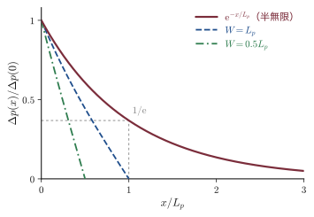
例題24.1 Si の拡散長と太陽電池の厚さ
(1) p 型 Si 基板中の電子（$D_n=36\,\mathrm{cm^2/s}$，$\tau_n=10\,\mu\mathrm{s}$）と，n 型の高濃度層中の正孔（$D_p=12\,\mathrm{cm^2/s}$，$\tau_p=1\,\mu\mathrm{s}$）の拡散長を求めよ（簡単のため，高濃度層でも表24.1 の低濃度の値を使う．実際には正孔の移動度は濃度とともに下がる）．(2) GaAs 中の電子（$D_n=220\,\mathrm{cm^2/s}$（表24.1），$\tau_n=10\,\mathrm{ns}$）の拡散長を求めよ．(3) 結晶 Si 太陽電池の基板の厚さは $150$〜$180\,\mu\mathrm{m}$ 程度である．この厚さが (1) の結果とどう関係しているか論ぜよ．
解答．(1) 式 \eqref{eq:24-L} より，単位を cm と s にそろえて
$$ L_n=\sqrt{D_n\tau_n}=\sqrt{(36\,\mathrm{cm^2/s})(10\times10^{-6}\,\mathrm{s})}=\sqrt{3.6\times10^{-4}\,\mathrm{cm^2}}=1.9\times10^{-2}\,\mathrm{cm}=190\,\mu\mathrm{m} $$ $$ L_p=\sqrt{(12\,\mathrm{cm^2/s})(1\times10^{-6}\,\mathrm{s})}=\sqrt{1.2\times10^{-5}\,\mathrm{cm^2}}=3.5\times10^{-3}\,\mathrm{cm}=35\,\mu\mathrm{m} $$(2) 同じく
$$ L_n=\sqrt{(220\,\mathrm{cm^2/s})(10\times10^{-9}\,\mathrm{s})}=\sqrt{2.2\times10^{-6}\,\mathrm{cm^2}}=1.5\times10^{-3}\,\mathrm{cm}=15\,\mu\mathrm{m} $$(3) 太陽電池では，光が作った少数キャリア（p 型基板では電子）が表面近くの p-n 接合まで拡散してきて初めて電流になる．Si は間接遷移型で光は $100\,\mu\mathrm{m}$ 以上の深さまで届く（第17章の例題17.1）ので，拡散長が基板の厚さと同程度以上でなければならず，(1) の $L_n=190\,\mu\mathrm{m}$ はちょうどその条件を満たす．拡散にかかる時間で言い直すと，$150\,\mu\mathrm{m}$ 進むのに $t\sim x^2/D_n$，すなわち $(1.5\times10^{-2}\,\mathrm{cm})^2/(36\,\mathrm{cm^2/s})=6.3\,\mu\mathrm{s}$ かかり，これが寿命 $10\,\mu\mathrm{s}$ より短い．一方 GaAs は直接遷移型で $2$〜$3\,\mu\mathrm{m}$ で光を吸い尽くすので，$L_n=15\,\mu\mathrm{m}$ で十分である．∎ 太陽電池の設計の第一原理は「少数キャリアの拡散長 ＞ 光の侵入深さ」である．Si 太陽電池の製造で結晶の純度（寿命）が厳しく管理されるのはこのためである．
24.1.6 Haynes–Shockley の実験
1947年の末に Bell 研究所で点接触型トランジスタが発明され，翌年 W. Shockley（ショックレー）は接合型トランジスタの理論を考えた．その動作原理は「n 型の結晶に正孔を注入すると，正孔は少数キャリアとして生き延び，結晶の中を動いていく」というものだった．本当にそうなのか．1949年，J. R. Haynes（ヘインズ）と Shockley は，注入された正孔が結晶の中を走る時間を直接測るという見事な実験でこれを確かめた（詳しい報告は1951年）．
図24.4 のように，n 型 Ge の細長い棒に電池で電圧をかけて一様な電場 $\mathcal{E}$ を作る．$x=0$ にあるエミッタ（emitter．正孔を注入する針）から時刻 $t=0$ に正孔をパルス的に注入し，距離 $d$ だけ離れたコレクタ（collector．正孔を集める針）で正孔の到着を電流として観測する．
導出：Haynes–Shockley 実験の解 — ドリフトしながら広がる Gauss 型
方程式．注入のあとは光生成がないので，式 \eqref{eq:24-mcde} で $G_L=0$ とした
$$ \frac{\partial\Delta p}{\partial t}=D\frac{\partial^2\Delta p}{\partial x^2}-\mu\mathcal{E}\frac{\partial\Delta p}{\partial x}-\frac{\Delta p}{\tau} $$を解く（この導出では正孔の添字 $p$ を省いて $D,\mu,\tau$ と書く）．初期条件は「$t=0$ に $x=0$ に単位面積あたり $N$ 個の正孔を置く」，すなわち $\Delta p(x,0)=N\delta(x)$ である（$\delta$ は Dirac（ディラック）のデルタ関数，付録A A.9）．
第1段：再結合を取り除く．$\Delta p(x,t)=u(x,t)\,\ee^{-t/\tau}$ とおく．時間微分は積の微分により $\partial_t\Delta p=(\partial_tu)\ee^{-t/\tau}-(u/\tau)\ee^{-t/\tau}$ である．代入すると $-(u/\tau)\ee^{-t/\tau}$ が右辺の $-\Delta p/\tau$ と打ち消し，両辺を $\ee^{-t/\tau}$ で割って
$$ \frac{\partial u}{\partial t}=D\frac{\partial^2u}{\partial x^2}-\mu\mathcal{E}\frac{\partial u}{\partial x} $$第2段：ドリフトを取り除く．速度 $v\equiv\mu\mathcal{E}$ で動く座標 $\xi\equiv x-vt$（$\xi$ はクサイ）に乗り換え，$u(x,t)=w(\xi,t)$ と書く．合成関数の微分で $\partial u/\partial x=\partial w/\partial\xi$，$\partial^2u/\partial x^2=\partial^2w/\partial\xi^2$，そして $\partial\xi/\partial t=-v$ なので
$$ \frac{\partial u}{\partial t}=\frac{\partial w}{\partial t}+\frac{\partial w}{\partial\xi}\frac{\partial\xi}{\partial t}=\frac{\partial w}{\partial t}-v\frac{\partial w}{\partial\xi} $$である．代入すると $-v\,\partial w/\partial\xi$ の項が両辺で打ち消して
$$ \frac{\partial w}{\partial t}=D\frac{\partial^2w}{\partial\xi^2} $$となる．これは拡散方程式（熱伝導方程式，大学数学 第43章43.3）そのものである．
第3段：拡散方程式の解．$w(\xi,t)=\dfrac{N}{\sqrt{4\pi Dt}}\exp\!\left(-\dfrac{\xi^2}{4Dt}\right)$ が解であることを，微分して確かめる．$w=Nt^{-1/2}(4\pi D)^{-1/2}\ee^{-\xi^2/4Dt}$ と書くと
$$ \frac{\partial w}{\partial t}=w\left(-\frac{1}{2t}+\frac{\xi^2}{4Dt^2}\right),\qquad \frac{\partial w}{\partial\xi}=w\left(-\frac{\xi}{2Dt}\right),\qquad \frac{\partial^2w}{\partial\xi^2}=w\left(\frac{\xi^2}{4D^2t^2}-\frac{1}{2Dt}\right) $$（2番目をもう一度 $\xi$ で微分するとき，$w$ の微分と $-\xi/2Dt$ の微分の両方を拾う．）$D$ を掛けた3番目は1番目と一致する．また $\int_{-\infty}^{\infty}w\,\dd\xi=N$（Gauss 積分 $\int\ee^{-a\xi^2}\dd\xi=\sqrt{\pi/a}$，付録A A.4）で粒子数が保たれ，$t\to0$ で幅ゼロの山 $N\delta(\xi)$ になるので初期条件も満たす．
まとめ．元の変数に戻して
∎ 山の中心は速さ $\mu\mathcal{E}$ で動き（ドリフト），幅は $\sqrt{Dt}$ に比例して広がり（拡散），面積は $N\ee^{-t/\tau}$ で減る（再結合）．
図24.5(a) は式 \eqref{eq:24-hs} を3つの時刻で描いたもので，(b) はコレクタの位置 $x=d$ で見た時間波形である．波形から3つの量が読み取れる．
- 移動度：山が届く時刻 $t_d$ は $d=\mu\mathcal{E}t_d$ から決まる．
- 拡散係数：$t\simeq t_d$ での空間分布 $\exp[-\xi^2/(4Dt_d)]$ は $\xi=\pm2\sqrt{Dt_d}$ で山の $1/\ee$ になるので，$1/\ee$ での全幅は $4\sqrt{Dt_d}$ である．この山が速さ $\mu\mathcal{E}$ でコレクタを通り過ぎるのにかかる時間が，波形の $1/\ee$ 全幅 $\Delta t=4\sqrt{Dt_d}/(\mu\mathcal{E})$ である（通過のあいだの広がりは小さいとする）．これを $D$ について解く．
- 寿命：コレクタで見る時間波形の面積 $\int\Delta p(d,t)\,\dd t$ は，そのときの正孔の数 $N\ee^{-t_d/\tau}$ を，山がコレクタを通り過ぎる速さ $\mu\mathcal{E}$ で割った $(N/\mu\mathcal{E})\,\ee^{-t_d/\tau}$ に比例する（同じ数の正孔でも，ゆっくり通り過ぎるほど長く信号が出る）．そこで電場を一定にしてコレクタの距離 $d$ を変え（$t_d$ を変え），面積の比をとれば $\tau$ がわかる．電場を変えて $t_d$ を変えるときは，面積に $\mathcal{E}$ を掛けてから比をとる．
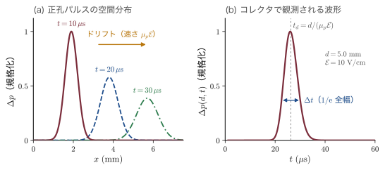
例題24.2 Haynes–Shockley の実験から移動度と拡散係数を求める
n 型 Ge の試料で，エミッタとコレクタの距離 $d=0.50\,\mathrm{cm}$，電場 $\mathcal{E}=10\,\mathrm{V/cm}$ のとき，正孔パルスの到着時刻が $t_d=26\,\mu\mathrm{s}$，波形の $1/\ee$ 全幅が $\Delta t=7.6\,\mu\mathrm{s}$ であった．(1) $\mu_p$ と $D_p$ を求めよ．(2) $D_p/\mu_p$ を $k_BT/e$（300 K）と比べよ．(3) 電場は $10\,\mathrm{V/cm}$ のままでコレクタを $d=1.00\,\mathrm{cm}$ の位置に移すと，到着時刻は $t_d=52\,\mu\mathrm{s}$ になり，波形の面積は $0.30$ 倍になった．寿命 $\tau_p$ を求めよ．
解答．(1) 式 \eqref{eq:24-hs-mu} より
$$ \mu_p=\frac{d}{\mathcal{E}t_d}=\frac{0.50\,\mathrm{cm}}{(10\,\mathrm{V/cm})(26\times10^{-6}\,\mathrm{s})}=1.9\times10^{3}\,\mathrm{cm^2/(V\,s)} $$ $$ D_p=\frac{d^2(\Delta t)^2}{16\,t_d^3}=\frac{(0.50\,\mathrm{cm})^2(7.6\times10^{-6}\,\mathrm{s})^2}{16\,(26\times10^{-6}\,\mathrm{s})^3} =\frac{1.44\times10^{-11}\,\mathrm{cm^2\,s^2}}{2.81\times10^{-13}\,\mathrm{s^3}}=51\,\mathrm{cm^2/s} $$(2) $D_p/\mu_p=51/1923=0.027\,\mathrm{V}$．室温の $k_BT/e=0.026\,\mathrm{V}$ と3% 程度で一致し，Einstein の関係 \eqref{eq:24-einstein} が少数キャリアについても成り立つことが確かめられる．
(3) 電場が同じなので，山がコレクタを通り過ぎる速さ $\mu_p\mathcal{E}$ は変わらない．したがって波形の面積 $(N/\mu_p\mathcal{E})\,\ee^{-t_d/\tau_p}$ は $\ee^{-t_d/\tau_p}$ の因子だけで変わり，面積の比は $\ee^{-(52-26)\,\mu\mathrm{s}/\tau_p}=0.30$ である．対数をとって
$$ \tau_p=\frac{(52-26)\,\mu\mathrm{s}}{\ln(1/0.30)}=\frac{26\,\mu\mathrm{s}}{1.20}=22\,\mu\mathrm{s} $$∎ 1組の実験で $\mu$，$D$，$\tau$ の3つがすべて測れる．学生がやりがちな誤り：電場を半分にして $t_d$ を2倍にしたときに，面積の比をそのまま $\ee^{-26\,\mu\mathrm{s}/\tau_p}$ とおくこと．山が半分の速さで通り過ぎるので面積は2倍になり，比は $2\ee^{-26\,\mu\mathrm{s}/\tau_p}$ になる（$\tau_p=22\,\mu\mathrm{s}$ なら約0.6）．注入された正孔が電場に引かれて「走る」ことを目で見えるようにしたこの実験は，少数キャリアの注入という考え方を確立し，接合型トランジスタの実現を後押しした．
24.1.7 表面再結合速度
結晶の表面では原子の結合が断ち切られており，バンドギャップの中に多数の電子準位（表面準位，24.4節）ができる．これらは電子と正孔を次々に捕まえて再結合させる「排水口」として働く．表面での再結合は面積あたりの率で表すのが自然である．
定義：表面再結合速度
表面 $x=0$ で単位面積・単位時間あたりに再結合する少数キャリアの数 $U_s$ が，表面での過剰密度に比例するとき，その比例係数 $S_r$ を表面再結合速度（surface recombination velocity）という：
$$ U_s=S_r\,\Delta p(0) $$$S_r$ は速度の次元（$\mathrm{cm/s}$）を持つ．「正孔が速さ $S_r$ で表面の排水口に吸い込まれる」と読めばよい．表面準位の面密度を $N_{st}$，その捕獲断面積（準位が電子や正孔を捕まえる的の面積）を $\sigma_c$，熱速度を $v_{th}\sim10^{7}\,\mathrm{cm/s}$ とすると，$S_r\simeq\sigma_cv_{th}N_{st}$ である．
表面に吸い込まれる正孔は内部から拡散で補給されなければならないので，表面では「表面へ向かう拡散の粒子束＝表面での再結合率」という境界条件が成り立つ．$x\gt0$ が試料の内部のとき，表面へ（$-x$ 向きに）向かう粒子束は $+D_p\,\dd\Delta p/\dd x$ だから
導出：一様な光生成と表面再結合
半無限の n 型試料（$x\ge0$）を一様に照らし，生成率 $G$ で正孔を作る．定常状態の式 \eqref{eq:24-mcde}（$\mathcal{E}=0$）は $D_p\Delta p''-\Delta p/\tau_p+G=0$ である．$\Delta p=G\tau_p$（一定）が特解なので，一般解は $\Delta p=G\tau_p+A\,\ee^{-x/L_p}$（$x\to\infty$ で発散する解は捨てた）．境界条件 \eqref{eq:24-srv} に $\Delta p'(0)=-A/L_p$ と $\Delta p(0)=G\tau_p+A$ を入れると
$$ -\frac{D_pA}{L_p}=S_r\,(G\tau_p+A) \quad\Longrightarrow\quad A=-\frac{S_r\,G\tau_p}{S_r+D_p/L_p}=-G\tau_p\frac{S_r\tau_p}{L_p+S_r\tau_p} $$（最後に $D_p/L_p=L_p/\tau_p$ を使い，分子分母に $\tau_p$ を掛けた）．したがって
∎ $S_r=0$ なら一様に $G\tau_p$，$S_r\to\infty$ なら表面で $\Delta p(0)=0$ となり，その影響は内部へ拡散長 $L_p$ 程度まで及ぶ（図24.6）．表面再結合が効くかどうかは $S_r$ と「拡散速度」$L_p/\tau_p=D_p/L_p$ の大小で決まる．
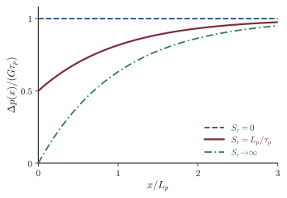
例題24.3 表面の不動態化はどれほど効くか
n 型 Si（$D_p=12\,\mathrm{cm^2/s}$，$\tau_p=1\,\mu\mathrm{s}$）を一様に照らす．表面再結合速度が (a) $S_r=10^{4}\,\mathrm{cm/s}$（不動態化していない表面），(b) $S_r=10\,\mathrm{cm/s}$（良質の酸化膜で覆った表面）のとき，表面での過剰正孔密度 $\Delta p(0)$ は内部の値 $G\tau_p$ の何割か．また，捕獲断面積 $\sigma_c=10^{-15}\,\mathrm{cm^2}$，$v_{th}=10^{7}\,\mathrm{cm/s}$ として，(a)(b) に対応する表面準位の面密度を見積もれ．
解答．例題24.1 より $L_p=35\,\mu\mathrm{m}=3.46\times10^{-3}\,\mathrm{cm}$．式 \eqref{eq:24-srv-sol} で $x=0$ とおくと
$$ \frac{\Delta p(0)}{G\tau_p}=1-\frac{S_r\tau_p}{L_p+S_r\tau_p}=\frac{L_p}{L_p+S_r\tau_p} $$(a) $S_r\tau_p$ は $(10^{4}\,\mathrm{cm/s})(10^{-6}\,\mathrm{s})=1.0\times10^{-2}\,\mathrm{cm}$ なので
$$ \frac{\Delta p(0)}{G\tau_p}=\frac{3.46\times10^{-3}}{3.46\times10^{-3}+1.0\times10^{-2}}=0.26 $$(b) $S_r\tau_p=1.0\times10^{-5}\,\mathrm{cm}$ は $L_p$ よりずっと小さいので，$\Delta p(0)/(G\tau_p)=3.46/3.47=0.997$．
表面準位密度は $N_{st}=S_r/(\sigma_cv_{th})$ より，(a) $10^{4}/(10^{-15}\times10^{7})=10^{12}\,\mathrm{cm^{-2}}$，(b) $10^{9}\,\mathrm{cm^{-2}}$ 程度．∎ 表面の原子1000個に1個程度の割合で準位があるだけで（Si の表面原子は $\sim7\times10^{14}\,\mathrm{cm^{-2}}$），表面付近の少数キャリアの4分の3が失われる．高効率の Si 太陽電池が表面を SiO₂ や $\mathrm{Al_2O_3}$，水素を含む窒化シリコンで覆う（不動態化，passivation）のは，この損失を防ぐためである．
24.1.8 準 Fermi 準位
熱平衡では1本の Fermi 準位 $E_F$ が電子と正孔の両方の数を決め，その結果 $np=n_i^2$ が成り立つ．光を当てたり電流を流したりすると $np\ne n_i^2$ になり，1本の $E_F$ では電子と正孔の両方を表せなくなる．それでも，次の時間スケールの違いのおかげで「Fermi 準位のようなもの」を使い続けることができる．
- 伝導帯の中で電子どうし・電子とフォノンが散乱してエネルギー分布が熱平衡の形になる時間：$\sim0.1$〜$1\,\mathrm{ps}$．
- 電子と正孔が再結合して数が熱平衡の値に戻る時間：寿命 $\tau\sim\mathrm{ns}$〜$\mathrm{ms}$．
したがって，伝導帯の電子は「数は余分だが，分布の形は温度 $T$ の Fermi–Dirac 分布」という状態に素早く落ち着く．価電子帯の正孔も同様である．この2つの準平衡をそれぞれ別の Fermi 準位で表したものが準 Fermi 準位（quasi-Fermi level，imref とも呼ぶ）である．
定義：準 Fermi 準位 $E_{Fn}$，$E_{Fp}$
非平衡状態の電子密度 $n$ と正孔密度 $p$ を，熱平衡の式で $E_F$ を置き換えた形で表す：
$$ \begin{aligned} n&=N_c\exp\!\left(-\frac{E_c-E_{Fn}}{k_BT}\right)=n_i\exp\!\left(\frac{E_{Fn}-E_i}{k_BT}\right),\\ p&=N_v\exp\!\left(-\frac{E_{Fp}-E_v}{k_BT}\right)=n_i\exp\!\left(\frac{E_i-E_{Fp}}{k_BT}\right) \end{aligned} $$$E_{Fn}$ を電子の準 Fermi 準位，$E_{Fp}$ を正孔の準 Fermi 準位という．$E_i$ は真性準位（真性半導体の Fermi 準位，ほぼギャップの中央）である．$N_c$，$N_v$ は伝導帯・価電子帯の有効状態密度（第17章17.5節）．
2つ目の表し方は次のようにして得られる．真性半導体では $n=n_i$，Fermi 準位は $E_i$ だから $n_i=N_c\exp[-(E_c-E_i)/k_BT]$．$n$ の式をこれで割ると $n/n_i=\exp[(E_{Fn}-E_i)/k_BT]$ となる．正孔も同様である．
導出：$np=n_i^2\,\ee^{(E_{Fn}-E_{Fp})/k_BT}$ と準 Fermi 準位の勾配が電流を運ぶこと
(1) 積．定義の2つ目の形を掛け合わせると，指数関数の積は指数の和なので
$$ np=n_i^2\exp\!\left(\frac{E_{Fn}-E_i}{k_BT}\right)\exp\!\left(\frac{E_i-E_{Fp}}{k_BT}\right)=n_i^2\exp\!\left(\frac{E_{Fn}-E_{Fp}}{k_BT}\right) $$熱平衡では $E_{Fn}=E_{Fp}=E_F$ で $np=n_i^2$ に戻る．準 Fermi 準位の分裂 $E_{Fn}-E_{Fp}$ が，非平衡の度合いを表す．
(2) 電流．$n=n_i\exp[(E_{Fn}-E_i)/k_BT]$ を $x$ で微分する．$E_i$ はバンドと一緒に電位で動き，$E_i(x)=\text{一定}-e\phi(x)$ なので $\dd E_i/\dd x=-e\,\dd\phi/\dd x=e\mathcal{E}$ である．よって
$$ \frac{\dd n}{\dd x}=\frac{n}{k_BT}\left(\frac{\dd E_{Fn}}{\dd x}-\frac{\dd E_i}{\dd x}\right)=\frac{n}{k_BT}\left(\frac{\dd E_{Fn}}{\dd x}-e\mathcal{E}\right) $$これを式 \eqref{eq:24-currents} の電子電流に入れ，Einstein の関係 $eD_n/k_BT=\mu_n$ を使うと
$$ J_n=en\mu_n\mathcal{E}+eD_n\frac{n}{k_BT}\left(\frac{\dd E_{Fn}}{\dd x}-e\mathcal{E}\right) =en\mu_n\mathcal{E}+\mu_nn\frac{\dd E_{Fn}}{\dd x}-en\mu_n\mathcal{E} =\mu_nn\frac{\dd E_{Fn}}{\dd x} $$正孔についても同様に計算して
∎ ドリフトと拡散の2項が，準 Fermi 準位の傾き1つにまとまった．準 Fermi 準位が傾いている所にだけ電流が流れる．熱平衡で $E_F$ が平らなことは「電流が流れない」ことと同じである．また，キャリアが多い所では小さな傾きで大きな電流が流れるので，多数キャリアの準 Fermi 準位はほとんど平らなまま電流を運ぶ．この事実が24.2.6項の理想ダイオード式の導出の鍵になる．
例題24.4 光を当てた Si の準 Fermi 準位
$N_D=10^{16}\,\mathrm{cm^{-3}}$ の n 型 Si（$n_i=1.0\times10^{10}\,\mathrm{cm^{-3}}$，300 K）に光を当て，$\Delta n=\Delta p=10^{14}\,\mathrm{cm^{-3}}$ の過剰キャリアを一様に作った．(1) 暗いときの $E_F-E_i$ を求めよ．(2) 光照射下の $E_{Fn}-E_i$ と $E_i-E_{Fp}$ を求めよ．(3) 準 Fermi 準位の分裂 $E_{Fn}-E_{Fp}$ を求め，その意味を述べよ．
解答．$k_BT=0.02585\,\mathrm{eV}$ を使う．
(1) 暗いときは $n_0=N_D$ なので
$$ E_F-E_i=k_BT\ln\frac{n_0}{n_i}=0.02585\,\mathrm{eV}\times\ln(10^{6})=0.02585\times13.82\,\mathrm{eV}=0.357\,\mathrm{eV} $$(2) $n=10^{16}+10^{14}=1.01\times10^{16}\,\mathrm{cm^{-3}}$ より $E_{Fn}-E_i=k_BT\ln(1.01\times10^{6})$ で，その値は $0.3574\,\mathrm{eV}$ である．暗いときから $0.26\,\mathrm{meV}$ しか上がらない．一方 $p=p_0+\Delta p$ は $10^{4}+10^{14}\simeq1.0\times10^{14}\,\mathrm{cm^{-3}}$ なので $E_i-E_{Fp}=k_BT\ln(10^{4})$ で，その値は $0.02585\times9.21\,\mathrm{eV}=0.238\,\mathrm{eV}$（4桁で $0.2381\,\mathrm{eV}$）である．暗いときは $E_{Fp}=E_F$（$E_i$ の $0.357\,\mathrm{eV}$ 上）だったので，正孔の準 Fermi 準位は $0.357+0.238=0.595\,\mathrm{eV}$ も下がった．
(3) (2) の2つを足すと $E_{Fn}-E_{Fp}=(0.3574+0.2381)\,\mathrm{eV}$，すなわち $0.5955\simeq0.596\,\mathrm{eV}$ である（(2) の $0.595\,\mathrm{eV}$ は暗いときの $E_F$ から測った下がり幅で，$E_{Fn}$ がわずかに上がったぶんだけ分裂のほうが大きい）．検算として式 \eqref{eq:24-qfl} を使うと
$$ E_{Fn}-E_{Fp}=k_BT\ln\frac{np}{n_i^2}=0.02585\times\ln\frac{1.01\times10^{30}}{10^{20}}\,\mathrm{eV}=0.596\,\mathrm{eV} $$∎ 光は多数キャリアの準 Fermi 準位をほとんど動かさず，少数キャリアの準 Fermi 準位を大きく動かす．この分裂は，光が半導体の中に作り出した「電気化学ポテンシャルの差」であり，この試料に p-n 接合を作り込んで電極を付ければ，最大でおよそ $0.6\,\mathrm{V}$ の電圧を取り出せる．太陽電池の開放電圧の正体である（第25章25.9節）．
24.1.9 再結合の機構（予告）
寿命 $\tau$ を決める再結合には，主に3つの道がある．
- バンド間の輻射再結合：伝導帯の電子が価電子帯の正孔に直接落ちて光子を出す．率は $Bnp$．直接遷移型の GaAs では速く（寿命 $10\,\mathrm{ns}$ 程度），LED とレーザーの原理である．間接遷移型の Si では $B$ が4〜5桁小さい．
- 深い準位を介した再結合（Shockley–Read（リード）–Hall（ホール）再結合）：ギャップの中央付近にある不純物・欠陥の準位が電子と正孔を交互に捕まえて再結合させる．準位の密度を $N_t$，捕獲断面積を $\sigma_c$ とすると $\tau\simeq1/(\sigma_cv_{th}N_t)$ で，$N_t=10^{12}\,\mathrm{cm^{-3}}$，$\sigma_c=10^{-15}\,\mathrm{cm^2}$ でも $\tau\simeq100\,\mu\mathrm{s}$ と，わずかな不純物が寿命を決める．Si の寿命を決めるのはふつうこれである．
- Auger（オージェ）再結合：再結合のエネルギーを光ではなく第3のキャリアがもらう．率は $\propto n^2p$ や $np^2$ で，高濃度ドープ層や強い注入で効く．
これらの統計（SRH の式の導出，van Roosbroeck（ファン・ルースブルック）–Shockley の関係，Auger 係数）は第26章26.1節で詳しく扱う．本章では寿命 $\tau$ を与えられた定数として使い，24.2.7項で空乏層の中の再結合を考えるときにだけ SRH の式の結果を借りる．
24.2 p-n 接合
24.2.1 接合ができるまで
1枚の Si の結晶の左半分にアクセプター（B など）を，右半分にドナー（P など）を入れたものを p-n 接合（p-n junction）という．実際には，n 型の基板の表面から B を拡散させたりイオン注入したりして作る．2枚の結晶を貼り合わせるわけではないが，「別々にあった p 型と n 型を接触させたら何が起こるか」と考えるとわかりやすい（図24.7(a)）．
- 接触の瞬間，n 側には電子が，p 側には正孔が大量にある．密度の差によって電子は p 側へ，正孔は n 側へ拡散する．
- 電子が去った n 側の接合付近には，動けないイオン化したドナー（正電荷）が取り残される．正孔が去った p 側にはイオン化したアクセプター（負電荷）が残る．この，キャリアがほとんどいない層を空乏層（depletion layer）または空間電荷層（space-charge region）という．その外側の，電荷がほぼ中性で多数キャリアが自由に動ける領域を中性領域（neutral region）という．
- 正負のイオンの層は，n 側から p 側へ向かう電場を作る．この電場は電子を n 側へ，正孔を p 側へ押し戻すので，拡散の流れと逆向きのドリフトの流れを生む．
- 両者が釣り合ったところで熱平衡になる．このとき Fermi 準位は全体で一定であり（電流が流れないので，式 \eqref{eq:24-qfl} より $E_F$ が平ら），その代わりにバンドが曲がって，p 側と n 側のあいだに電位の段差 $V_{bi}$ ができる（図24.7(b)）．
24.2.2 拡散電位
電位の段差 $V_{bi}$ を拡散電位（diffusion potential）または内蔵電位（built-in potential）という．第17章17.9.3項で化学ポテンシャルを使って簡単に導いた式を，ここでは2通りの考え方で導き直す．
導出：拡散電位 $V_{bi}=\dfrac{k_BT}{e}\ln\dfrac{N_AN_D}{n_i^2}$
方法1：Fermi 準位のずれから．接触前の n 型・p 型の Fermi 準位を $E_F^{(\mathrm n)}$，$E_F^{(\mathrm p)}$ と書く（24.1.8項の準 Fermi 準位 $E_{Fn}$，$E_{Fp}$ とは別のもの）．n 型の Fermi 準位は真性準位より $E_F^{(\mathrm n)}-E_i=k_BT\ln(N_D/n_i)$ だけ上にあり（例題24.4 と同じ計算．ドナーはすべてイオン化し $n_0=N_D$），p 型の Fermi 準位は $E_i-E_F^{(\mathrm p)}=k_BT\ln(N_A/n_i)$ だけ下にある．接触して Fermi 準位がそろうと，p 側のバンド全体が n 側に対して，接触前の Fermi 準位の差だけ持ち上がる：
$$ eV_{bi}=E_F^{(\mathrm n)}-E_F^{(\mathrm p)}=k_BT\ln\frac{N_D}{n_i}+k_BT\ln\frac{N_A}{n_i}=k_BT\ln\frac{N_AN_D}{n_i^2} $$方法2：正孔の流れの釣り合いから．熱平衡では正孔電流 $J_p=ep\mu_p\mathcal{E}-eD_p\,\dd p/\dd x=0$ である．Einstein の関係 $D_p=\mu_pk_BT/e$ と $\mathcal{E}=-\dd\phi/\dd x$ を使って変形すると
$$ -p\frac{\dd\phi}{\dd x}=\frac{k_BT}{e}\frac{\dd p}{\dd x} \quad\Longrightarrow\quad -\dd\phi=\frac{k_BT}{e}\frac{\dd p}{p} $$これを p 側の中性領域（電位 $\phi_p$，正孔密度 $p_{p0}=N_A$）から n 側の中性領域（電位 $\phi_n$，正孔密度 $p_{n0}=n_i^2/N_D$）まで積分すると（添字は「左が領域の型，右の0が熱平衡」を表す．$p_{p0}$ は p 型領域の正孔の熱平衡密度，$p_{n0}$ は n 型領域の正孔の熱平衡密度で，電子についても $n_{n0}$，$n_{p0}$ と書く）
$$ -(\phi_n-\phi_p)=\frac{k_BT}{e}\ln\frac{p_{n0}}{p_{p0}} \quad\Longrightarrow\quad V_{bi}\equiv\phi_n-\phi_p=\frac{k_BT}{e}\ln\frac{p_{p0}}{p_{n0}}=\frac{k_BT}{e}\ln\frac{N_AN_D}{n_i^2} $$∎ 2番目の式は「障壁 $eV_{bi}$ の向こう側の少数キャリア密度は，こちら側の多数キャリア密度に Boltzmann 因子を掛けたもの」と読める．これが24.2.6項で境界条件を作るときの考え方になる．
$V_{bi}$ は電圧計では測れない．電圧計の端子をつなぐと金属と半導体の接触にも電位差ができ，回路を一周すると総和がゼロになるからである（熱平衡の回路に電流は流れない）．$V_{bi}$ は次項で見る空乏層の容量などから間接的に決める．
24.2.3 空乏近似と Poisson 方程式
空乏層の電荷・電場・電位を求めるには，電荷が電場を作るという Gauss の法則を微分形で使う．1次元では
である（2つ目は $\mathcal{E}=-\dd\phi/\dd x$ を代入した Poisson 方程式．大学基礎物理学 第36章36.7）．電荷密度は $\rho=e(p-n+N_D-N_A)$ だが，空乏層の中でも $p$ と $n$ は場所とともに指数関数的に変わるので，このままでは解きにくい．そこで次の近似を使う．
定義：空乏近似（depletion approximation）
(i) $-x_p\lt x\lt x_n$ の空乏層ではキャリアは完全にいない（$n=p=0$）として，電荷はイオン化した不純物だけとする．(ii) その外側の中性領域では電荷はゼロ，電場もゼロとする．階段接合（$x\lt0$ で $N_A$，$x\gt0$ で $N_D$，どちらも一定）では
$$ \rho(x)=\begin{cases} -eN_A & (-x_p\lt x\lt0)\\ +eN_D & (0\lt x\lt x_n)\\ 0 & (\text{それ以外}) \end{cases} $$実際の境界はぼやけているが，ぼやけの幅は Debye 長程度（第21章21.3節．$N=10^{16}\,\mathrm{cm^{-3}}$ の Si で $40\,\mathrm{nm}$ 程度）で，空乏層の幅（$0.3\,\mu\mathrm{m}$ 程度）よりずっと小さい．
導出：階段接合の電場・電位・空乏層幅
以下 $\epsilon\equiv\epsilon_s\epsilon_0$ と書く．順方向を正とするバイアス電圧 $V$ をかけると，電位の段差は $V_{bi}-V$ に変わる（$V=0$ が熱平衡）．
(1) 電場．p 側の空乏層（$-x_p\lt x\lt0$）では式 \eqref{eq:24-poisson} は $\dd\mathcal{E}/\dd x=-eN_A/\epsilon$．空乏層の端 $x=-x_p$ で $\mathcal{E}=0$ という条件で積分すると
$$ \mathcal{E}(x)=\int_{-x_p}^{x}\left(-\frac{eN_A}{\epsilon}\right)\dd x'=-\frac{eN_A}{\epsilon}(x+x_p) $$n 側（$0\lt x\lt x_n$）では $\dd\mathcal{E}/\dd x=+eN_D/\epsilon$ で，$x=x_n$ で $\mathcal{E}=0$ だから
$$ \mathcal{E}(x)=-\int_x^{x_n}\frac{eN_D}{\epsilon}\,\dd x'=-\frac{eN_D}{\epsilon}(x_n-x) $$まとめて
(2) 電荷の中性．接合面 $x=0$ には面電荷がないので，電場は連続でなければならない．2つの式に $x=0$ を入れて等しいとおくと
$$ \frac{eN_Ax_p}{\epsilon}=\frac{eN_Dx_n}{\epsilon}\quad\Longrightarrow\quad N_Ax_p=N_Dx_n $$p 側の負電荷の総量と n 側の正電荷の総量が等しい，という当然の結果である．空乏層は濃度の低い側に深く広がる．電場の大きさは $x=0$ で最大で，$\mathcal{E}_{max}=eN_Ax_p/\epsilon=eN_Dx_n/\epsilon$ である．
(3) 電位．$\phi=-\int\mathcal{E}\,\dd x$ で，基準を $\phi(-x_p)=0$ にとる．p 側では
$$ \phi(x)=-\int_{-x_p}^{x}\mathcal{E}\,\dd x'=\frac{eN_A}{\epsilon}\int_{-x_p}^{x}(x'+x_p)\dd x'=\frac{eN_A}{2\epsilon}(x+x_p)^2 $$n 側では，$x=x_n$ で $\phi=V_{bi}-V$ になることを使うと，同じ計算で $\phi(x)=(V_{bi}-V)-\dfrac{eN_D}{2\epsilon}(x_n-x)^2$ を得る（微分すれば $-\mathcal{E}$ に戻ることで確かめられる）．
(4) 空乏層幅．電位は $x=0$ で連続でなければならない．2つの式に $x=0$ を入れて等置すると
$$ \frac{eN_Ax_p^2}{2\epsilon}=(V_{bi}-V)-\frac{eN_Dx_n^2}{2\epsilon} \quad\Longrightarrow\quad V_{bi}-V=\frac{e}{2\epsilon}\left(N_Ax_p^2+N_Dx_n^2\right) $$ここに (2) の $x_p=(N_D/N_A)x_n$ を代入すると
$$ V_{bi}-V=\frac{e}{2\epsilon}\left(\frac{N_D^2}{N_A}+N_D\right)x_n^2=\frac{eN_D(N_A+N_D)}{2\epsilon N_A}x_n^2 \quad\Longrightarrow\quad x_n=\sqrt{\frac{2\epsilon N_A(V_{bi}-V)}{eN_D(N_A+N_D)}} $$同様に
$$ x_p=\sqrt{\frac{2\epsilon N_D(V_{bi}-V)}{eN_A(N_A+N_D)}} $$全幅 $W=x_n+x_p=x_n(N_A+N_D)/N_A$ を2乗すると
$$ W^2=\frac{2\epsilon N_A(V_{bi}-V)}{eN_D(N_A+N_D)}\cdot\frac{(N_A+N_D)^2}{N_A^2}=\frac{2\epsilon}{e}\,\frac{N_A+N_D}{N_AN_D}\,(V_{bi}-V) $$∎ 最後の式は，図24.7(d) の三角形の面積 $\tfrac12\mathcal{E}_{max}W$ が電位差 $V_{bi}-V$ に等しいことから出る．順方向（$V\gt0$）では空乏層は薄く，逆方向（$V\lt0$）では厚くなる．
24.2.4 片側階段接合
実際のダイオードでは，片側をもう片側より何桁も高濃度にすることが多い（$\mathrm{p^+n}$ 接合，$\mathrm{n^+p}$ 接合．$+$ は高濃度の意味）．たとえば $N_D\gg N_A$ なら $(N_A+N_D)/(N_AN_D)\simeq1/N_A$ で，$x_n=(N_A/N_D)x_p\ll x_p$ となり，空乏層はほとんど低濃度側にできる：
$$ W\simeq x_p\simeq\sqrt{\frac{2\epsilon_s\epsilon_0(V_{bi}-V)}{eN_B}} $$ここで $N_B$ は低濃度側の濃度である．接合の性質（空乏層の幅，容量，降伏電圧）は低濃度側で決まる．
例題24.5 Si の $\mathrm{n^+p}$ 接合の空乏層
Si の階段接合で $N_A=10^{16}\,\mathrm{cm^{-3}}$（p 側），$N_D=10^{18}\,\mathrm{cm^{-3}}$（n 側），$n_i=1.0\times10^{10}\,\mathrm{cm^{-3}}$，$\epsilon_s=11.7$，$T=300\,\mathrm{K}$ とする．(1) $V_{bi}$，(2) $V=0$ での $W$，$x_p$，$x_n$，$\mathcal{E}_{max}$，(3) 逆バイアス $V=-5\,\mathrm{V}$ での $W$ と $\mathcal{E}_{max}$ を求めよ．
解答．(1) 式 \eqref{eq:24-vbi} より
$$ V_{bi}=0.02585\,\mathrm{V}\times\ln\frac{10^{16}\times10^{18}}{(10^{10})^2}=0.02585\,\mathrm{V}\times\ln(10^{14})=0.02585\times32.24\,\mathrm{V}=0.833\,\mathrm{V} $$(2) SI 単位で計算する．$N_A=10^{22}\,\mathrm{m^{-3}}$，$N_D=10^{24}\,\mathrm{m^{-3}}$，$\epsilon=11.7\times8.854\times10^{-12}\,\mathrm{F/m}$，すなわち $1.036\times10^{-10}\,\mathrm{F/m}$．式 \eqref{eq:24-W} で
$$ \begin{aligned} \frac{N_A+N_D}{N_AN_D}&=\frac{1.01\times10^{24}}{10^{46}}=1.01\times10^{-22}\,\mathrm{m^3},\\ \frac{2\epsilon}{e}&=\frac{2\times1.036\times10^{-10}}{1.602\times10^{-19}}=1.293\times10^{9}\,\mathrm{V^{-1}\,m^{-1}} \end{aligned} $$ $$ W=\sqrt{1.293\times10^{9}\times1.01\times10^{-22}\times0.833}\ \mathrm{m}=\sqrt{1.088\times10^{-13}}\ \mathrm{m}=3.30\times10^{-7}\,\mathrm{m}=0.330\,\mu\mathrm{m} $$$x_n:x_p=N_A:N_D=1:100$ なので $x_p=W\times100/101=0.327\,\mu\mathrm{m}$，$x_n=3.3\,\mathrm{nm}$．最大電場は
$$ \mathcal{E}_{max}=\frac{2V_{bi}}{W}=\frac{2\times0.833\,\mathrm{V}}{3.30\times10^{-7}\,\mathrm{m}}=5.05\times10^{6}\,\mathrm{V/m}=5.1\times10^{4}\,\mathrm{V/cm} $$(3) $W\propto\sqrt{V_{bi}-V}$ なので
$$ \begin{aligned} W(-5\,\mathrm{V})&=0.330\,\mu\mathrm{m}\times\sqrt{\frac{5.833}{0.833}}=0.330\times2.646\,\mu\mathrm{m}=0.873\,\mu\mathrm{m},\\ \mathcal{E}_{max}&=\frac{2\times5.833\,\mathrm{V}}{8.73\times10^{-7}\,\mathrm{m}}=1.34\times10^{7}\,\mathrm{V/m}=1.34\times10^{5}\,\mathrm{V/cm} \end{aligned} $$∎ 空乏層はほとんど p 側にあり，n 側にはわずか $3\,\mathrm{nm}$ しか食い込まない．$1\,\mathrm{V}$ 程度の電位差が $0.3\,\mu\mathrm{m}$ にかかるので，電場は $10^{4}$〜$10^{5}\,\mathrm{V/cm}$ にもなる．この強い電場が，太陽電池では光で生まれた電子と正孔を引き離し，さらに逆バイアスを深くすると雪崩降伏（第23章23.3節）を起こす．
24.2.5 接合容量と $1/C^2$–$V$ プロット
空乏層は，正負の電荷が向かい合った平行平板コンデンサーのように振る舞う．電圧を少し変えると空乏層の端でイオンの電荷が出入りし，電荷量が変わるからである．単位面積あたりの片側の電荷は $Q=eN_Ax_p$ なので，24.2.3項の導出で式 \eqref{eq:24-W} の直前に求めた $x_p$（$x_n$ の式の $N_A$ と $N_D$ を入れ替えたもの）を使って
$$ Q=eN_Ax_p=\sqrt{\frac{2\epsilon e N_AN_D}{N_A+N_D}(V_{bi}-V)} $$これを $V$ で微分した大きさが単位面積あたりの微分容量である．$\dd\sqrt{u}/\dd u=1/(2\sqrt u)$ を使い，最後に式 \eqref{eq:24-W} と見比べると
$$ \frac{C}{A}=\left|\frac{\dd Q}{\dd V}\right|=\frac12\sqrt{\frac{2\epsilon eN_AN_D}{(N_A+N_D)(V_{bi}-V)}}=\sqrt{\frac{\epsilon eN_AN_D}{2(N_A+N_D)(V_{bi}-V)}}=\frac{\epsilon}{W} $$となる．実際，式 \eqref{eq:24-W} の $W^2$ を使って $\epsilon/W$ を2乗すると
$$ \frac{\epsilon^2}{W^2}=\frac{\epsilon eN_AN_D}{2(N_A+N_D)(V_{bi}-V)} $$で，上の式の2乗と一致する．
極板の間隔が空乏層幅 $W$ の平行平板コンデンサーと同じ形である．ただし $W$ が電圧で変わるので，容量も電圧で変わる．
物理的意味：$1/C^2$–$V$ プロットで何がわかるか
式 \eqref{eq:24-C} によれば，$1/C^2$ を $V$ に対してプロットすると直線になる（図24.8(b)）．(i) 傾きから低濃度側の不純物濃度 $N_B$ が，(ii) 横軸との交点から $V_{bi}$ がわかる．不純物濃度が場所によって変わる場合も，各電圧での傾きから空乏層の端 $W=\epsilon A/C$ での濃度 $N(W)=\dfrac{2}{e\epsilon_s\epsilon_0A^2}\left[-\dfrac{\dd(1/C^2)}{\dd V}\right]^{-1}$ が求まる．これを C–V プロファイリングといい，ウェハのドーピング分布を非破壊で測る標準的な方法である．容量が電圧で変わる性質は，可変容量ダイオード（バラクター）として，ラジオやスマートフォンの同調回路・電圧制御発振器にそのまま使われる．
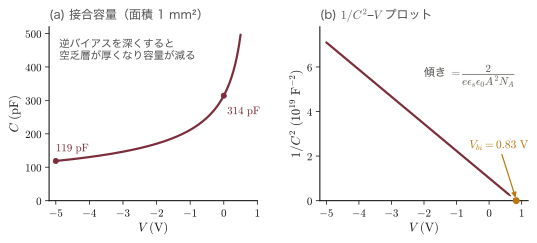
例題24.6 容量の測定から不純物濃度と拡散電位を求める
面積 $1.0\,\mathrm{mm^2}$ の Si の $\mathrm{n^+p}$ ダイオードの容量を測ったところ，$V=0$ で $314\,\mathrm{pF}$，$V=-5.0\,\mathrm{V}$ で $119\,\mathrm{pF}$ であった．$1/C^2$ が $V$ の1次式であるとして，p 側のアクセプター濃度 $N_A$ と拡散電位 $V_{bi}$ を求めよ．
解答．$1/C^2$ の値は
$$ \begin{aligned} \frac{1}{C(0)^2}&=\frac{1}{(314\times10^{-12}\,\mathrm{F})^2}=1.014\times10^{19}\,\mathrm{F^{-2}},\\ \frac{1}{C(-5)^2}&=\frac{1}{(119\times10^{-12}\,\mathrm{F})^2}=7.062\times10^{19}\,\mathrm{F^{-2}} \end{aligned} $$傾き $s$（$V$ を $1\,\mathrm{V}$ 下げたときの増加）は
$$ s=\frac{(7.062-1.014)\times10^{19}\,\mathrm{F^{-2}}}{5.0\,\mathrm{V}}=1.210\times10^{19}\,\mathrm{F^{-2}\,V^{-1}} $$式 \eqref{eq:24-C} の片側接合の形 $s=2/(e\epsilon A^2N_A)$ より，$A=1.0\times10^{-6}\,\mathrm{m^2}$ として
$$ \begin{aligned} N_A&=\frac{2}{e\epsilon A^2s}=\frac{2}{(1.602\times10^{-19})(1.036\times10^{-10})(10^{-12})(1.210\times10^{19})}\ \mathrm{m^{-3}}\\ &=9.96\times10^{21}\,\mathrm{m^{-3}}=1.0\times10^{16}\,\mathrm{cm^{-3}} \end{aligned} $$$V_{bi}$ は $1/C^2=0$ となる電圧である．$1/C^2=s(V_{bi}-V)$ に $V=0$ を入れて $V_{bi}=(1.014/1.210)\,\mathrm{V}=0.84\,\mathrm{V}$．
∎ 例題24.5 の値（$N_A=10^{16}\,\mathrm{cm^{-3}}$，$V_{bi}=0.833\,\mathrm{V}$）が，容量の測定だけから再現される．実際の測定では，10点以上の電圧で測って直線性を確かめ，傾きの変化から濃度分布まで読み取る．
24.2.6 Shockley の理想ダイオード式
いよいよ p-n 接合に流れる電流を求める．W. Shockley は1949年の論文で，次の4つの仮定のもとで電流を厳密に計算した．
- 空乏近似が成り立ち，空乏層の外は中性で電場がない．
- キャリアの統計は Boltzmann 近似でよい（非縮退）．
- 低水準注入：注入された少数キャリアは多数キャリアよりずっと少ない．
- 空乏層の中では生成・再結合が起こらない（電子電流と正孔電流は空乏層の中でそれぞれ一定）．
方針は図24.9(c) のとおりである．電圧は空乏層の端の少数キャリア密度を決め，その少数キャリアが中性領域を拡散する電流が全電流を決める．
導出1：空乏層の端の境界条件 $p_n(x_n)=p_{n0}\,\ee^{eV/k_BT}$
準 Fermi 準位で考える．順方向電圧 $V$ をかけると，p 側の電子のエネルギーは n 側に比べて $eV$ だけ下がるので，両側の中性領域の Fermi 準位の差は $E_{F}(\text{n 側})-E_{F}(\text{p 側})=eV$ となる．空乏層の中では，電子の準 Fermi 準位 $E_{Fn}$ は n 側の値のまま，正孔の準 Fermi 準位 $E_{Fp}$ は p 側の値のまま，ほぼ平らである（図24.9(a)）．なぜなら，空乏層の中では電子のドリフト電流と拡散電流はどちらも $10^{3}\,\mathrm{A/cm^2}$ 以上の大きさを持ってほとんど打ち消し合っており，正味の電流 $J_n=\mu_nn\,\dd E_{Fn}/\dd x$（式 \eqref{eq:24-qfl}）を流すのに必要な傾きはごくわずかだからである．したがって空乏層の中のどこでも $E_{Fn}-E_{Fp}=eV$ であり，式 \eqref{eq:24-qfl} より
$$ np=n_i^2\,\ee^{eV/k_BT}\qquad(\text{空乏層の中のどこでも}) $$これを n 側の空乏層の端 $x=x_n$ に適用する．低水準注入なので，そこの電子密度は多数キャリアの値 $n_{n0}=N_D$ のままである．よって
$$ p_n(x_n)=\frac{n_i^2}{n_{n0}}\,\ee^{eV/k_BT}=p_{n0}\,\ee^{eV/k_BT} $$Boltzmann 因子で考える（別解）．式 \eqref{eq:24-vbi} の第2式は，障壁の高さ $eV_{bi}$ を越えて反対側へしみ出す少数キャリアの密度を表していた．電圧をかけると障壁が $e(V_{bi}-V)$ になるので，$p_n(x_n)=p_{p0}\,\ee^{-e(V_{bi}-V)/k_BT}$，すなわち $p_{n0}\,\ee^{eV/k_BT}$ である．
p 側の端 $x=-x_p$ についても同様に
∎ これを接合の法則（law of the junction）と呼ぶ．順方向（$V\gt0$）では空乏層の端の少数キャリアが指数関数的に増え（注入），逆方向（$V\lt0$）では熱平衡の値 $p_{n0}$ よりさらに少なくなる（引き抜き）．
導出2：少数キャリアの拡散から $J=J_s(\ee^{eV/k_BT}-1)$ へ
(1) 中性領域の少数キャリア分布．n 側の中性領域（$x\gt x_n$）は電場がないので，24.1.5項の定常拡散の問題そのものである．過剰正孔密度 $p_n(x)-p_{n0}$ は式 \eqref{eq:24-L} にしたがって $x=x_n$ からの距離で指数関数的に減り，その初期値は式 \eqref{eq:24-bc} から $p_{n0}(\ee^{eV/k_BT}-1)$ である．p 側の電子も同様なので
（$x\lt-x_p$ では $x+x_p\lt0$ なので，2つ目も接合から離れると減る．）
(2) 空乏層の端での拡散電流．中性領域では電場がないので，少数キャリアの電流は拡散電流だけである．式 \eqref{eq:24-currents} より
$$ J_p(x_n)=-eD_p\frac{\dd p_n}{\dd x}\Big|_{x_n}=-eD_p\cdot p_{n0}\left(\ee^{eV/k_BT}-1\right)\left(-\frac{1}{L_p}\right)=\frac{eD_pp_{n0}}{L_p}\left(\ee^{eV/k_BT}-1\right) $$ $$ J_n(-x_p)=+eD_n\frac{\dd n_p}{\dd x}\Big|_{-x_p}=eD_n\cdot n_{p0}\left(\ee^{eV/k_BT}-1\right)\left(+\frac{1}{L_n}\right)=\frac{eD_nn_{p0}}{L_n}\left(\ee^{eV/k_BT}-1\right) $$どちらも正，すなわち p 側から n 側へ流れる．
(3) 全電流．仮定4により，空乏層の中では電子電流は一定なので $J_n(x_n)=J_n(-x_p)$．全電流は場所によらないから，$x=x_n$ で評価して
$$ J=J_p(x_n)+J_n(x_n)=J_p(x_n)+J_n(-x_p) $$(2) の2式を足し，$p_{n0}=n_i^2/N_D$，$n_{p0}=n_i^2/N_A$ を入れると
∎ これが Shockley の理想ダイオード式であり，$J_s$ を逆方向飽和電流密度（saturation current density）という．
物理的意味：なぜ一方向にしか流れないのか
順方向では，障壁を越えられる多数キャリアの数が Boltzmann 因子 $\ee^{eV/k_BT}$ で増えるので，電流は電圧とともに指数関数的に増える．$k_BT/e=25.85\,\mathrm{mV}$ ごとに $\ee$ 倍，$k_BT\ln10/e=59.5\,\mathrm{mV}$ ごとに10倍である．逆方向では障壁が高くなって多数キャリアは越えられず，流れるのは「空乏層の端から拡散長以内で熱的に生まれ，空乏層の電場に吸い込まれる少数キャリア」だけになる．その数は少数キャリア密度 $\propto n_i^2/N$ で決まり，電圧によらない．これが $-J_s$ に飽和する理由である．$J_s$ が $n_i^2$ に比例することに注意しよう．$E_g$ が大きいほど $n_i^2\propto\ee^{-E_g/k_BT}$ が小さく，同じ電流を流すのに大きな順方向電圧が要る．GaN の青色 LED が $3\,\mathrm{V}$ 程度で光り，Si ダイオードが $0.6$〜$0.7\,\mathrm{V}$ で導通するのはこのためである．
例題24.7 Si ダイオードの飽和電流と順方向電圧
例題24.5 の Si 接合で，p 側の電子は $D_n=36\,\mathrm{cm^2/s}$，$\tau_n=10\,\mu\mathrm{s}$，n 側の正孔は $D_p=12\,\mathrm{cm^2/s}$，$\tau_p=1\,\mu\mathrm{s}$ とする（例題24.1．n 側の正孔にも簡単のため低濃度の値を使う）．(1) $J_s$ を求めよ．電子と正孔の寄与のどちらが大きいか．(2) 面積 $1.0\,\mathrm{mm^2}$ のダイオードに $1\,\mathrm{mA}$ 流すのに必要な順方向電圧を求めよ．(3) そのとき空乏層の p 側の端の電子密度は $N_A$ に比べて小さいか（低水準注入の確認）．
解答．(1) 例題24.1 より $L_n=1.90\times10^{-2}\,\mathrm{cm}$，$L_p=3.46\times10^{-3}\,\mathrm{cm}$．$en_i^2=16.02\,\mathrm{C\,cm^{-6}}$（$e=1.602\times10^{-19}\,\mathrm{C}$，$n_i^2=10^{20}\,\mathrm{cm^{-6}}$）を使って，cm 単位のまま
$$ \begin{aligned} \frac{en_i^2D_n}{L_nN_A}&=\frac{16.02\times36}{(1.90\times10^{-2})(10^{16})}\ \mathrm{A/cm^2}=3.04\times10^{-12}\,\mathrm{A/cm^2},\\ \frac{en_i^2D_p}{L_pN_D}&=\frac{16.02\times12}{(3.46\times10^{-3})(10^{18})}\ \mathrm{A/cm^2}=5.6\times10^{-14}\,\mathrm{A/cm^2} \end{aligned} $$$J_s=3.1\times10^{-12}\,\mathrm{A/cm^2}$．電子（低濃度の p 側へ注入される少数キャリア）の寄与が98% を占める．
(2) 飽和電流は
$$ I_s=J_sA=(3.1\times10^{-12}\,\mathrm{A/cm^2})(0.010\,\mathrm{cm^2})=3.1\times10^{-14}\,\mathrm{A} $$$I=I_s(\ee^{eV/k_BT}-1)$ を $V$ について解くと
$$ V=\frac{k_BT}{e}\ln\left(\frac{I}{I_s}+1\right)=0.02585\,\mathrm{V}\times\ln\frac{10^{-3}}{3.1\times10^{-14}}=0.02585\times24.2\,\mathrm{V}=0.63\,\mathrm{V} $$(3) 式 \eqref{eq:24-bc} より
$$ n_p(-x_p)=n_{p0}\ee^{eV/k_BT}=(10^{4}\,\mathrm{cm^{-3}})\times\ee^{24.2}=3.2\times10^{14}\,\mathrm{cm^{-3}} $$$N_A=10^{16}\,\mathrm{cm^{-3}}$ の3% で，低水準注入の仮定は成り立っている．
∎ 「Si ダイオードの順方向電圧は約 $0.6$〜$0.7\,\mathrm{V}$」という回路の常識が，$n_i$，$D$，$\tau$ から出てきた．電流を10倍の $10\,\mathrm{mA}$ にしても電圧は $59.5\,\mathrm{mV}$ 増えて $0.69\,\mathrm{V}$ になるだけである．低濃度側が電流を決めるので，LED では発光させたい層を低濃度側（少数キャリアが注入される側）にする．
24.2.7 空乏層内の生成・再結合電流
実際の Si ダイオードの電流を精密に測ると，理想ダイオード式からずれる．小さな順方向電圧では電流は $\ee^{eV/2k_BT}$ に比例し，逆方向の電流は $J_s$ よりはるかに大きく，しかも電圧とともにゆっくり増える．原因は仮定4の破れ，すなわち空乏層の中での生成と再結合である．
深い準位を介した再結合（Shockley–Read–Hall 再結合，第26章26.1節）の正味の率は
$$ U=\frac{np-n_i^2}{\tau_p(n+n_1)+\tau_n(p+p_1)} $$で与えられる．$n_1$，$p_1$ は準位のエネルギー $E_t$ で決まる定数で，準位がギャップの中央（$E_t=E_i$）にあれば $n_1=p_1=n_i$ である．以下，$E_t=E_i$，$\tau_n=\tau_p\equiv\tau_0$ とする．このとき $U=(np-n_i^2)/[\tau_0(n+p+2n_i)]$ である．$U$ の符号は分子の $np-n_i^2$ で決まる：$np\gt n_i^2$（キャリアが熱平衡より多い）なら $U\gt0$ で再結合が勝ち，$np\lt n_i^2$（少ない）なら $U\lt0$ で生成が勝ち，熱平衡の $np=n_i^2$ では $U=0$ である．
導出：再結合電流 $J_{rec}\propto\ee^{eV/2k_BT}$ と生成電流 $J_{gen}\propto n_iW$
(1) 順方向．空乏層の中では準 Fermi 準位がほぼ平らなので $np=n_i^2\ee^{eV/k_BT}$ がどこでも一定である（導出1）．このとき分母の $n+p$ は，相加平均と相乗平均の関係 $n+p\ge2\sqrt{np}$ により $n=p=n_i\ee^{eV/2k_BT}$ で最小になる．したがって $U$ はそこで最大になり，その値は
$$ U_{max}=\frac{n_i^2\left(\ee^{eV/k_BT}-1\right)}{\tau_0\cdot2n_i\left(\ee^{eV/2k_BT}+1\right)} =\frac{n_i}{2\tau_0}\,\frac{\left(\ee^{eV/2k_BT}-1\right)\left(\ee^{eV/2k_BT}+1\right)}{\ee^{eV/2k_BT}+1} =\frac{n_i}{2\tau_0}\left(\ee^{eV/2k_BT}-1\right) $$（$\ee^{a}-1=(\ee^{a/2}-1)(\ee^{a/2}+1)$ と因数分解した）．空乏層の中で再結合した電子・正孔の対1組につき電荷 $e$ が回路を流れるので，再結合電流は $J_{rec}=e\int U\dd x$ である．$U$ を最大値で置き換えると，上限の見積もりとして
$$ J_{rec}\simeq\frac{en_iW}{2\tau_0}\left(\ee^{eV/2k_BT}-1\right) $$(2) 逆方向．空乏層の中では $n,p\ll n_i$ なので，分子は $-n_i^2$，分母は $2\tau_0n_i$ となり $U=-n_i/(2\tau_0)$（負の再結合，すなわち生成）．空乏層の全体で一様に電子・正孔対が生まれ，電場で両側へ掃き出されるので
∎ 拡散電流 $J_s\propto n_i^2$ に対して，生成・再結合電流は $n_i$ の1乗に比例する．
一般に，ダイオードの順方向電流は $J=J_0(\ee^{eV/\eta k_BT}-1)$ と書かれることが多い．$\eta$（イータ）を理想因子（ideality factor．文献では $n$ と書くことも多い）と呼び，拡散電流が支配すれば $\eta=1$，空乏層の再結合電流が支配すれば $\eta=2$ である．図24.10 は例題24.5・24.7 の Si ダイオードで両者を比べたもので，$0.34\,\mathrm{V}$ 付近より下では再結合電流（$119\,\mathrm{mV}$ で10倍），上では拡散電流（$59.5\,\mathrm{mV}$ で10倍）が勝つ．さらに大電流では，注入された少数キャリアが多数キャリアと同程度になって（高水準注入）再び $\eta\to2$ となり，最後は中性領域や電極の抵抗 $R_s$ による電圧降下 $IR_s$ で曲線が寝てくる．
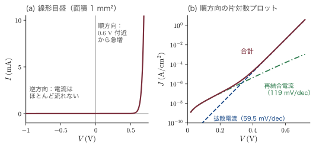
例題24.8 逆方向電流は「10 °C で2倍」になる — その理由
電子回路の経験則に「Si ダイオードの逆方向電流は温度が10 °C 上がるごとに約2倍になる」というものがある．(1) 例題24.5・24.7 の Si ダイオード（$\mathrm{n^+p}$ 接合，$N_A=10^{16}$，$N_D=10^{18}\,\mathrm{cm^{-3}}$，$\tau_0=10\,\mu\mathrm{s}$）で，$V=-5\,\mathrm{V}$ の生成電流 $J_{gen}$ を拡散電流 $J_s$ と比べよ．(2) 300 K 付近で $J_s$ と $J_{gen}$ がそれぞれ2倍になる温度上昇を求め，経験則を説明せよ．$E_g=1.11\,\mathrm{eV}$ は温度によらないとし，$n_i\propto T^{3/2}\ee^{-E_g/2k_BT}$ を使え．
解答．(1) 例題24.5 より $W(-5\,\mathrm{V})=0.873\,\mu\mathrm{m}$，すなわち $8.73\times10^{-5}\,\mathrm{cm}$．式 \eqref{eq:24-gr} より
$$ J_{gen}=\frac{(1.602\times10^{-19}\,\mathrm{C})(10^{10}\,\mathrm{cm^{-3}})(8.73\times10^{-5}\,\mathrm{cm})}{2\times10\times10^{-6}\,\mathrm{s}}=7.0\times10^{-9}\,\mathrm{A/cm^2} $$例題24.7 の $J_s=3.1\times10^{-12}\,\mathrm{A/cm^2}$ の約2000倍である．室温の Si の逆方向電流は生成電流が支配する．
(2) 対数をとって温度で微分する．$\ln n_i=\tfrac32\ln T-E_g/(2k_BT)+\text{定数}$ より
$$ \begin{aligned} \frac{\dd\ln n_i}{\dd T}&=\frac{3}{2T}+\frac{E_g}{2k_BT^2}=\frac{1.5}{300\,\mathrm{K}}+\frac{1.11\,\mathrm{eV}}{2\times(8.617\times10^{-5}\,\mathrm{eV/K})(300\,\mathrm{K})^2}\\ &=(0.0050+0.0716)\,\mathrm{K^{-1}}=0.0766\,\mathrm{K^{-1}} \end{aligned} $$$J_{gen}\propto n_i$ が2倍になる温度上昇は $\Delta T=\ln2/0.0766\,\mathrm{K^{-1}}=9.0\,\mathrm{K}$．一方 $J_s\propto n_i^2$ では対数微分が2倍の $0.153\,\mathrm{K^{-1}}$ になり，$\Delta T=4.5\,\mathrm{K}$ で2倍になる（$D$ や $L$ の温度変化は $n_i^2$ に比べてはるかに小さい）．
∎ 室温の Si で実際に流れている逆方向電流は $n_i$ に比例する生成電流なので「約10 °C で2倍」になる．理想ダイオードの飽和電流 $J_s$ そのものは約5 °C で2倍になる（回路の教科書で「$I_s$ は5 °C で2倍」と書かれるのはこちら）．Ge では $n_i$ が Si より3桁大きい（約2400倍）．$\tau_0=\tau_n$ とおくと $J_s/J_{gen}\simeq2n_iL_n/(N_AW)$ は $n_i$ に比例するので，同じ寸法なら例題の約 $1/2260$ が1程度まで大きくなり，生成電流と同程度以上になる．実際の Ge ダイオードの逆方向電流は拡散電流が主である．
24.2.8 拡散容量
順方向バイアスでは，中性領域に少数キャリアが蓄えられる（図24.9(c)）．電圧を変えるとこの蓄積量も変わるので，空乏層の容量とは別の容量が現れる．これを拡散容量（diffusion capacitance）という．n 側に蓄えられた正孔の電荷は，式 \eqref{eq:24-minority} を積分して
$$ Q_p=eA\int_{x_n}^{\infty}\left[p_n(x)-p_{n0}\right]\dd x=eAL_pp_{n0}\left(\ee^{eV/k_BT}-1\right)=I_p\,\tau_p $$となる（最後に $I_p=eAD_pp_{n0}(\ee^{eV/k_BT}-1)/L_p$ と $L_p^2/D_p=\tau_p$ を使った）．24.1.5項 (ii) で見た「蓄えられた電荷 ＝ 電流 × 寿命」である．$eV\gg k_BT$ では $\dd I_p/\dd V=(e/k_BT)I_p$ なので，素朴には拡散容量は $C_{\mathrm{diff}}=\dd Q_p/\dd V=(e/k_BT)I_p\tau_p$ となる．
導出：交流で考えると拡散容量は $g_d\tau/2$
（初めて読むときは，結果の式 \eqref{eq:24-Cd} と最後の ∎ の説明だけ読めばよい．）
直流電圧 $V_0$ に小さな交流 $\tilde v\,\ee^{-i\omega t}$ を重ねる（$\omega$ はオメガ．角振動数．時間の約束は本書の $\ee^{-i\omega t}$）．空乏層の端の正孔密度は式 \eqref{eq:24-bc} を1次まで展開して
$$ p_n(x_n)=p_{n0}\ee^{eV_0/k_BT}\left(1+\frac{e\tilde v\,\ee^{-i\omega t}}{k_BT}\right) $$と振動する．中性領域の過剰正孔の交流成分 $\tilde p(x)\ee^{-i\omega t}$ は式 \eqref{eq:24-mcde} で $\partial/\partial t\to-i\omega$ と置いた
$$ -i\omega\tilde p=D_p\tilde p''-\frac{\tilde p}{\tau_p} \quad\Longrightarrow\quad \tilde p''=\frac{1-i\omega\tau_p}{L_p^2}\,\tilde p $$にしたがい，遠くで減衰する解と，それが運ぶ交流の正孔電流は
$$ \begin{aligned} \tilde p(x)&=\tilde p(x_n)\exp\!\left[-\frac{(x-x_n)\sqrt{1-i\omega\tau_p}}{L_p}\right],\\ \tilde J_p&=-eD_p\tilde p'(x_n)=\frac{eD_p\tilde p(x_n)\sqrt{1-i\omega\tau_p}}{L_p} \end{aligned} $$である．$\tilde p(x_n)=p_{n0}\ee^{eV_0/k_BT}e\tilde v/k_BT$ を入れると，直流の $I_p$ を使って
$$ \frac{\tilde I_p}{\tilde v}=\frac{e}{k_BT}I_p\sqrt{1-i\omega\tau_p}\equiv g_d\sqrt{1-i\omega\tau_p} $$$g_d=eI_p/k_BT$ は微分コンダクタンス（電圧を少し変えたときの電流の変化の割合 $\dd I/\dd V$．抵抗の逆数にあたる）である．$\omega\tau_p\ll1$ で $\sqrt{1-i\omega\tau_p}\simeq1-i\omega\tau_p/2$ と展開すると，アドミタンス（交流の電流と電圧の比 $\tilde I/\tilde v$．抵抗の逆数を複素数に拡げたもので，実部が電流を流す働き，虚部が容量の働きを表す）は $g_d-i\omega(g_d\tau_p/2)$ となる．$\ee^{-i\omega t}$ の約束ではコンデンサーのアドミタンスは $-i\omega C$ なので
∎ 素朴な見積もりの半分になる．蓄えられた正孔の一部は，電圧が変わっても接合へ戻らずにその場で再結合してしまうからである．
24.2.9 短いダイオード
中性領域の幅 $W_n$（空乏層の端から電極まで）が拡散長 $L_p$ より短い場合を考える．電極（オーム接触）では過剰キャリアが瞬時に消えるので，境界条件は $p_n(x_n)-p_{n0}=p_{n0}(\ee^{eV/k_BT}-1)$ と $p_n(x_n+W_n)-p_{n0}=0$ である．24.1.5項 (iii) と同じく
$$ p_n(x)-p_{n0}=p_{n0}\left(\ee^{eV/k_BT}-1\right)\frac{\sinh[(x_n+W_n-x)/L_p]}{\sinh(W_n/L_p)} $$$x=x_n$ で微分すると $-\dd/\dd x$ が $\cosh(W_n/L_p)/[L_p\sinh(W_n/L_p)]$ を出すので，正孔電流は
$$ J_p=\frac{eD_pp_{n0}}{L_p}\coth\frac{W_n}{L_p}\left(\ee^{eV/k_BT}-1\right) \ \xrightarrow{\ W_n\ll L_p\ }\ \frac{eD_pp_{n0}}{W_n}\left(\ee^{eV/k_BT}-1\right) $$（$\coth y\simeq1/y$ を使った）．拡散長 $L_p$ が中性領域の幅 $W_n$ に置き換わる．このとき少数キャリアの分布は直線になり，正孔はほとんど再結合せずに電極まで走り抜ける．走り抜けるのにかかる時間（拡散の走行時間）は $t_T=W_n^2/(2D_p)$ で，蓄積電荷は $Q_p=I_pt_T$ と寿命ではなく走行時間で決まる．たとえば $W_n=5\,\mu\mathrm{m}$，$D_p=12\,\mathrm{cm^2/s}$ なら $t_T=(5\times10^{-4})^2/(2\times12)\,\mathrm{s}=10\,\mathrm{ns}$ で，寿命 $1\,\mu\mathrm{s}$ の100分の1である．バイポーラトランジスタ（24.3.6項）のベース（エミッタとコレクタにはさまれた薄い層）が $0.1\,\mu\mathrm{m}$ 程度まで薄く作られるのは，注入されたキャリアを再結合させずに速く通り抜けさせるためである．
24.2.10 蓄積時間と逆回復
順方向に電流 $I_F$ を流しているダイオードを，急に逆方向に切り替えるとどうなるか．理想的なスイッチならすぐに電流が止まるはずだが，実際には一定の時間，逆方向に大きな電流 $I_R$ が流れ続ける．中性領域に蓄えられた少数キャリアを掃き出す（または再結合させる）まで，接合は順方向のまま（$p_n(x_n)\gt p_{n0}$）だからである．この時間を蓄積時間（storage time）$t_s$ という．
導出：電荷制御モデルによる蓄積時間
連続の式 \eqref{eq:24-cont} を n 側の中性領域全体で積分すると，蓄積電荷 $Q_p(t)$ の変化は「流れ込む電流 － 再結合で消える量」である：
$$ \frac{\dd Q_p}{\dd t}=i(t)-\frac{Q_p}{\tau_p} $$（簡単のため $\mathrm{p^+n}$ 接合で電流はすべて正孔が運ぶとした．）$t\lt0$ の定常状態では $\dd Q_p/\dd t=0$ より $Q_p=I_F\tau_p$．$t=0$ で $i=-I_R$ に切り替えると
$$ \frac{\dd Q_p}{\dd t}=-I_R-\frac{Q_p}{\tau_p} \quad\Longrightarrow\quad Q_p(t)=-I_R\tau_p+(I_F+I_R)\tau_p\,\ee^{-t/\tau_p} $$（特解 $-I_R\tau_p$ に，$Q_p(0)=I_F\tau_p$ を満たす斉次解を加えた）．蓄積電荷がゼロになる時刻を蓄積時間とすると，$Q_p(t_s)=0$ より
∎ 蓄積時間は寿命 $\tau_p$ に比例する．
実際には，空乏層の端の密度 $p_n(x_n)$ が $p_{n0}$ まで下がった時点で接合の電圧は逆転するので，中性領域の奥にまだ電荷が残っているうちに蓄積時間は終わる．拡散方程式を正確に解くと $\mathrm{erf}\sqrt{t_s/\tau_p}=I_F/(I_F+I_R)$ となり（Kingston（キングストン），1954年．erf は誤差関数，大学数学 第32章32.1），$I_F=I_R$ なら $t_s=0.23\tau_p$ と，式 \eqref{eq:24-ts} の $0.69\tau_p$ より短い．どちらにしてもスイッチングの速さは寿命で決まる．高速ダイオードでは Si に金や白金を入れて深い準位を作り，わざと寿命を $\mathrm{ns}$ 程度まで縮める．少数キャリアの蓄積がまったくない Schottky ダイオード（24.5節）はさらに速い．
例題24.9 拡散容量と蓄積時間
例題24.5・24.7 の Si ダイオード（$\mathrm{n^+p}$ 接合，$N_A=10^{16}$，$N_D=10^{18}\,\mathrm{cm^{-3}}$，面積 $1\,\mathrm{mm^2}$，p 側の電子の寿命 $\tau_n=10\,\mu\mathrm{s}$．電流のほとんどは電子が運ぶ）に順方向電流 $I_F=1\,\mathrm{mA}$ を流している．(1) 拡散容量 $C_{\mathrm{diff}}$ を求め，同じ電圧（$0.63\,\mathrm{V}$）での接合容量 $C_j$ と比べよ．(2) $I_R=1\,\mathrm{mA}$ の逆電流に切り替えたときの蓄積時間を，電荷制御モデルと厳密解の両方で求めよ．
解答．(1) $g_d=eI/k_BT$ は $10^{-3}\,\mathrm{A}/0.02585\,\mathrm{V}=3.87\times10^{-2}\,\mathrm{S}$．式 \eqref{eq:24-Cd}（電子について同じ式）より
$$ C_{\mathrm{diff}}=\frac{g_d\tau_n}{2}=\frac{(3.87\times10^{-2}\,\mathrm{S})(10\times10^{-6}\,\mathrm{s})}{2}=1.9\times10^{-7}\,\mathrm{F}=0.19\,\mu\mathrm{F} $$接合容量は，$V=0.63\,\mathrm{V}$ での空乏層の幅から
$$ \begin{aligned} W&=0.330\,\mu\mathrm{m}\times\sqrt{\frac{0.833-0.63}{0.833}}=0.163\,\mu\mathrm{m},\\ C_j&=\frac{\epsilon A}{W}=\frac{(1.036\times10^{-10}\,\mathrm{F/m})(10^{-6}\,\mathrm{m^2})}{1.63\times10^{-7}\,\mathrm{m}}=0.64\,\mathrm{nF} \end{aligned} $$拡散容量は接合容量の約300倍である．
(2) 電荷制御モデルでは $t_s=\tau_n\ln2=6.9\,\mu\mathrm{s}$．厳密解では $\mathrm{erf}\sqrt{t_s/\tau_n}=1/2$ より $\sqrt{t_s/\tau_n}=0.477$，$t_s=0.23\tau_n=2.3\,\mu\mathrm{s}$．
∎ 順方向の p-n ダイオードは「大きなコンデンサー」として振る舞い，切り替えに $\mu\mathrm{s}$ の時間がかかる．スイッチング電源（数百 kHz〜MHz）の整流にこのダイオードを使うと，切り替えのたびに逆電流が流れて損失と雑音になる．高速回復ダイオードや Schottky ダイオードが使われる理由である．
24.2.11 傾斜接合
不純物を熱拡散で入れた接合では，接合面の付近で正味の不純物濃度 $N_D-N_A$ がゆるやかに変わる．その付近を直線 $N_D-N_A=ax$（$a$ は濃度勾配，単位 $\mathrm{cm^{-4}}$）で近似したものを傾斜接合（linearly graded junction）という．空乏層は対称に $-W/2\lt x\lt W/2$ に広がり，電荷密度は $\rho=eax$ である．
導出：傾斜接合の空乏層幅 $W\propto(V_{bi}-V)^{1/3}$
式 \eqref{eq:24-poisson} は $\dd\mathcal{E}/\dd x=eax/\epsilon$．$x=\pm W/2$ で $\mathcal{E}=0$ という条件で積分すると
$$ \mathcal{E}(x)=\frac{ea}{2\epsilon}\left(x^2-\frac{W^2}{4}\right) $$（$x=-W/2$ から積分すると $\int_{-W/2}^{x}x'\dd x'=(x^2-W^2/4)/2$ で，$x=+W/2$ でも自動的にゼロになる．電荷が中性だからである．）電場の大きさは中央で最大で $\mathcal{E}_{max}=eaW^2/(8\epsilon)$．電位差は
$$ V_{bi}-V=-\int_{-W/2}^{W/2}\mathcal{E}\,\dd x=\frac{ea}{2\epsilon}\left[\frac{W^2}{4}x-\frac{x^3}{3}\right]_{-W/2}^{W/2}=\frac{ea}{2\epsilon}\left(\frac{W^3}{4}-\frac{W^3}{12}\right)=\frac{eaW^3}{12\epsilon} $$∎ 階段接合では $W\propto(V_{bi}-V)^{1/2}$ だったが，傾斜接合では $1/3$ 乗になる．したがって $1/C^3$ を $V$ に対してプロットすると直線になり，その傾きから濃度勾配 $a$ がわかる．拡散電位は空乏層の端の濃度 $\pm aW/2$ を使って $V_{bi}\simeq(2k_BT/e)\ln[aW/(2n_i)]$ で，$W$ 自身が $V_{bi}$ に依存するので両者を連立して（繰り返し代入で）解く．
24.2.12 逆方向の降伏（予告）
逆方向電圧を大きくすると，ある電圧 $V_B$ で電流が急に流れ出す．空乏層の強い電場で加速された電子が電子・正孔対を次々に叩き出す雪崩降伏と，高濃度の接合で電子がギャップを直接トンネルする Zener（ツェナー）降伏で，どちらも式 \eqref{eq:24-W} の $\mathcal{E}_{max}$ が $10^{5}$〜$10^{6}\,\mathrm{V/cm}$ に達すると起こる（第23章23.3節・23.4節）．定電圧ダイオードやアバランシェフォトダイオード（第26章26.6節）に使われる．
24.3 ヘテロ接合
24.3.1 異なる半導体をつなぐ — バンドの並び方
p-n 接合は同じ半導体（ホモ接合）の中でドーピングだけを変えたものだった．ヘテロ接合（heterojunction）は，バンドギャップの異なる2種類の半導体を，原子の並びを乱さずにつないだものである．分子線エピタキシー（MBE）や有機金属気相成長（MOCVD）を使えば，GaAs の上に AlGaAs を，原子1層の精度で界面の乱れなく積むことができる．界面ではバンドギャップが変わるので，伝導帯と価電子帯に段差 $\Delta E_c$，$\Delta E_v$ ができる．電子や正孔にとって，これは結晶の中に自由に設計できる「崖」や「井戸」である．LED，半導体レーザー，HEMT，HBT，量子井戸——現代の化合物半導体デバイスはすべてこの段差を使っている．
段差の向きによって，ヘテロ接合は3つの型に分けられる（図24.11）．狭いギャップの半導体のバンドが広いギャップの半導体のバンドの内側にある type I，両方のバンドが同じ向きにずれる type II，ずれが大きく一方の伝導帯の底が他方の価電子帯の頂上より下に来る type III である．
24.3.2 Anderson の電子親和力則とその限界
段差の大きさをどう予想するか．最も簡単な考え方は，R. L. Anderson（アンダーソン）が1962年に Ge/GaAs 接合の解析で使ったもので，接触前の2つの半導体の真空準位をそろえるというものである．
導出：Anderson の電子親和力則
半導体の電子親和力（electron affinity）$e\chi$ は，伝導帯の底の電子を真空中へ取り出すのに必要なエネルギーである（$\chi$ はカイ．本章では $\chi$ を電圧の単位で表し，エネルギーには $e$ を掛ける．定義は24.4.8項）．ギャップの狭い方を半導体1，広い方を半導体2とし，真空準位（電子が結晶の外で止まっているときのエネルギー．24.4.8項）を $E_{vac}$ とすると，伝導帯の底は $E_{c1}=E_{vac}-e\chi_1$，$E_{c2}=E_{vac}-e\chi_2$．接触しても界面で真空準位が連続ならば，界面での伝導帯の段差は
$$ \Delta E_c\equiv E_{c2}-E_{c1}=(E_{vac}-e\chi_2)-(E_{vac}-e\chi_1)=e(\chi_1-\chi_2) $$価電子帯の頂上は $E_v=E_c-E_g$ なので
$$ E_{v1}-E_{v2}=(E_{c1}-E_{g1})-(E_{c2}-E_{g2})=-\Delta E_c+(E_{g2}-E_{g1}) $$すなわち
∎ ここで $\Delta E_v\equiv E_{v1}-E_{v2}$ は，広いギャップの半導体2の価電子帯の頂上が，狭いギャップの半導体1の頂上よりどれだけ下にあるかを表す．$\Delta E_c+\Delta E_v=\Delta E_g$ はギャップの差の配分を表す（type I では両方とも正）．
この規則は見通しがよいが，定量的には信頼できない．(i) 電子親和力は表面で測る量で，表面の再構成や汚れで $0.1\,\mathrm{eV}$ 以上変わる．(ii) 実際の界面では原子の結合が組み替わって電気双極子の層ができ，真空準位が界面で連続とは限らない．(iii) 段差そのものが $0.1$〜$0.3\,\mathrm{eV}$ 程度なので，(i)(ii) の誤差と同程度になる．実用上は，量子井戸の発光エネルギー，光電子分光，C–V 測定などで実測した段差を使う．GaAs/$\mathrm{Al}_x\mathrm{Ga}_{1-x}\mathrm{As}$ では，初期の解析では $\Delta E_c:\Delta E_v=85:15$ とされたが，その後の精密な測定でおよそ $60:40$ に改められた．理論的には，界面の電荷の中性点（24.5.4項）や第一原理計算を使って段差を予言する．
例題24.10 GaAs/Al0.3Ga0.7As の段差
$\mathrm{Al}_x\mathrm{Ga}_{1-x}\mathrm{As}$ のバンドギャップは $x\lesssim0.45$ で $E_g(x)\simeq1.43+1.25x\,\mathrm{eV}$（300 K，直接遷移），電子親和力は $e\chi(x)\simeq4.07-1.1x\,\mathrm{eV}$ と表される．$x=0.3$ について (1) $\Delta E_g$，(2) 実測の目安 $\Delta E_c:\Delta E_v=60:40$ による $\Delta E_c$ と $\Delta E_v$，(3) Anderson 則による $\Delta E_c$ を求め，比べよ．
解答．(1) $\Delta E_g=1.25\times0.3\,\mathrm{eV}=0.375\,\mathrm{eV}$（AlGaAs のギャップは $1.80\,\mathrm{eV}$）．
(2) $\Delta E_c=0.6\times0.375\,\mathrm{eV}=0.225\,\mathrm{eV}$，$\Delta E_v=0.4\times0.375\,\mathrm{eV}=0.150\,\mathrm{eV}$．
(3) 式 \eqref{eq:24-anderson} より $\Delta E_c=e\chi(0)-e\chi(0.3)$ で，その値は $1.1\times0.3\,\mathrm{eV}=0.33\,\mathrm{eV}$．これはギャップの差の88% にあたり，$\Delta E_v=0.375-0.33=0.045\,\mathrm{eV}$ となる．
∎ Anderson 則は伝導帯の段差を5割ほど大きく見積もる．数十 meV の違いでも，量子井戸の準位や HEMT の電子密度は大きく変わるので，設計には実測値を使わなければならない．それでも「どちらのバンドがどちら向きにずれるか」の見当をつけるには，Anderson 則は今でも役に立つ．
24.3.3 ヘテロ接合のバンド図 — スパイクとノッチ
熱平衡のヘテロ接合のバンド図は，次の手順で描ける．(1) 両側のバルクのバンドを，それぞれのドーピングで決まる位置に描き，Fermi 準位をそろえる．(2) 界面では $\Delta E_c$，$\Delta E_v$ の段差をそのまま保つ（真空準位は連続）．(3) 両側の空乏層（または蓄積層）でのバンドの曲がりを Poisson 方程式で決める．曲がりの合計は，接触前の Fermi 準位の差（両側の仕事関数の差．仕事関数は Fermi 準位の電子を真空へ取り出すエネルギーで，定義は24.4.8項）$eV_{bi}$ に等しい．
導出：ヘテロ接合の電位の配分と空乏層幅
p 型の半導体1（濃度 $N_1$，誘電率 $\epsilon_1\equiv\epsilon_{s1}\epsilon_0$）と n 型の半導体2（$N_2$，$\epsilon_2$）の階段接合で，両側とも空乏層になる場合（p-N 接合など）とする．空乏層の幅を $x_1$，$x_2$ とすると，24.2.3項と同じく電荷の中性から $N_1x_1=N_2x_2$．界面では電場ではなく電束密度 $\epsilon\mathcal{E}$ が連続であるが，両側の電束密度はどちらも界面までの電荷 $eN_1x_1=eN_2x_2$ に等しいので，この条件は自動的に満たされる．それぞれの側の電位の落差は，24.2.3項 (3) と同じ積分で
$$ V_1=\frac{eN_1x_1^2}{2\epsilon_1},\qquad V_2=\frac{eN_2x_2^2}{2\epsilon_2},\qquad V_1+V_2=V_{bi}-V $$比をとり $x_1/x_2=N_2/N_1$ を使うと
$$ \frac{V_1}{V_2}=\frac{N_1x_1^2/\epsilon_1}{N_2x_2^2/\epsilon_2}=\frac{\epsilon_2N_1}{\epsilon_1N_2}\cdot\frac{N_2^2}{N_1^2}=\frac{\epsilon_2N_2}{\epsilon_1N_1} $$$x_2=(N_1/N_2)x_1$ を $V_1+V_2$ に代入して $x_1$ について解くと
∎ $\epsilon_1=\epsilon_2$ なら24.2.3項の式に戻る．電位は濃度の低い側で大きく落ちる．
図24.12(a) は p-GaAs / N-AlGaAs（大文字はギャップの広い側）の熱平衡のバンド図である．伝導帯は界面で $\Delta E_c$ だけ跳ね上がり，広いギャップ側に突起（スパイク，spike）が，その手前の狭いギャップ側にくぼみ（ノッチ，notch）ができる．スパイクは N 側から p 側へ注入される電子にとっての余分な障壁になりうるので，HBT では界面の組成をなだらかに変えて（傾斜ヘテロ接合）スパイクを消すこともある（24.3.6項）．価電子帯の段差 $\Delta E_v$ は，p 側の正孔が N 側へ流れ込むのを妨げる．
同じ型どうしの n-N 接合では，電子が広いギャップの N 側から狭いギャップの n 側へ移り，界面の n 側に電子がたまる蓄積層（ノッチの井戸）が，N 側に空乏層ができる．蓄積層では電子の密度が電位とともに指数関数的に変わるので空乏近似は使えず，電位の配分は式 \eqref{eq:24-hetW} からずれる（蓄積層を正しく扱うには，24.6.3項の $F$ 関数のような Poisson 方程式の完全解が要る）．次項の2次元電子ガスはこの井戸にたまった電子である．
24.3.4 変調ドープと2次元電子ガス — HEMT
半導体の電子にキャリアを与えるにはドナーを入れなければならないが，ドナーはイオン化すると正の電荷になり，そばを通る電子を Coulomb（クーロン）力で散乱する（イオン化不純物散乱，第22章22.2節）．低温ではこれが移動度を決めてしまう．1978年，R. Dingle（ディングル）らは，ドナーと電子を別々の層に置くことでこの矛盾を解いた．
- ギャップの広い AlGaAs にだけ Si（ドナー）を入れ，ギャップの狭い GaAs にはドープしない（変調ドープ，modulation doping）．
- AlGaAs のドナーの電子は，伝導帯の低い GaAs 側へ落ち込み，界面の三角形の井戸に閉じ込められる（図24.12(b)）．井戸の幅は $10\,\mathrm{nm}$ 程度で，電子は界面に垂直な方向には量子化されて動けず，界面に平行な2次元の面内だけを動く．これを2次元電子ガス（two-dimensional electron gas，2DEG）という（量子化は24.7節）．
- イオン化したドナーとの間にドープしない AlGaAs のスペーサ層（数 nm〜数十 nm）を挟むと，電子とドナーの距離が離れ，Coulomb 散乱はさらに弱まる．
こうして電子は不純物のない GaAs の中を走れるようになり，低温の移動度は $10^{6}$〜$10^{7}\,\mathrm{cm^2/(V\,s)}$（不純物を入れたバルクの $10^{3}$ 倍以上）に達した．室温では極性光学フォノン散乱（第22章22.3節）が残るので $8000\,\mathrm{cm^2/(V\,s)}$ 程度だが，それでも Si の MOSFET の反転層（24.6節）の10倍以上である．1980年，富士通の三村高志はこの2次元電子ガスをチャネルに使うトランジスタ HEMT（high electron mobility transistor，高電子移動度トランジスタ）を発明した（図24.13）．雑音が小さく高い周波数で動くので，衛星放送の受信機や電波望遠鏡の低雑音増幅器，携帯電話の基地局に使われている．AlGaN/GaN では，結晶の自発分極（ウルツ鉱型の結晶では，結晶の対称性のためにひずみがなくても分極がある．第19章19.4節）とピエゾ分極（ひずみによって生じる分極．第19章19.8節）が界面に正の電荷を作るので，ドープしなくても $10^{13}\,\mathrm{cm^{-2}}$ 程度の2次元電子ガスができ，高出力・高周波のトランジスタになる．
例題24.11 2次元電子ガスのシート抵抗と界面の電場
GaAs/AlGaAs 界面の2次元電子ガスの面密度を $n_s=1.0\times10^{12}\,\mathrm{cm^{-2}}$ とする．(1) 移動度が室温で $8000\,\mathrm{cm^2/(V\,s)}$，4 K で $1.0\times10^{6}\,\mathrm{cm^2/(V\,s)}$ のとき，シート抵抗 $R_\square=1/(en_s\mu)$ を求めよ．(2) この電子がすべて井戸にたまっているとき，GaAs 側の界面の電場 $\mathcal{E}_s$ を Gauss の法則で見積もれ（$\epsilon_s=12.9$．GaAs 側の空乏層の電荷は無視する）．
解答．(1) まず
$$ en_s=(1.602\times10^{-19}\,\mathrm{C})(10^{12}\,\mathrm{cm^{-2}})=1.602\times10^{-7}\,\mathrm{C/cm^2} $$室温では
$$ R_\square=\frac{1}{(1.602\times10^{-7}\,\mathrm{C/cm^2})(8000\,\mathrm{cm^2/(V\,s)})}=\frac{1}{1.28\times10^{-3}}\,\Omega=7.8\times10^{2}\,\Omega $$4 K では移動度が125倍なので $R_\square=6.2\,\Omega$．
(2) GaAs の奥（電子の層より深い所）では電場はゼロである．界面から GaAs の奥までをまたぐ Gauss の箱を考えると，中に含まれる電荷は2次元電子ガスの $-en_s$ だけなので，界面での電場の大きさ $\mathcal{E}_s$ は $\epsilon_s\epsilon_0\mathcal{E}_s=en_s$ を満たす（電場は AlGaAs のイオン化ドナーから電子へ向かう）．よって
$$ \mathcal{E}_s=\frac{en_s}{\epsilon_s\epsilon_0}=\frac{(1.602\times10^{-19}\,\mathrm{C})(10^{16}\,\mathrm{m^{-2}})}{12.9\times8.854\times10^{-12}\,\mathrm{F/m}}=1.4\times10^{7}\,\mathrm{V/m}=1.4\times10^{5}\,\mathrm{V/cm} $$∎ シート抵抗は「正方形の膜の向かい合う2辺の間の抵抗」で，大きさによらない．厚さ $10\,\mathrm{nm}$ の層に $10^{5}\,\mathrm{V/cm}$ 級の電場がかかるので，電子の運動は界面に垂直な方向に量子化される．この電場と量子化の関係は24.7節で計算する．
24.3.5 格子整合と臨界膜厚
界面に原子の乱れのないヘテロ接合を作るには，2つの結晶の格子定数がほぼ等しい（格子整合，lattice matching）必要がある（代表的な組み合わせを表24.2 に示す）．格子定数が違うと界面で原子の列が合わず，ミスフィット転位（misfit dislocation）が入る．転位はギャップの中に準位を作り，キャリアの再結合中心・散乱中心になるので，デバイスの性能を著しく落とす．
| 結晶 | 格子定数 (Å) | 組み合わせ |
|---|---|---|
| GaAs / AlAs | 5.653 / 5.661 | 差 $0.14\,\%$．$\mathrm{Al}_x\mathrm{Ga}_{1-x}\mathrm{As}$ はすべての $x$ で GaAs にほぼ整合 |
| InP / $\mathrm{In_{0.53}Ga_{0.47}As}$ | 5.869 / 5.868 | 光通信（$1.3$〜$1.55\,\mu\mathrm{m}$）の受光素子・レーザー（第26章26.6節） |
| Si / Ge | 5.431 / 5.658 | 差 $4.2\,\%$．SiGe は Si の上ではひずみ層になる |
| GaN / AlN | $a=3.19$ / $3.11$ | ウルツ鉱型．差 $2.4\,\%$，AlGaN/GaN はひずみ層 |
ただし，格子定数が少し違っても，薄い層ならミスフィット転位を入れずに成長できる．上の層が下の基板の格子定数に合わせて面内方向に伸び縮みし（面に垂直な方向は逆に縮み伸びし），ひずんだまま原子の並びをそろえる（擬似格子整合，pseudomorphic growth）．このひずみ層（strained layer）の弾性エネルギーは膜厚 $h$ に比例して増えるので，ある臨界膜厚（critical thickness）$h_c$ を超えると，転位を入れてひずみを緩和するほうがエネルギー的に得になる．
補足：Matthews（マシューズ）–Blakeslee（ブレイクスリー）の力の釣り合い
（初めて読むときは，最後の太字の結論だけ読めばよい．）
J. W. Matthews（マシューズ）と A. E. Blakeslee（ブレイクスリー）は1974年，膜を貫く転位にはたらく2つの力の釣り合いで $h_c$ を見積もった．一つはミスフィットのひずみ $f=(a_{膜}-a_{基板})/a_{基板}$ による応力が転位を横に押し広げる力で，$h$ と $f$ に比例する．もう一つは転位線の線張力（転位線を単位長さだけ伸ばすのに要するエネルギー）で，$\propto\ln(h/b)$ と膜厚に対数的にしか増えない（$b$ は Burgers（バーガース）ベクトルの大きさ．Burgers ベクトルは，転位のまわりを一周したときに原子の並びが閉じずに残るずれを表す）．両者が等しくなる膜厚が
$$ h_c=\frac{b\,(1-\nu\cos^2\alpha)}{8\pi f(1+\nu)\cos\lambda}\left[\ln\frac{h_c}{b}+1\right] $$である（$\nu$（ニュー）は Poisson 比（引っ張ったときに横に縮む割合．多くの半導体で0.3程度），$\alpha$（アルファ）は転位線と Burgers ベクトルのなす角，$\lambda$（ラムダ）は Burgers ベクトルと界面内の転位線に垂直な方向のなす角．閃亜鉛鉱型の60° 転位では $\cos\alpha=\cos\lambda=1/2$）．目安として$h_c$ はおよそ $1/f$ に比例し，ミスフィット $1\,\%$ で $10\,\mathrm{nm}$ 程度である．実際には転位の発生に時間がかかるので，低温で成長すると $h_c$ より厚い準安定なひずみ層も作れる．
ひずみは欠点ではなく，設計の道具でもある．ひずみは結晶の対称性を下げてバンドの縮退を解くので，有効質量やバンドの並びを変えられる．InGaAs のひずみ量子井戸レーザー（しきい電流の低下），Si の MOSFET のチャネルにひずみを入れて移動度を上げる「ひずみ Si」，Si の上の SiGe を使ったヘテロ接合バイポーラトランジスタ（次項）がその例である．
24.3.6 ヘテロ接合バイポーラトランジスタ
バイポーラトランジスタ（n-p-n 型）は，エミッタ（n）・ベース（p）・コレクタ（n）の3層からなる．エミッタ–ベース接合を順方向にかけると，エミッタから電子がベースへ注入され（24.2.6項），薄いベース（24.2.9項の短いダイオード）を拡散で通り抜けて，逆方向にかけたベース–コレクタ接合の電場でコレクタに集められる．小さなベース電流で大きなコレクタ電流を制御できるのは，ベースから流れる電流（主にベースからエミッタへ逆注入される正孔）がエミッタから注入される電子よりずっと少ないからである．エミッタ電流のうち電子が占める割合を注入効率（emitter injection efficiency）$\gamma=J_n/(J_n+J_p)$（$\gamma$ はガンマ）という．$\gamma$ は1を超えないので，比べやすいのは注入比 $J_n/J_p$ のほうである（$1-\gamma\simeq J_p/J_n$）．
導出：ワイドギャップ・エミッタで注入比が $\ee^{\Delta E_g/k_BT}$ 倍になる（傾斜接合の場合）
前提．エミッタ–ベース界面の組成を数十 nm にわたってなだらかに変え，伝導帯のスパイク（24.3.3項）を消した傾斜ヘテロ接合（graded heterojunction）とする．このとき電子も正孔も，ホモ接合と同じく「空乏層の端の少数キャリア密度（接合の法則）と中性領域の拡散」で流れが決まる．
エミッタ（ドナー濃度 $N_E$）からベース（アクセプター濃度 $N_B$，幅 $W_B$）へ注入される電子電流と，ベースからエミッタ（正孔の拡散長 $L_{pE}$）へ逆注入される正孔電流は，式 \eqref{eq:24-shockley} の各項（ベース側は24.2.9項の短いダイオード）で
$$ J_n=\frac{eD_{nB}\,n_{iB}^2}{W_BN_B}\left(\ee^{eV/k_BT}-1\right),\qquad J_p=\frac{eD_{pE}\,n_{iE}^2}{L_{pE}N_E}\left(\ee^{eV/k_BT}-1\right) $$である．ホモ接合ではベースとエミッタの真性キャリア密度は等しい（$n_{iB}=n_{iE}$）．ヘテロ接合ではエミッタのギャップがベースより $\Delta E_g$ 大きい．$n_i^2=N_cN_v\ee^{-E_g/k_BT}$（第17章17.5節）で有効状態密度 $N_cN_v$ が両者でほぼ等しいとすると
$$ \frac{n_{iB}^2}{n_{iE}^2}=\frac{\ee^{-E_{gB}/k_BT}}{\ee^{-(E_{gB}+\Delta E_g)/k_BT}}=\ee^{\Delta E_g/k_BT} $$したがって注入比は
∎ ホモ接合のトランジスタでは注入効率を上げるために $N_E\gg N_B$（エミッタを高濃度，ベースを低濃度）にしなければならない．ヘテロ接合では因子 $\ee^{\Delta E_g/k_BT}$ が圧倒的に大きいので，ベースを高濃度にしてもよい．ベースを高濃度にすると，ベースの抵抗が下がり，ベースを薄くしても空乏層が突き抜けないので，高周波特性が飛躍的に良くなる．
注意：急峻なヘテロ接合では，改善の因子はおよそ $\ee^{\Delta E_v/k_BT}$
組成を急に変えた急峻な接合では，伝導帯にスパイクが残る．HBT ではベースのほうがずっと高濃度なので，電位の段差のほとんどはエミッタ側にかかり（式 \eqref{eq:24-hetW} の $V_1/V_2=\epsilon_2N_2/(\epsilon_1N_1)$ が小さい），スパイクの頂上はベースの伝導帯の底より $\Delta E_c$ 近く高くなる．エミッタの電子はこの頂上を熱的に越えなければならないので，電子の障壁も $\Delta E_c$ だけ高くなり，因子 $\ee^{\Delta E_g/k_BT}=\ee^{\Delta E_c/k_BT}\ee^{\Delta E_v/k_BT}$ のうち $\ee^{\Delta E_c/k_BT}$ の分が打ち消される．急峻な接合で残る改善の因子は，価電子帯の段差による $\ee^{\Delta E_v/k_BT}$ 程度である（Kroemer（クレーマー）の1982年の総説）．式 \eqref{eq:24-hbt} の $\ee^{\Delta E_g/k_BT}$ は，スパイクを消した傾斜接合の値と読まなければならない．
この「ワイドギャップ・エミッタ」の考えは，H. Kroemer（クレーマー）が1957年に提案した．当時は良質のヘテロ接合を作る技術がなく，実用的な HBT が作られるようになったのは MBE や MOCVD が育った1980年代である．Kroemer は Zh. I. Alferov（アルフョーロフ）とともに「高速・光エレクトロニクスに使われる半導体ヘテロ構造の開発」で2000年のノーベル物理学賞を受けた．GaAs や InP の HBT は携帯電話の送信用電力増幅器に，Si の上の SiGe HBT は通信用・車載レーダー用の高周波 IC に使われている．
例題24.12 HBT の注入効率
N-$\mathrm{Al_{0.3}Ga_{0.7}As}$ エミッタ（$N_E=5\times10^{17}\,\mathrm{cm^{-3}}$）と p-GaAs ベース（$N_B=1\times10^{19}\,\mathrm{cm^{-3}}$）の HBT を考える．$D_{nB}L_{pE}/(D_{pE}W_B)=10$ とし，ギャップの差は例題24.10 の $\Delta E_g=0.375\,\mathrm{eV}$ とする．(1) 同じ濃度のホモ接合（GaAs のみ）なら注入効率 $\gamma$ はいくらか．(2) エミッタ–ベース界面の組成を傾斜させてスパイクを消した HBT（傾斜接合）の $J_n/J_p$ と $\gamma$ を求めよ．(3) 界面が急峻な接合で，改善の因子が $\ee^{\Delta E_v/k_BT}$（$\Delta E_v=0.150\,\mathrm{eV}$，例題24.10）になるとすると，$J_n/J_p$ と $\gamma$ はいくらか．
解答．(1) ホモ接合では式 \eqref{eq:24-hbt} の指数因子が1なので $J_n/J_p=10\times N_E/N_B$ で，$N_E/N_B=0.05$ だから $J_n/J_p=0.50$，$\gamma=0.50/(1+0.50)=0.33$．エミッタ電流の3分の2がベースからの正孔で，トランジスタとして使えない．
(2) $\ee^{\Delta E_g/k_BT}=\ee^{0.375/0.02585}$ は $\ee^{14.5}=2.0\times10^{6}$ なので $J_n/J_p=0.50\times2.0\times10^{6}=1.0\times10^{6}$，$\gamma=1-1.0\times10^{-6}$．
(3) $\ee^{\Delta E_v/k_BT}=\ee^{0.150/0.02585}$ は $\ee^{5.80}=3.3\times10^{2}$ なので $J_n/J_p=0.50\times3.3\times10^{2}=1.7\times10^{2}$，$\gamma=J_n/(J_n+J_p)=0.994$．
∎ 傾斜接合では，$0.375\,\mathrm{eV}$ のギャップの差が，ベースの濃度を20倍にした不利を200万倍の因子で打ち消す．急峻な接合でも330倍の因子が残り，$\gamma=0.994$ はホモ接合の0.33 とは比べものにならない．実際の HBT の電流増幅率は，注入効率ではなくベース内の再結合で決まり，数十〜数百である．
24.3.7 ダブルヘテロ構造
狭いギャップの層（例：GaAs，厚さ $0.1$〜$0.2\,\mu\mathrm{m}$）を，両側からギャップの広い p 型と n 型の層（例：AlGaAs）で挟んだものをダブルヘテロ構造（double heterostructure）という．順方向に電流を流すと，n 側から電子が，p 側から正孔が中央の層へ注入されるが，type I の段差 $\Delta E_c$，$\Delta E_v$ に阻まれて外へ出られない（キャリアの閉じ込め）．そのため，ホモ接合のように拡散長（$\mu\mathrm{m}$）にわたって薄まることなく，薄い層の中で高い密度の電子と正孔が出会って光る．さらに，ギャップの狭い半導体は屈折率が大きい（GaAs が3.6程度，$\mathrm{Al_{0.3}Ga_{0.7}As}$ が3.4程度）ので，中央の層は光を閉じ込める導波路にもなる（光の閉じ込め）．この2重の閉じ込めによって，1970年に林厳雄・M. B. Panish（パニッシュ）と Alferov らがそれぞれ半導体レーザーの室温連続発振を実現した．レーザーとしての動作（反転分布，しきい値，共振器）は第26章26.4節で扱う．
24.4 半導体の表面準位
24.4.1 表面の電子状態 — トランジスタ誕生のきっかけ
1940年代の半導体研究には一つの謎があった．金属の針を半導体に押し当てた整流器（鉱石検波器）の障壁の高さが，金属の種類（仕事関数．Fermi 準位の電子を真空へ取り出すエネルギーで，24.4.8項で定義する）にほとんどよらないのである．1947年，J. Bardeen（バーディーン）は，半導体の表面にはギャップの中に電子の準位（表面準位）がたくさんあり，それが電荷をため込んで Fermi 準位の位置を表面で固定してしまうと考えてこの謎を説明した．表面準位を調べる実験の中で，同じ年の12月に Bardeen と W. H. Brattain（ブラッテン）は点接触型トランジスタを発見した．表面の物理は，トランジスタの生みの親なのである．本節では，表面準位がなぜ生じるかを最も簡単な模型で厳密に解き，それが表面のバンドをどう曲げるか，どう測るかを見る．
24.4.2 Tamm 状態と Shockley 状態
無限に続く結晶では，Bloch（ブロッホ）関数 $\psi\propto\ee^{ikx}u_k(x)$（$\psi$ はプサイ．第16章16.2節）の波数 $k$ は実数でなければならない．$k$ が複素数だと $\ee^{ikx}$ が一方の向きに指数関数的に増大し，波動関数が規格化できないからである．バンドギャップの中のエネルギーに対応する解は，まさにこの複素数の $k$ を持つ解である．ところが表面があると，結晶の内部へ向かって減衰する側の解だけを使えばよく，規格化できる．こうしてギャップの中に，表面に局在した状態が現れうる．
- I. Tamm（タム）は1932年，Kronig（クローニッヒ）–Penney（ペニー）模型（第16章16.3節）の端に表面の障壁を付けて解き，表面のポテンシャルが内部と違うために局在状態ができることを示した（Tamm 状態）．
- W. Shockley は1939年，原子が近づいてバンドが交差するほど結合が強い場合には，表面のポテンシャルが内部と同じでも，ギャップの中に表面状態が必ず現れることを示した（Shockley 状態）．
次項では Tamm 型の表面状態を，第18章18.4節の強束縛模型でもっとも簡単な場合について厳密に解く．
24.4.3 半無限1次元強束縛鎖の表面状態
原子が $n=0,1,2,\ldots$ と半直線上に並び，$n=0$ が表面の原子であるとする．各原子に1つの軌道があり，そのエネルギーは内部では $\varepsilon_a$（字体の違うイプシロン．真空の誘電率 $\epsilon_{0}$ とは別），表面の原子だけ $\varepsilon_a+\delta$ とする（表面では隣の原子が片側にしかないので，軌道のエネルギーがずれる）．隣り合う原子のあいだの飛び移りの積分を $-t$（$t\gt0$）とする（図24.14(a)）．第18章18.4.5項では1次元鎖のバンドを $\epsilon(k)=-\alpha-2\gamma\cos ka$ と書いた．本章では軌道のエネルギー $-\alpha$ を $\varepsilon_a$，飛び移りの $\gamma$ を $t$，バンドのエネルギー $\epsilon(k)$ を $E(k)$ と書き直す．すると無限の鎖のバンドは $E(k)=\varepsilon_a-2t\cos ka$，すなわち幅 $4t$ の帯 $\varepsilon_a-2t\le E\le\varepsilon_a+2t$ である．
導出：表面状態の存在条件 $\abs{\delta}\gt t$ とエネルギー，局在長
(1) 方程式．波動関数を原子軌道の重ね合わせ $\psi=\sum_nc_n\phi_n$（$\phi_n$ は $n$ 番目の原子の軌道．電位 $\phi$ とは別）と書くと，Schrödinger（シュレーディンガー）方程式は係数 $c_n$ についての連立方程式になる（第18章18.4節と同じく，軌道の重なりは無視する）：
$$ Ec_n=\varepsilon_ac_n-t\,(c_{n-1}+c_{n+1})\quad(n\ge1),\qquad Ec_0=(\varepsilon_a+\delta)\,c_0-t\,c_1\quad(n=0) $$（表面の原子には左隣がない．）
(2) 内部の解．$c_n=z^n$（$z$ は定数）を $n\ge1$ の式に代入し，$z^n$ で割ると
$$ E=\varepsilon_a-t\left(z+\frac1z\right) $$$z=\ee^{ika}$（絶対値1）なら $z+1/z=2\cos ka$ でバンドに戻る．$z$ が実数で $\abs{z}\lt1$ なら，$c_n=z^n$ は内部へ向かって指数関数的に減衰する．このとき $\abs{z+1/z}=\abs{z}+1/\abs{z}\gt2$ なので $\abs{E-\varepsilon_a}\gt2t$，つまりエネルギーはバンドの外にある．
(3) 表面の境界条件．$n=0$ の式に $c_0=1$，$c_1=z$ を代入すると $E=\varepsilon_a+\delta-tz$．これと (2) を等置すると
$$ \varepsilon_a-tz-\frac{t}{z}=\varepsilon_a+\delta-tz \quad\Longrightarrow\quad -\frac{t}{z}=\delta \quad\Longrightarrow\quad z=-\frac{t}{\delta} $$(4) 存在条件とエネルギー．減衰する（規格化できる）ためには $\abs{z}\lt1$，すなわち $\abs{\delta}\gt t$ でなければならない（図24.14(b) は $\delta=1.5t$ の例）．そのときのエネルギーは $E=\varepsilon_a+\delta-tz=\varepsilon_a+\delta+t^2/\delta$ である．
(5) 局在の長さ．$\abs{c_n}=\abs{c_0}\,\abs{t/\delta}^n=\abs{c_0}\ee^{-na/\lambda}$ と書くと，$\lambda=a/\ln\abs{\delta/t}$ が波動関数の振幅が $1/\ee$ に減る長さである．規格化は等比級数の和 $\sum_{n\ge0}z^{2n}=1/(1-z^2)$ を使って $\abs{c_0}^2=1-t^2/\delta^2$ となる．
∎ $\delta\gt t$ なら $z\lt0$ で符号が1個おきに反転する（反結合的な）状態がバンドの上に，$\delta\lt-t$ なら $z\gt0$ の結合的な状態がバンドの下に現れる．$\abs{\delta}+t^2/\abs{\delta}\ge2t$（相加相乗平均）なので，$E_s$ は確かにバンドの外にあり，等号の $\abs{\delta}=t$ で帯の端に吸収される．
物理的意味：表面状態は「表面の摂動がバンドの幅に勝ったとき」にできる
端の原子のエネルギーのずれ $\delta$ は電子を表面に引き留めようとし，飛び移り $t$ は電子を内部へ逃がそうとする．$\abs{\delta}$ が $t$（バンド幅の4分の1）を超えると，電子は内部の連続帯に溶け込めなくなり，表面に局在した状態が帯の外へ押し出される（図24.15(a)）．$\delta$ が大きいほど局在は強い（図24.15(b)）．3次元の結晶の表面では，表面の各原子にこのような状態が1つずつでき，表面に平行な方向には Bloch 波として広がって表面バンドを作る．状態の数は表面原子1個あたり1個（スピンを入れて2個）程度，すなわち面密度にして $10^{15}\,\mathrm{cm^{-2}}$ 程度である．なお，単位胞に2つの原子があり，飛び移りが強弱交互に並ぶ鎖では，表面のエネルギーのずれがなくても，端が弱い結合で終わるときにはギャップの中央に端の状態ができる（Shockley 状態の1次元版．ポリアセチレンの Su（スー）–Schrieffer（シュリーファー）–Heeger（ヒーガー）模型，第29章29.7節）．
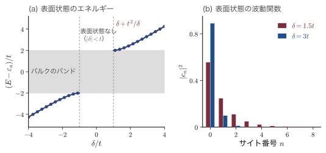
例題24.13 表面状態のエネルギーと広がり
飛び移り積分 $t=1.0\,\mathrm{eV}$，格子間隔 $a=0.30\,\mathrm{nm}$ の鎖で，端の原子の軌道のエネルギーが $\delta=+1.5\,\mathrm{eV}$ ずれているとする．(1) 表面状態はできるか．できるならそのエネルギーはバンドの上端から何 eV 離れているか．(2) 振幅が $1/\ee$ に減る長さ $\lambda$ を求めよ．(3) 電子が表面の原子 $n=0$ に見いだされる確率はいくらか．(4) $\delta=+0.8\,\mathrm{eV}$ ならどうなるか．
解答．(1) $\abs{\delta}=1.5\,\mathrm{eV}\gt t=1.0\,\mathrm{eV}$ なので表面状態はできる．式 \eqref{eq:24-tamm} より $E_s-\varepsilon_a=1.5+1.0^2/1.5=2.17\,\mathrm{eV}$．バンドの上端は $\varepsilon_a+2t=\varepsilon_a+2.00\,\mathrm{eV}$ なので，その $0.17\,\mathrm{eV}$ 上にある．
(2) 導出の (5) で求めた $\lambda=a/\ln\abs{\delta/t}$ に数値を入れて
$$ \lambda=\frac{0.30\,\mathrm{nm}}{\ln1.5}=\frac{0.30}{0.405}\,\mathrm{nm}=0.74\,\mathrm{nm}\quad(\text{原子 2.5 個分}) $$(3) $\abs{c_0}^2=1-t^2/\delta^2=1-1/2.25=0.56$．
(4) $\abs{\delta}=0.8\,\mathrm{eV}\lt t$ なので表面状態はない．端のずれはバンドの中の状態の形を少し変えるだけである．
∎ 表面状態は原子数個の深さにしか広がらない，まさに「表面の」状態である．$z=-t/\delta=-0.67$ と負なので，隣り合う原子で波動関数の符号が反転する反結合的な状態である．
24.4.4 ダングリングボンドと表面再構成
Si や Ge のような共有結合の結晶を切ると，表面の原子には相手を失った結合の手（ダングリングボンド，dangling bond）が残る．ダングリングボンドの $sp^3$ 混成軌道のエネルギーはおおよそギャップの中央付近にあり，1本あたり1個の電子を持つ．したがって切ったままの表面には，表面原子と同じ数，すなわち Si(100) で $2/a^2=6.8\times10^{14}\,\mathrm{cm^{-2}}$，Si(111) で $4/(\sqrt3a^2)=7.8\times10^{14}\,\mathrm{cm^{-2}}$（$a=0.543\,\mathrm{nm}$）のギャップ内準位が生じる．
実際の表面では，原子が移動してダングリングボンドを減らし，エネルギーを下げる．これを表面再構成（surface reconstruction）という．
- Si(100) 2×1：表面の原子2個が近づいてダイマー（2量体）を作り，1原子あたり2本あったダングリングボンドが1本に減る．ダイマーは傾いて電荷が片側に移り，表面準位の帯にギャップが開く．
- Si(111) 7×7：周期が7倍に伸びた複雑な構造で，高柳邦夫が1985年に提案した DAS 模型（dimer–adatom–stacking fault）で解明された．単位胞あたりのダングリングボンドは，切ったままの49本から19本に減る．1983年に G. Binnig（ビーニッヒ）と H. Rohrer（ローラー）らが走査トンネル顕微鏡（STM，第23章23.5節）で7×7の原子像を初めて撮り，表面科学の新しい時代を開いた．
24.4.5 表面準位の密度と不動態化
表面準位の密度は，面密度 $N_{ss}$（$\mathrm{cm^{-2}}$）またはエネルギーあたりの密度 $D_{ss}$（$\mathrm{cm^{-2}\,eV^{-1}}$）で表す．超高真空中の清浄な表面では $N_{ss}\sim10^{15}\,\mathrm{cm^{-2}}$ にもなるが，表面を適当な物質で覆ってダングリングボンドに相手を与えると激減する．これを不動態化（passivation）という．Si では，熱酸化した $\mathrm{SiO_2}$ との界面で，残ったダングリングボンドを水素で終端する（水素を含むガス中で $400\,^\circ\mathrm{C}$ 程度で熱処理する）と，界面準位の密度は $10^{10}$〜$10^{11}\,\mathrm{cm^{-2}\,eV^{-1}}$ まで下がる．表面準位を $10^{5}$ 分の1にできる自然の酸化膜を持つことが，Si が MOS 集積回路（24.6節）の材料として独占的な地位を占めた最大の理由である．GaAs の酸化膜は界面準位が多く（$10^{13}\,\mathrm{cm^{-2}\,eV^{-1}}$ 程度以上），MOS 構造が作りにくいので，GaAs のトランジスタは Schottky ゲートの MESFET やヘテロ接合の HEMT（24.3.4項）として発展した．
24.4.6 表面のバンド曲がりと表面空乏層
n 型半導体の表面に，電子を受け取ると負に帯電する表面準位（アクセプター型）があるとしよう．内部の伝導帯の電子は，エネルギーの低い表面準位へ落ちて捕まる．表面は負に帯電し，その電荷を打ち消すように表面近くの電子が追い払われてイオン化ドナーの表面空乏層ができる．その電場によってバンドは表面に向かって上へ曲がる（図24.16(b)）．これは片側が表面準位の面電荷に置き換わった片側階段接合（24.2.4項）にほかならない．
導出：表面電荷と表面のバンドの曲がり
表面準位の電荷（単位面積あたり）を $Q_{ss}\lt0$，空乏層の幅を $W$ とする．表面全体として中性なので
$$ Q_{ss}+eN_DW=0\quad\Longrightarrow\quad W=\frac{\abs{Q_{ss}}}{eN_D} $$空乏層の中では Poisson 方程式は p-n 接合の n 側と同じで（24.2.3項），表面と内部の電位差（バンドの曲がり $eV_s$ の $V_s$）は
∎ 表面電荷が2倍になるとバンドの曲がりは4倍になる．
24.4.7 Fermi 準位のピンニング
式 \eqref{eq:24-Vs} に数値を入れてみると重要なことがわかる．$N_D=10^{16}\,\mathrm{cm^{-3}}$ の Si で，表面に $\abs{Q_{ss}}/e=10^{11}\,\mathrm{cm^{-2}}$ の電子が捕まると $W=0.10\,\mu\mathrm{m}$，$V_s=0.077\,\mathrm{V}$ だが，$10^{12}\,\mathrm{cm^{-2}}$ なら $W=1.0\,\mu\mathrm{m}$，$V_s=7.7\,\mathrm{V}$ となり，バンドギャップ $1.1\,\mathrm{eV}$ をはるかに超えてしまう．もちろんそうはならない．バンドが曲がって表面準位が $E_F$ より上に出ると，それ以上は電子が捕まらなくなるからである．
表面準位がエネルギー $D_{ss}$（一定）の密度で分布し，ある準位 $E_{\mathrm{CN}}$ より下が電子で詰まっているとき表面が中性になるとする（$E_{\mathrm{CN}}$ を電荷中性準位という）．表面の Fermi 準位 $E_F$ が $E_{\mathrm{CN}}$ より $\Delta E$ だけ上にあれば，表面の電荷は $Q_{ss}=-eD_{ss}\Delta E$ である．これが空乏層の電荷とつり合うので
$$ \Delta E=\frac{\abs{Q_{ss}}}{eD_{ss}}=\frac{\sqrt{2e\epsilon_s\epsilon_0N_DV_s}}{eD_{ss}} $$空乏層を $0.5\,\mathrm{V}$ 曲げるのに必要な電荷は $\abs{Q_{ss}}/e\simeq2.5\times10^{11}\,\mathrm{cm^{-2}}$ にすぎない．$D_{ss}=10^{13}\,\mathrm{cm^{-2}\,eV^{-1}}$ なら $\Delta E=25\,\mathrm{meV}$，$10^{14}$ なら $2.5\,\mathrm{meV}$ である．つまり 表面準位の密度が $10^{13}\,\mathrm{cm^{-2}\,eV^{-1}}$ を超えると，表面の Fermi 準位は電荷中性準位 $E_{\mathrm{CN}}$ にほとんど釘付けになり，ドーピングや外部の電圧，接触させる金属によらず動かなくなる．これを Fermi 準位のピンニング（Fermi level pinning）という．Bardeen が説明した「金属によらない障壁の高さ」の正体である（24.5.3項）．
例題24.14 表面空乏層とピンニングの強さ
$N_D=10^{16}\,\mathrm{cm^{-3}}$ の n 型 Si の表面のバンドが $eV_s=0.50\,\mathrm{eV}$ だけ上に曲がっている．(1) 空乏層の幅 $W$ と，表面準位に捕まっている電子の面密度 $\abs{Q_{ss}}/e$ を求めよ．(2) 表面準位の密度が $D_{ss}=10^{12}$ と $10^{14}\,\mathrm{cm^{-2}\,eV^{-1}}$ のそれぞれで，表面の $E_F$ は電荷中性準位から何 meV 離れているか．
解答．(1) 式 \eqref{eq:24-Vs} を $W$ について解いて，$\epsilon=1.036\times10^{-10}\,\mathrm{F/m}$，$N_D=10^{22}\,\mathrm{m^{-3}}$ で
$$ W=\sqrt{\frac{2\epsilon V_s}{eN_D}}=\sqrt{\frac{2\times1.036\times10^{-10}\times0.50}{1.602\times10^{-19}\times10^{22}}}\ \mathrm{m}=\sqrt{6.47\times10^{-14}}\ \mathrm{m}=0.25\,\mu\mathrm{m} $$ $$ \frac{\abs{Q_{ss}}}{e}=N_DW=(10^{16}\,\mathrm{cm^{-3}})(2.54\times10^{-5}\,\mathrm{cm})=2.5\times10^{11}\,\mathrm{cm^{-2}} $$(2) $\Delta E=(\abs{Q_{ss}}/e)/D_{ss}$ より，$D_{ss}=10^{12}$ では $2.5\times10^{11}/10^{12}\,\mathrm{eV}=0.25\,\mathrm{eV}$，$D_{ss}=10^{14}$ では $2.5\times10^{-3}\,\mathrm{eV}=2.5\,\mathrm{meV}$．
∎ 表面原子3000個に1個程度の電子（$2.5\times10^{11}/7\times10^{14}$）で，バンドは半分のギャップほども曲がる．表面準位が $10^{14}\,\mathrm{cm^{-2}\,eV^{-1}}$ あれば，$E_F$ は中性準位から熱エネルギーの10分の1しか動けない．
24.4.8 仕事関数・電子親和力・イオン化エネルギー
定義：真空準位，仕事関数，電子親和力，イオン化エネルギー
表面のすぐ外（鏡像力が無視できる程度に離れた所）で静止している電子のエネルギーを真空準位 $E_{vac}$ という（図24.16(a)）．このとき
- 仕事関数（work function）$e\phi_s=E_{vac}-E_F$：Fermi 準位の電子を真空へ取り出す最小のエネルギー（金属では $e\phi_m$ と書く）．
- 電子親和力（electron affinity）$e\chi=E_{vac}-E_c$：伝導帯の底の電子を取り出すエネルギー．
- イオン化エネルギー（ionization energy）$I=E_{vac}-E_v=e\chi+E_g$：価電子帯の頂上の電子を取り出すエネルギー．
本章では $\phi_s$，$\phi_m$，$\chi$ を電圧の単位（V）で表し，エネルギーには $e$ を掛ける．
半導体の仕事関数 $e\phi_s=e\chi+(E_c-E_F)$ はドーピングで変わるが，$e\chi$ と $I$ は（表面の状態が同じなら）物質に固有である．Si では $e\chi\simeq4.05\,\mathrm{eV}$，GaAs では $4.07\,\mathrm{eV}$ である．金属の仕事関数は Al が $4.28\,\mathrm{eV}$，Au が $5.1\,\mathrm{eV}$，Pt が $5.65\,\mathrm{eV}$ 程度である．光電効果（量子力学 第4章4.3）の仕事関数と同じ量である．表面のバンドが $eV_s$ だけ曲がると真空準位も一緒に曲がるので，表面で測る仕事関数は $eV_s$ だけ変わる．
24.4.9 表面の電子状態をどう測るか
- Kelvin（ケルビン）プローブ：試料と金属の参照電極を向かい合わせてコンデンサーを作り，電極を振動させる．2つの仕事関数が違うと，接触電位差のために振動に同期した交流電流が流れる．外部から電圧をかけてこの電流をゼロにすると，その電圧が仕事関数の差（接触電位差）を与える．原子間力顕微鏡の探針で行えば表面電位の分布が nm の分解能で得られる（Kelvin プローブ力顕微鏡）．
- 表面光起電力（surface photovoltage）：強い光でキャリアを大量に作ると，表面準位と空乏層の電荷が中和されてバンドの曲がりがほどける（平らになる）．そのときの表面電位の変化から $V_s$ がわかる．光の波長を変えて侵入深さを変えれば，少数キャリアの拡散長も測れる．
- 光電子分光：紫外線（UPS）や X 線（XPS）で電子を叩き出し，その運動エネルギーを測る（量子力学 第4章4.5）．スペクトルの低エネルギー側の切れ目（二次電子の端）は真空準位を，高エネルギー側の端は Fermi 準位や価電子帯の頂上を与えるので，仕事関数・イオン化エネルギー・表面での $E_F-E_v$ が直接わかる．内殻準位のずれからはバンドの曲がりがわかる．角度分解光電子分光（第18章18.8節）を使えば表面バンドの分散も測れる．
- 走査トンネル分光：STM の探針と試料の間のトンネル電流の電圧微分 $\dd I/\dd V$ は表面の局所的な状態密度に比例する（第23章23.5節．状態密度が現れる理由は 付録A A.9.3）．
例題24.15 紫外光電子分光で表面のエネルギー準位を決める
He I 線（$h\nu=21.22\,\mathrm{eV}$）で n 型 Si（$N_D=10^{16}\,\mathrm{cm^{-3}}$）の清浄表面を測定した．(i) スペクトルの全幅（二次電子の切れ目から価電子帯の頂上の端まで）は $16.00\,\mathrm{eV}$，(ii) 価電子帯の頂上は Fermi 準位（同じ装置で測った金の Fermi 端）より $0.80\,\mathrm{eV}$ 下にあった．イオン化エネルギー $I$，仕事関数 $e\phi_s$，電子親和力 $e\chi$，表面のバンドの曲がり $eV_s$ を求めよ．$E_g=1.11\,\mathrm{eV}$，内部の $E_c-E_F=0.205\,\mathrm{eV}$ とする．
解答．価電子帯の頂上から出た電子は運動エネルギー $h\nu-I$ で飛び出し，二次電子の切れ目は運動エネルギーゼロ（真空準位）に対応する．したがってスペクトルの全幅は $h\nu-I$ に等しく
$$ I=h\nu-16.00\,\mathrm{eV}=21.22-16.00\,\mathrm{eV}=5.22\,\mathrm{eV} $$表面での $E_F-E_v=0.80\,\mathrm{eV}$ なので
$$ \begin{aligned} e\phi_s&=E_{vac}-E_F=I-(E_F-E_v)=5.22\,\mathrm{eV}-0.80\,\mathrm{eV}=4.42\,\mathrm{eV},\\ e\chi&=I-E_g=5.22\,\mathrm{eV}-1.11\,\mathrm{eV}=4.11\,\mathrm{eV} \end{aligned} $$内部では $E_F-E_v=E_g-(E_c-E_F)$ で，その値は $1.11\,\mathrm{eV}-0.205\,\mathrm{eV}=0.905\,\mathrm{eV}$ だから，表面では $E_v$ が $E_F$ に $0.905-0.80=0.105\,\mathrm{eV}$ だけ近づいている．すなわちバンドは表面で $eV_s=0.11\,\mathrm{eV}$ だけ上に曲がっている．
∎ 1本のスペクトルから，表面のエネルギー準位の配置がすべて決まる．バンドが上に曲がっていることは，表面準位が電子を捕まえて表面が負に帯電していることを意味する．
24.5 金属・半導体界面（Schottky 接触とオーム接触）
24.5.1 整流する接触と整流しない接触
半導体デバイスは，必ずどこかで金属の配線につながなければならない．金属と半導体の接触には2種類がある．一つは電流を一方向にしか流さない整流性接触（rectifying contact）で，F. Braun（ブラウン）が1874年に金属硫化物で発見した整流作用がこれである．1938年に W. Schottky（ショットキー）と N. F. Mott（モット）が，半導体側にできる電位の障壁でこの整流作用を説明した．この障壁を Schottky 障壁（Schottky barrier），これを使ったダイオードを Schottky ダイオードという．もう一つは，両方向に抵抗なく電流を流すオーム接触（ohmic contact）で，あらゆるデバイスの電極に必要である．同じ金属と半導体でも，作り方しだいでどちらにもなる．本節では，障壁の高さがどう決まるか，電流がどう流れるか，オーム接触をどう作るかを順に見る．
24.5.2 Schottky–Mott 則
金属の仕事関数 $e\phi_m$ が n 型半導体の仕事関数 $e\phi_s$ より大きいとする（図24.17(a)）．接触させると，Fermi 準位の高い半導体から金属へ電子が移り，半導体側には空乏層ができ，金属の表面には負の電荷がたまる．Fermi 準位がそろったところで熱平衡になり，半導体のバンドは界面に向かって上へ曲がる（図24.17(b)）．これは片側階段接合（24.2.4項）の p 側を金属に置き換えたものである．
導出：Schottky–Mott 則と拡散電位
界面に余分な電荷や双極子がなく，真空準位が界面で連続だとする．界面で金属の Fermi 準位から見た半導体の伝導帯の底の高さが障壁 $e\phi_B$ である．界面の真空準位から下ると，金属側では $e\phi_m$ で $E_F$ に，半導体側では $e\chi$ で $E_c$ に達するので
$$ e\phi_B=E_c(\text{界面})-E_F=e\phi_m-e\chi $$p 型半導体では正孔にとっての障壁（$E_F$ から界面の $E_v$ まで）が問題で，$e\phi_{Bp}=E_g-(e\phi_m-e\chi)$ である．半導体の内部から見た障壁（拡散電位）は，接触前の仕事関数の差で
∎ これを Schottky–Mott 則という．$e\phi_{B}+e\phi_{Bp}=E_g$ であり，同じ金属でも n 型には障壁が高く p 型には低い（あるいはその逆）．
例題24.16 Schottky–Mott 則と実測の比較
Si の電子親和力を $e\chi=4.05\,\mathrm{eV}$ とする．(1) Au（$e\phi_m=5.1\,\mathrm{eV}$）と Al（$4.28\,\mathrm{eV}$）を n 型 Si に接触させたときの障壁の高さを Schottky–Mott 則で求めよ．(2) 実測の障壁はそれぞれ $0.80\,\mathrm{eV}$，$0.72\,\mathrm{eV}$ 程度である．$S_p\equiv\dd\phi_B/\dd\phi_m$ を見積もり，何がわかるか述べよ．
解答．(1) 式 \eqref{eq:24-schottkymott} より，Au では $e\phi_B=5.1-4.05=1.05\,\mathrm{eV}$，Al では $4.28-4.05=0.23\,\mathrm{eV}$．
(2) Schottky–Mott 則では金属を変えると障壁が $1.05-0.23=0.82\,\mathrm{eV}$ 変わるはずだが，実測では $0.80-0.72=0.08\,\mathrm{eV}$ しか変わらない．仕事関数の差は $0.82\,\mathrm{eV}$ なので
$$ S_p=\frac{\Delta\phi_B}{\Delta\phi_m}=\frac{0.08\,\mathrm{V}}{0.82\,\mathrm{V}}\simeq0.1 $$∎ Au と Al の2点だけから見ると，金属の仕事関数を $0.8\,\mathrm{eV}$ 変えても障壁は10分の1しか動かない．これは2点だけからの粗い見積もりで，多くの金属のデータを使うと Si の $S_p$ は0.3程度になる（24.5.3項）．いずれにしても障壁の高さは主に半導体の側で決まっており，Schottky–Mott 則（$S_p=1$）は Si にはほとんど当てはまらない．Si の n 型の障壁は，多くの金属で $0.5$〜$0.9\,\mathrm{eV}$ の範囲に集まる．
24.5.3 Bardeen 極限とピンニング因子
Bardeen の答えは24.4.7項の Fermi 準位のピンニングである．界面にギャップ内準位が十分多ければ，界面の Fermi 準位は電荷中性準位に固定され，障壁の高さは金属によらなくなる（Bardeen 極限）．実際の界面はその中間にあり，その度合いをピンニング因子 $S_p\equiv\dd\phi_B/\dd\phi_m$ で表す．金属の仕事関数を変えたときに障壁の高さがどれだけ変わるかを表す無次元の量で，24.1.7項の表面再結合速度 $S_r$ とは別のものである．$S_p=1$ が Schottky–Mott 極限，$S_p=0$ が Bardeen 極限である．
導出：界面準位があるときの障壁の高さ
金属と半導体のあいだに原子の数層分の薄い界面層（厚さ $d_i$，比誘電率 $\epsilon_i$）があり，半導体側の界面に密度 $D_{ss}$（$\mathrm{m^{-2}\,J^{-1}}$，エネルギーによらない）の界面準位があるとする．界面準位の電荷中性準位を価電子帯の頂上から測って $e\phi_0$ とする．
(1) 界面層の電圧．真空準位は界面層をはさんで連続でなくてよく，界面層にかかる電圧を $\Delta$ とすると，図24.17 の真空準位の関係は $e\phi_m-e\Delta=e\chi+e\phi_B$ に修正される．$\Delta$ は界面層をはさむ電荷が作るので，金属表面の電荷を $Q_M$ とすると，平行平板コンデンサーと同じく $\Delta=-Q_Md_i/(\epsilon_i\epsilon_0)$ である．
(2) 電荷の中性．$Q_M+Q_{ss}+Q_{sc}=0$．空乏層の電荷 $Q_{sc}$ は界面準位の電荷 $Q_{ss}$ に比べて小さいとして無視すると $Q_M\simeq-Q_{ss}$．界面での $E_F$ は $E_v$ から $E_g-e\phi_B$ の高さにあるので，それが中性準位 $e\phi_0$ より下なら，その差の分の準位が空になって正に帯電する：
$$ Q_{ss}=eD_{ss}\left[e\phi_0-(E_g-e\phi_B)\right] $$(3) 連立．(1)(2) より $e\phi_m-e\chi-e\phi_B=e\Delta$ で，$\Delta=Q_{ss}d_i/(\epsilon_i\epsilon_0)$ である．$\alpha\equiv e^2D_{ss}d_i/(\epsilon_i\epsilon_0)$（界面準位の効きの強さを表す無次元の量）とおくと
$$ e\phi_m-e\chi-e\phi_B=\alpha\left[e\phi_0-E_g+e\phi_B\right] \quad\Longrightarrow\quad (1+\alpha)\,e\phi_B=(e\phi_m-e\chi)+\alpha\,(E_g-e\phi_0) $$∎ $D_{ss}\to0$ で $S_p\to1$（Schottky–Mott），$D_{ss}\to\infty$ で $S_p\to0$，$e\phi_B\to E_g-e\phi_0$（Bardeen 極限：障壁はギャップと中性準位だけで決まる）．
数値を入れると，$d_i=0.5\,\mathrm{nm}$，$\epsilon_i=1$ で $D_{ss}=10^{13}\,\mathrm{cm^{-2}\,eV^{-1}}$ なら $\alpha=0.90$，$S_p=0.53$，$D_{ss}=10^{14}\,\mathrm{cm^{-2}\,eV^{-1}}$ なら $\alpha=9.0$，$S_p=0.10$ である．
実測の $S_p$．A. M. Cowley（カウリー）と S. M. Sze（ジー）は1965年に，多くの金属の障壁の高さを仕事関数に対して直線で当てはめ，Si で $S_p\simeq0.27$，GaAs で $S_p\simeq0.07$ を得た（n 型 Si の障壁は Ti の約 $0.5\,\mathrm{eV}$ から Pt の約 $0.9\,\mathrm{eV}$ まで変わる）．例題24.16 の $S_p\simeq0.1$ は Au と Al の2点だけから求めた粗い値である．$S_p\simeq0.27$ は，上と同じ界面層を仮定すると $D_{ss}\simeq3\times10^{13}\,\mathrm{cm^{-2}\,eV^{-1}}$ の界面準位にあたる．S. Kurtin（カーティン），T. C. McGill（マッギル），C. A. Mead（ミード）（1969年）は，多くの半導体と絶縁体について，金属の仕事関数ではなく電気陰性度 $X_M$ に対する傾き $\dd\phi_B/\dd X_M$（界面の指数）を調べ，Si や GaAs のような共有結合性の半導体では小さく（0.1程度），ZnS や $\mathrm{SiO_2}$ のようなイオン性の強い物質では大きい（1程度）ことを見いだした．電気陰性度と仕事関数は目盛りが違う（電気陰性度1の違いが仕事関数のおよそ2 eV の違いにあたる）ので，これらの数値を本章の $S_p=\dd\phi_B/\dd\phi_m$ とそのまま比べてはいけない．
24.5.4 金属誘起ギャップ状態
清浄な表面の準位（24.4節）は，金属を載せると金属との結合に使われて消えてしまう．それでも障壁がピンニングされるのはなぜか．V. Heine（ハイネ）は1965年に次のように考えた．金属の伝導電子の波動関数は界面で急に消えるのではなく，半導体の中へしみ出す．ギャップの中のエネルギーでは，半導体の中の波は複素数の波数を持つ減衰波（24.4.2項）として数原子層だけ入り込む．これらの金属誘起ギャップ状態（metal-induced gap states，MIGS）は，半導体の価電子帯と伝導帯の状態を混ぜ合わせたものであり，価電子帯に近いエネルギーのものは価電子帯的（詰まると中性），伝導帯に近いものは伝導帯的（空で中性）な性格を持つ．性格が入れ替わるエネルギーが電荷中性準位で，界面の $E_F$ はその近くに引き寄せられる．J. Tersoff（ターソフ）は1984年に，半導体のバンド構造からこの中性準位（分岐点）を計算し，Si や GaAs などの障壁の高さの傾向をよく再現した．ピンニングは界面の汚れや欠陥による偶然ではなく，金属と半導体を接触させること自体に内在するのである．ただし実際の障壁は，界面の原子配列・化学反応（シリサイドの形成など）によっても $0.1\,\mathrm{eV}$ 程度変わる．
24.5.5 Schottky 空乏層と容量
半導体側の空乏層は片側階段接合と同じなので，24.2.3〜24.2.5項の結果がそのまま使える．
$$ W=\sqrt{\frac{2\epsilon_s\epsilon_0}{eN_D}\left(V_{bi}-V-\frac{k_BT}{e}\right)},\qquad \frac{1}{C^2}=\frac{2}{e\epsilon_s\epsilon_0A^2N_D}\left(V_{bi}-V-\frac{k_BT}{e}\right) $$（$-k_BT/e$ は空乏層の端の多数キャリアのすそによる小さな補正．）$1/C^2$–$V$ プロットの横軸との交点 $V_i=V_{bi}-k_BT/e$ から，$e\phi_B=eV_i+(E_c-E_F)+k_BT$ として障壁の高さが求まる．たとえば Au/n-Si（$N_D=10^{16}\,\mathrm{cm^{-3}}$）では，$E_c-E_F=k_BT\ln(N_c/N_D)$ で，$N_c=2.8\times10^{19}\,\mathrm{cm^{-3}}$ として $0.02585\ln(2.8\times10^{3})\,\mathrm{eV}=0.21\,\mathrm{eV}$ だから $V_{bi}=0.80-0.21=0.60\,\mathrm{V}$，$V=0$ での空乏層の幅は $W=0.27\,\mu\mathrm{m}$ である．
24.5.6 熱電子放出理論
Si や GaAs のように移動度の高い半導体では，空乏層を通るあいだの散乱は少なく，電流を決めるのは「障壁の頂上を越えられるだけのエネルギーを持つ電子が，毎秒どれだけ界面に飛び込むか」である．これを熱電子放出（thermionic emission）という．H. A. Bethe（ベーテ）は1942年にこの考えで Schottky ダイオードの電流を計算した．
導出：熱電子放出の電流 $J=A^*T^2\ee^{-e\phi_B/k_BT}(\ee^{eV/k_BT}-1)$
(1) 速度空間の電子数．半導体の中の電子の状態は，単位体積・波数空間の体積 $\dd^3k$ あたり $2\,\dd^3k/(2\pi)^3$ 個（因子2はスピン）ある．$\kk=m^*\vv/\hbar$ なので $\dd^3k=(m^*/\hbar)^3\dd^3v$，$\hbar=h/2\pi$ を使うと
$$ \frac{2}{(2\pi)^3}\left(\frac{m^*}{\hbar}\right)^3\dd^3v=2\left(\frac{m^*}{h}\right)^3\dd^3v $$非縮退なので占有確率は Boltzmann 因子 $\exp[-(E-E_F)/k_BT]$，$E=E_c+\tfrac12m^*v^2$ である．速度が $\vv$ のまわりの $\dd^3v$ にある電子の密度は
$$ \dd n=2\left(\frac{m^*}{h}\right)^3\exp\!\left(-\frac{E_c-E_F}{k_BT}\right)\exp\!\left(-\frac{m^*(v_x^2+v_y^2+v_z^2)}{2k_BT}\right)\dd v_x\,\dd v_y\,\dd v_z $$(2) 障壁を越える条件．界面を $x=0$ とし，電子は $-x$ 向きに金属へ向かうとして，その速さを $v_x\gt0$ と書く．空乏層の端（内部）から界面までの障壁の高さは $e(V_{bi}-V)$ なので，越えるには $\tfrac12m^*v_x^2\ge e(V_{bi}-V)$，すなわち $v_x\ge v_0\equiv\sqrt{2e(V_{bi}-V)/m^*}$ が必要である．$v_y,v_z$ は何でもよい．
(3) 電流．単位時間に単位面積を横切る電子の数は $v_x\dd n$ なので，半導体から金属への電流密度は
$$ J_{s\to m}=e\cdot2\left(\frac{m^*}{h}\right)^3\ee^{-(E_c-E_F)/k_BT}\int_{v_0}^{\infty}v_x\ee^{-m^*v_x^2/2k_BT}\dd v_x\left[\int_{-\infty}^{\infty}\ee^{-m^*v^2/2k_BT}\dd v\right]^2 $$Gauss 積分（付録A A.4）$\int_{-\infty}^{\infty}\ee^{-av^2}\dd v=\sqrt{\pi/a}$ と $\int_{v_0}^{\infty}v\ee^{-av^2}\dd v=\ee^{-av_0^2}/(2a)$ を $a=m^*/(2k_BT)$ で使うと，角括弧の2乗は $2\pi k_BT/m^*$，$v_x$ の積分は $(k_BT/m^*)\ee^{-e(V_{bi}-V)/k_BT}$ になる．まとめると
$$ \begin{aligned} J_{s\to m}&=e\cdot2\left(\frac{m^*}{h}\right)^3\cdot\frac{2\pi k_BT}{m^*}\cdot\frac{k_BT}{m^*}\,\ee^{-[(E_c-E_F)+eV_{bi}]/k_BT}\,\ee^{eV/k_BT}\\ &=\frac{4\pi em^*k_B^2}{h^3}\,T^2\,\ee^{-e\phi_B/k_BT}\,\ee^{eV/k_BT} \end{aligned} $$（式 \eqref{eq:24-schottkymott} の $eV_{bi}+(E_c-E_F)=e\phi_B$ を使った．）
(4) 逆向きの流れ．金属から半導体へ越える電子が見る障壁は $e\phi_B$ のままで電圧によらないので，その電流は電圧によらない定数である．$V=0$ では正味の電流がゼロなので，その定数は $J_{s\to m}(V=0)$ に等しい．差し引いて
∎ $A^*$ を（有効）Richardson 定数という．$m^*=m$ のときの値は $4\pi emk_B^2/h^3=1.20\times10^{6}\,\mathrm{A\,m^{-2}\,K^{-2}}$，すなわち $120\,\mathrm{A\,cm^{-2}\,K^{-2}}$ で，金属から真空への熱電子放出（Richardson–Dushman（ダッシュマン）の式）と同じである．
電流–電圧特性は p-n 接合と同じ形だが，飽和電流 $J_s=A^*T^2\ee^{-e\phi_B/k_BT}$ の中身がまったく違う．$J_s$ を $T^2$ で割って対数をとり $1/T$ に対してプロットすると（Richardson プロット），傾き $-e\phi_B/k_B$ から障壁の高さが求まる．なお，移動度が低く空乏層の中で何度も散乱される半導体では，電流は空乏層の中のドリフト拡散で律速され（Schottky の拡散理論），前因子が電場に依存する形になる．両者をつないだ理論（熱電子放出–拡散理論）もあるが，Si や GaAs では熱電子放出理論がよく合う．
例題24.17 Si の Richardson 定数と Schottky ダイオードの順方向電圧
(1) n 型 Si の伝導帯は6つの谷からなり（第17章17.3節），$\langle100\rangle$ 方向に電流を流す場合の実効的な有効質量の和は，2つの谷で $m_t$，4つの谷で $\sqrt{m_lm_t}$ である（電流に垂直な面内の質量の幾何平均．導出の (1)〜(3) を楕円体の谷でやり直すと，状態の数から $m_xm_ym_z$，電流に垂直な2方向の速度の積分から $2\pi k_BT/\sqrt{m_ym_z}$，電流の向きの積分から $k_BT/m_x$ が出て，前因子は $\sqrt{m_ym_z}$ に比例する）．$m_l=0.92m$，$m_t=0.19m$ として $A^*$ を求めよ．(2) Au/n-Si（$e\phi_B=0.80\,\mathrm{eV}$）の300 K の飽和電流密度 $J_s$ を求め，例題24.7 の p-n 接合と比べよ．(3) 面積 $1\,\mathrm{mm^2}$ で $1\,\mathrm{mA}$ 流すのに必要な順方向電圧を求めよ．
解答．(1) 2つの谷と4つの谷の寄与を足して
$$ \begin{aligned} \frac{m^*}{m}&=2\times0.19+4\sqrt{0.92\times0.19}=0.38+4\times0.418=2.05,\\ A^*&=2.05\times120\,\mathrm{A\,cm^{-2}\,K^{-2}}=2.5\times10^{2}\,\mathrm{A\,cm^{-2}\,K^{-2}} \end{aligned} $$(2) $e\phi_B/k_BT=0.80/0.02585=30.95$，$\ee^{-30.95}=3.6\times10^{-14}$ なので
$$ J_s=(247\,\mathrm{A\,cm^{-2}\,K^{-2}})(300\,\mathrm{K})^2(3.6\times10^{-14})=8.1\times10^{-7}\,\mathrm{A/cm^2} $$p-n 接合の $3.1\times10^{-12}\,\mathrm{A/cm^2}$ の約 $2.6\times10^{5}$ 倍である．
(3) $I_s=J_sA=8.1\times10^{-9}\,\mathrm{A}$ なので
$$ V=\frac{k_BT}{e}\ln\frac{I}{I_s}=0.02585\times\ln(1.24\times10^{5})\,\mathrm{V}=0.02585\times11.7\,\mathrm{V}=0.30\,\mathrm{V} $$∎ 同じ電流を流すのに，Schottky ダイオードは p-n ダイオード（$0.63\,\mathrm{V}$）の半分以下の電圧で済む．p-n 接合の飽和電流は $n_i^2\propto\ee^{-E_g/k_BT}$ に比例し，実質的に高さ $E_g=1.1\,\mathrm{eV}$ の障壁を越える電流であるのに対し，Schottky ダイオードの障壁は $e\phi_B=0.8\,\mathrm{eV}$ と低いからである．その代わり逆方向の漏れ電流は大きい．
24.5.7 鏡像力による障壁の低下
金属の近くにある電子は，金属の表面に誘起された電荷に引き寄せられる．導体の表面からの距離 $x$ にある電荷 $-e$ に対する誘起電荷の作用は，表面の反対側の距離 $x$ に置いた「鏡像」の電荷 $+e$ の作用と同じである（静電気学の鏡像法）．この鏡像力（image force）が，障壁の頂上をわずかに下げる．
導出：鏡像力による障壁の低下 $\Delta\phi=\sqrt{e\mathcal{E}/(4\pi\epsilon_s\epsilon_0)}$
(1) 鏡像力のポテンシャル．距離 $2x$ 離れた電荷 $-e$ と $+e$ の間の引力は $F_{im}=e^2/[4\pi\epsilon(2x)^2]=e^2/(16\pi\epsilon x^2)$（$\epsilon\equiv\epsilon_s\epsilon_0$）である．無限遠から $x$ まで電子を運ぶあいだに鏡像力がする仕事から，ポテンシャルエネルギーは
$$ U_{im}(x)=-\int_x^{\infty}F_{im}\,\dd x'=-\frac{e^2}{16\pi\epsilon}\int_x^{\infty}\frac{\dd x'}{x'^2}=-\frac{e^2}{16\pi\epsilon x} $$（鏡像の電荷は電子と一緒に動くので，2つの点電荷のポテンシャル $-e^2/(4\pi\epsilon\cdot2x)$ の半分になることに注意．）
(2) 電場と合わせる．界面付近では空乏層の電場 $\mathcal{E}$（大きさ）をほぼ一定とみなせるので，鏡像力のないときの障壁の頂上（界面の伝導帯の底）を基準にした電子のエネルギーは（図24.18）
$$ U(x)=-e\mathcal{E}x-\frac{e^2}{16\pi\epsilon x} $$(3) 極大．$\dd U/\dd x=-e\mathcal{E}+e^2/(16\pi\epsilon x^2)=0$ より $x_m=\sqrt{e/(16\pi\epsilon\mathcal{E})}$．そこでの値は，$e\mathcal{E}x_m=e^2/(16\pi\epsilon x_m)$（極大の条件そのもの）を使って $U(x_m)=-2e\mathcal{E}x_m$．したがって障壁の低下は
∎ 金属から真空への電子放出で同じ効果を示したのも Schottky（1914年）なので，これを Schottky 効果という．
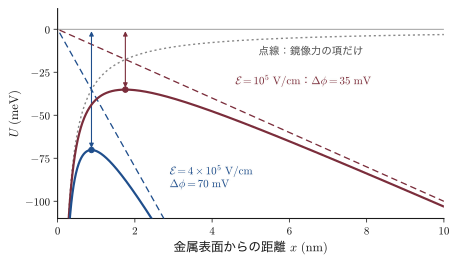
例題24.18 鏡像力による障壁の低下と逆方向電流
Au/n-Si（$N_D=10^{16}\,\mathrm{cm^{-3}}$，$V_{bi}=0.60\,\mathrm{V}$）について，(1) 電場 $\mathcal{E}=10^{5}\,\mathrm{V/cm}$ での $\Delta\phi$ と $x_m$，(2) $V=0$ と $V=-5\,\mathrm{V}$ の界面の最大電場と $\Delta\phi$，(3) $-5\,\mathrm{V}$ で逆方向の飽和電流が $V=0$ の値の何倍になるか，を求めよ．
解答．(1) $\epsilon=1.036\times10^{-10}\,\mathrm{F/m}$，$\mathcal{E}=10^{7}\,\mathrm{V/m}$ を式 \eqref{eq:24-image} に入れて
$$ \begin{aligned} \Delta\phi&=\sqrt{\frac{(1.602\times10^{-19})(10^{7})}{4\pi(1.036\times10^{-10})}}\ \mathrm{V}=\sqrt{1.23\times10^{-3}}\ \mathrm{V}=35\,\mathrm{mV},\\ x_m&=\sqrt{\frac{1.602\times10^{-19}}{16\pi(1.036\times10^{-10})(10^{7})}}\ \mathrm{m}=1.8\,\mathrm{nm} \end{aligned} $$(2) 片側階段接合の最大電場は $\mathcal{E}_{max}=\sqrt{2eN_D(V_{bi}-V)/\epsilon}$（式 \eqref{eq:24-W} の2式から $W$ を消去）．$V=0$ では
$$ \mathcal{E}_{max}=\sqrt{\frac{2\times(1.602\times10^{-19})\times10^{22}\times0.60}{1.036\times10^{-10}}}\ \mathrm{V/m}=4.3\times10^{6}\,\mathrm{V/m} $$で，$\Delta\phi=23\,\mathrm{mV}$．$V=-5\,\mathrm{V}$ では電場は $\sqrt{5.6/0.6}=3.05$ 倍の $1.3\times10^{7}\,\mathrm{V/m}$，$\Delta\phi\propto\sqrt{\mathcal{E}}$ より $\Delta\phi=23\times\sqrt{3.05}=40\,\mathrm{mV}$．
(3) 飽和電流は $\ee^{-e(\phi_B-\Delta\phi)/k_BT}$ に比例するので，比は $\ee^{(40-23)\,\mathrm{mV}/25.85\,\mathrm{mV}}=\ee^{0.66}=1.9$ 倍．
∎ 鏡像力のために Schottky ダイオードの逆方向電流は完全には飽和せず，$\Delta\phi\propto(V_{bi}-V)^{1/4}$ にしたがってゆっくり増える．絶縁体中の Coulomb 的なトラップから電子が電場で抜け出す Poole（プール）–Frenkel（フレンケル）効果（第28章28.4節）も同じ考え方で扱えるが，そこでは鏡像ではなく固定した正電荷が相手なので，障壁の低下はこの2倍になる．
24.5.8 p-n ダイオードとの違い
Schottky ダイオードの電流は，半導体の多数キャリア（n 型なら電子）が金属へ流れ込むことで運ばれる．金属に入った電子は，金属の大量の電子の中で $10^{-13}\,\mathrm{s}$ 程度ですぐにエネルギーを失って Fermi 準位に落ちる．半導体側に少数キャリアを注入するわけではないので，24.2.8項の拡散容量も24.2.10項の蓄積時間もほとんどない．その結果，
- 高速：スイッチングの速さは接合容量と直列抵抗の時定数だけで決まり，ps〜ns の応答が得られる．マイクロ波のミキサーや検波器，スイッチング電源の整流器に使われる．
- 順方向電圧が低い：例題24.17 のとおり，同じ電流を半分以下の電圧で流せるので，整流の損失が小さい．
- 逆方向の漏れ電流が大きい：$J_s$ が何桁も大きく，鏡像力で逆方向電流が増え，温度にも敏感である．
SiC の Schottky ダイオードは数百〜千数百 V の高耐圧と高速性を両立し，電気自動車や太陽光発電のインバーターに使われている．GaAs の MESFET や HEMT のゲート（24.3.4項）も Schottky 接触である．
24.5.9 オーム接触
電極として使うには，障壁がなく両方向に低い抵抗で電流が流れる接触が欲しい．その良し悪しは，単位面積あたりの抵抗である比接触抵抗（specific contact resistance）$\rho_c\equiv(\partial J/\partial V)^{-1}_{V=0}$（単位 $\Omega\,\mathrm{cm^2}$）で表す．
理屈の上では，n 型半導体に $\phi_m\lt\phi_s$ の金属をつければ障壁がなく（半導体側に電子の蓄積層ができ），オーム接触になる．しかし24.5.3項のピンニングのために，Si や GaAs では金属をどう選んでも数百 meV の障壁が残る．そこで実際には，半導体の表面を高濃度にドープして空乏層を数 nm まで薄くし，電子に障壁をトンネルさせる（図24.19）．トンネル確率は障壁の厚さに指数関数的に依存する（量子力学 第12章12.5，トンネル効果のシミュレーター で厚さを変えて確かめられる）．
導出：電界放出による比接触抵抗 $\rho_c\propto\exp\!\left[\dfrac{2\sqrt{\epsilon_s\epsilon_0m^*}}{\hbar}\dfrac{\phi_B}{\sqrt{N_D}}\right]$
(1) 障壁の形．縮退するほど高濃度の n 型半導体では $E_F\simeq E_c$（内部）とみなせる．空乏層の電位は式 \eqref{eq:24-phi} の n 側の形で，界面 $x=0$ から測って伝導帯の底は $E_c(x)-E_F=e\phi_B(1-x/W)^2$（$0\le x\le W$），幅は $W=\sqrt{2\epsilon\phi_B/(eN_D)}$ である（$\epsilon\equiv\epsilon_s\epsilon_0$，$V_{bi}\simeq\phi_B$）．
(2) WKB の指数．Fermi 準位の高さの電子が障壁を抜ける確率 $\mathcal{T}$（温度 $T$ と区別して筆記体で書く）は，WKB 近似（ポテンシャルがゆるやかに変わるときの波動関数の近似．量子力学 第12章12.5）で $\mathcal{T}\simeq\exp(-2\int_0^W\kappa\,\dd x)$ である．$\kappa(x)=\sqrt{2m^*[E_c(x)-E_F]}/\hbar$（$\kappa$ はカッパ．障壁の中で波動関数が減衰する速さ）は，(1) の障壁の形を入れると $\sqrt{2m^*e\phi_B}\,(1-x/W)/\hbar$ になる．$\int_0^W(1-x/W)\dd x=W/2$ なので
$$ 2\int_0^W\kappa\,\dd x=\frac{\sqrt{2m^*e\phi_B}}{\hbar}\,W=\frac{\sqrt{2m^*e\phi_B}}{\hbar}\sqrt{\frac{2\epsilon\phi_B}{eN_D}}=\frac{2\sqrt{\epsilon m^*}}{\hbar}\,\frac{\phi_B}{\sqrt{N_D}} $$(3) 接触抵抗．電流はトンネル確率に比例するので，比接触抵抗はその逆数に比例する：
∎ 障壁が高いほど，濃度が低いほど，接触抵抗は指数関数的に大きい．$E_{00}$ はトンネルの効きやすさを表すエネルギーで，$k_BT\gg E_{00}$ なら熱電子放出が，$k_BT\ll E_{00}$ なら電界放出（トンネル）が支配し，$k_BT\sim E_{00}$ では両者の混ざった熱電界放出になる．熱電子放出の領域では，式 \eqref{eq:24-te} を $V=0$ で微分して $\rho_c=(k_B/eA^*T)\ee^{e\phi_B/k_BT}$ となる．
例題24.19 接触抵抗はドーピングでどれだけ下がるか
n 型 Si（$\epsilon_s=11.7$，トンネルの有効質量 $m^*=0.26m$）と障壁 $e\phi_B=0.60\,\mathrm{eV}$ の金属の接触を考える．(1) $N_D=10^{17}$，$10^{19}$，$10^{20}\,\mathrm{cm^{-3}}$ のそれぞれで $E_{00}$ を求め，室温でどの機構が支配するか判定せよ．(2) $N_D=10^{20}\,\mathrm{cm^{-3}}$ での障壁の幅 $W$ を求めよ．(3) 電界放出の式 \eqref{eq:24-E00} で，$N_D$ を $10^{20}$ から $4\times10^{20}\,\mathrm{cm^{-3}}$ に上げると $\rho_c$ は何分の1になるか．
解答．(1) $E_{00}=(e\hbar/2)\sqrt{N_D/(\epsilon m^*)}$ を eV で表すと，$N_D=10^{19}\,\mathrm{cm^{-3}}=10^{25}\,\mathrm{m^{-3}}$ で
$$ E_{00}=\frac{\hbar}{2}\sqrt{\frac{N_D}{\epsilon m^*}}\ \mathrm{eV}=\frac{1.055\times10^{-34}}{2}\sqrt{\frac{10^{25}}{(1.036\times10^{-10})(0.26\times9.109\times10^{-31})}}\ \mathrm{eV}=0.034\,\mathrm{eV} $$（$E_{00}$ の式の $e$ は J を eV に直すと消える．）$E_{00}\propto\sqrt{N_D}$ なので，$10^{17}$ で $3.4\,\mathrm{meV}$，$10^{20}$ で $0.106\,\mathrm{eV}$．$k_BT=25.85\,\mathrm{meV}$ と比べて，$10^{17}$ は熱電子放出（$k_BT/E_{00}=7.7$），$10^{19}$ は熱電界放出（$0.77$），$10^{20}$ は電界放出（$0.24$）が支配する．
(2) 導出の (1) の $W$ に数値を入れて
$$ W=\sqrt{\frac{2\epsilon\phi_B}{eN_D}}=\sqrt{\frac{2\times1.036\times10^{-10}\times0.60}{1.602\times10^{-19}\times10^{26}}}\ \mathrm{m}=2.8\,\mathrm{nm} $$(3) 指数は $e\phi_B/E_{00}$ で，$10^{20}$ では $0.60/0.106=5.6$，$4\times10^{20}$ では $E_{00}$ が2倍の $0.213\,\mathrm{eV}$ なので $2.8$．比は $\ee^{5.6-2.8}=\ee^{2.8}=17$，すなわち約17分の1．
∎ 空乏層が原子10層ほどの厚さになると，電子は障壁を楽々とトンネルする．実用的なオーム接触（$\rho_c\sim10^{-7}\,\Omega\,\mathrm{cm^2}$ 程度以下）では，表面の濃度を $10^{20}\,\mathrm{cm^{-3}}$ 程度以上にする．
実際の作り方は材料ごとに工夫されている．
- Si：表面を $10^{20}\,\mathrm{cm^{-3}}$ 以上の $\mathrm{n^+}$（P，As）または $\mathrm{p^+}$（B）にしてから金属をつける．Al を $450\,^\circ\mathrm{C}$ 程度で熱処理する方法は古くから使われたが，Al が Si を溶かして接合を突き抜ける（スパイク）ので，現在の集積回路では Si と金属の化合物（$\mathrm{TiSi_2}$，$\mathrm{CoSi_2}$，NiSi などのシリサイド）を界面に作る．
- n 型 GaAs：Au–Ge–Ni の合金を載せて $400\,^\circ\mathrm{C}$ 台で熱処理する．Ge が GaAs に拡散してドナーとなり，界面に高濃度の $\mathrm{n^+}$ 層を作る．
- n 型 GaN：Ti/Al（その上に Ni/Au）を $800\,^\circ\mathrm{C}$ 前後で熱処理する．Ti が GaN の N と反応して TiN ができ，界面に残った窒素の空孔がドナーとして働いて高濃度の n 層になる．
24.6 金属・絶縁体・半導体（MIS）構造
24.6.1 MIS 構造とは
半導体の上に薄い絶縁体を載せ，その上に金属の電極（ゲート）をつけたものを MIS（metal–insulator–semiconductor）構造という．絶縁体が Si の熱酸化膜 $\mathrm{SiO_2}$ のとき MOS（metal–oxide–semiconductor）構造という．平行平板コンデンサーの片方の極板を半導体にしたものであり，ゲートに電圧をかけると，絶縁体を通して電流を流さずに半導体の表面の電荷，すなわちキャリアの数と種類を自由に変えられる．これが MOSFET の動作原理であり，現代の集積回路の数百億個のトランジスタはすべてこれでできている．以下，p 型 Si の上の MOS 構造を，次の理想 MIS 構造の仮定のもとで調べる．
- 金属と半導体の仕事関数が等しい（$\phi_{ms}\equiv\phi_m-\phi_s=0$）．したがって $V_G=0$ でバンドは平ら（フラットバンド）．
- 絶縁体の中と界面には電荷がない（界面準位もない）．
- 絶縁体は完全な絶縁体で，直流電流は流れない．
実際の MOS 構造でのずれ（仕事関数差，酸化膜中の電荷，界面準位）は24.6.6〜24.6.7項で扱う．
24.6.2 蓄積・空乏・反転
半導体の内部から表面に向かって測った電位の変化を $\psi(x)$（$\psi$ はプサイ．$x$ は表面からの深さ，内部で $\psi=0$．24.4節の波動関数 $\psi$ とは別）とし，表面の値を表面ポテンシャル（surface potential）$\psi_s$ という．バンドは $-e\psi$ だけ下にずれるので，$\psi\gt0$ ならバンドは表面で下に曲がる．Boltzmann 近似で電子と正孔の密度は
$$ n_p(x)=n_{p0}\,\ee^{e\psi/k_BT},\qquad p_p(x)=p_{p0}\,\ee^{-e\psi/k_BT} $$である（添字 $p$ は p 型であることを表す．$p_{p0}=N_A$，$n_{p0}=n_i^2/N_A$）．また，内部の $E_F$ と真性準位 $E_i$ の差を電位で表したものを $\psi_B\equiv(E_i-E_F)/e=(k_BT/e)\ln(N_A/n_i)$ とする．ゲート電圧 $V_G$ によって，表面は次の状態をとる（図24.20）．
- 蓄積（accumulation）$\psi_s\lt0$：$V_G\lt0$ でゲートが負に帯電し，正孔が表面に引き寄せられる．
- フラットバンド $\psi_s=0$．
- 空乏（depletion）$0\lt\psi_s\lt\psi_B$：$V_G\gt0$ で正孔が追い払われ，イオン化アクセプターの空乏層ができる．
- 弱反転 $\psi_B\lt\psi_s\lt2\psi_B$：表面で $E_i$ が $E_F$ より下に来て，電子の方が正孔より多くなる（ただし電子はまだ $N_A$ より少ない）．
- 強反転（strong inversion）$\psi_s\gt2\psi_B$：表面の電子密度が内部の正孔密度 $N_A$ を超える．p 型の表面に n 型の層，すなわち反転層（inversion layer）ができる．
24.6.3 Poisson 方程式の完全解
MOS 構造では空乏近似を使わずに Poisson 方程式を厳密に1回積分でき，表面の電荷 $Q_s$ を $\psi_s$ の関数として求めることができる．
導出：表面電荷 $Q_s(\psi_s)$ と $F$ 関数
(1) 電荷密度．半導体の中の電荷密度は $\rho=e(p_p-n_p+N_D^+-N_A^-)$．内部（$\psi=0$）では中性なので $N_D^+-N_A^-=n_{p0}-p_{p0}$．これを代入して
$$ \rho(\psi)=e\left[p_{p0}\left(\ee^{-\beta\psi}-1\right)-n_{p0}\left(\ee^{\beta\psi}-1\right)\right],\qquad\beta\equiv\frac{e}{k_BT}\quad(\beta\ \text{はベータ}) $$(2) 1回積分する．Poisson 方程式 $\dd^2\psi/\dd x^2=-\rho/\epsilon$（$\epsilon\equiv\epsilon_s\epsilon_0$）の両辺に $2\,\dd\psi/\dd x$ を掛ける．左辺は $\dfrac{\dd}{\dd x}\left[\left(\dfrac{\dd\psi}{\dd x}\right)^2\right]$ であり，右辺は $-\dfrac{2}{\epsilon}\rho(\psi)\dfrac{\dd\psi}{\dd x}$ である．内部（$\psi=0$，$\dd\psi/\dd x=0$）から位置 $x$ まで積分すると，右辺は $\psi$ についての積分に変わる：
$$ \left(\frac{\dd\psi}{\dd x}\right)^2=-\frac{2}{\epsilon}\int_0^{\psi}\rho(\psi')\,\dd\psi' $$(3) 積分を実行する．
$$ \int_0^\psi\left(\ee^{-\beta\psi'}-1\right)\dd\psi'=-\frac{\ee^{-\beta\psi}+\beta\psi-1}{\beta},\qquad \int_0^\psi\left(\ee^{\beta\psi'}-1\right)\dd\psi'=\frac{\ee^{\beta\psi}-\beta\psi-1}{\beta} $$だから
$$ \left(\frac{\dd\psi}{\dd x}\right)^2=\frac{2e}{\epsilon\beta}\left[p_{p0}\left(\ee^{-\beta\psi}+\beta\psi-1\right)+n_{p0}\left(\ee^{\beta\psi}-\beta\psi-1\right)\right] =\frac{2}{L_D^2}\left(\frac{k_BT}{e}\right)^2F^2 $$ここで外因性 Debye 長 $L_D\equiv\sqrt{\epsilon k_BT/(e^2p_{p0})}$（第21章21.3節）と
$$ F\!\left(\beta\psi,\frac{n_{p0}}{p_{p0}}\right)\equiv\sqrt{\left(\ee^{-\beta\psi}+\beta\psi-1\right)+\frac{n_{p0}}{p_{p0}}\left(\ee^{\beta\psi}-\beta\psi-1\right)} $$を導入した（$2e\,p_{p0}/(\epsilon\beta)=2(k_BT/e)^2/L_D^2$ を確かめよ）．
(4) Gauss の法則で表面電荷へ．表面の電場は $\mathcal{E}_s=-\dd\psi/\dd x|_{x=0}$ で，$\psi_s\gt0$ なら $\psi$ は内部へ向かって減るので $\mathcal{E}_s=+\sqrt2(k_BT/eL_D)F$．半導体の単位面積あたりの全電荷は，表面から内部までを囲む Gauss の箱で $Q_s=-\epsilon\mathcal{E}_s$ だから
∎ 蓄積（$\psi_s\lt0$）では $Q_s\gt0$（正孔），空乏・反転（$\psi_s\gt0$）では $Q_s\lt0$ である．
物理的意味：$F$ 関数の3つの極限
(i) 蓄積（$\psi_s\lt0$，$\abs{\beta\psi_s}\gg1$）：$F\simeq\ee^{-\beta\psi_s/2}$ で，正孔の電荷は表面の曲がりとともに指数関数的に増える．(ii) 空乏（$1\ll\beta\psi_s$，少数キャリアの項が小さい）：$F\simeq\sqrt{\beta\psi_s}$ で，$\abs{Q_s}=\sqrt{2\epsilon_s\epsilon_0eN_A\psi_s}$．これは空乏近似の式 \eqref{eq:24-Vs}（$N_D\to N_A$）そのものである．(iii) 強反転：$F\simeq\sqrt{n_{p0}/p_{p0}}\,\ee^{\beta\psi_s/2}$ で，電子の電荷は再び指数関数的に増える（図24.21(a)）．空乏と強反転の境目では，$\psi_s$ が $k_BT/e$ の数倍変わるだけで反転層の電荷が桁で変わるので，強反転に入ると $\psi_s$ は $2\psi_B$ よりわずかに大きい値でほとんど止まる．
24.6.4 強反転としきい電圧
強反転の始まりを「表面の電子密度が内部の正孔密度に等しくなるとき」と定める．$n_p(0)=n_{p0}\ee^{\beta\psi_s}=N_A$ に $n_{p0}=n_i^2/N_A$ を入れると $\ee^{\beta\psi_s}=N_A^2/n_i^2$，すなわち
$$ \psi_s(\text{強反転})=\frac{2k_BT}{e}\ln\frac{N_A}{n_i}=2\psi_B $$表面の $E_i$ が $E_F$ より $e\psi_B$ だけ下に来る，という対称な条件である．強反転に入ると $\psi_s$ はほとんど増えないので，空乏層の幅も最大値
で止まる．それ以上ゲートの電荷を増やすと，それは反転層の電子 $Q_n$ が引き受ける．
導出：しきい電圧 $V_T$ の式
ゲート電圧は，酸化膜にかかる電圧 $V_{ox}$ と半導体の表面ポテンシャル $\psi_s$ に分かれる（理想 MIS では $V_{FB}=0$）：
$$ V_G=V_{FB}+V_{ox}+\psi_s $$酸化膜（厚さ $t_{ox}$，比誘電率 $\epsilon_{ox}$）は平行平板コンデンサーで，単位面積あたりの容量は $C_{ox}=\epsilon_{ox}\epsilon_0/t_{ox}$．ゲートの電荷は $Q_G=-Q_s$（全体の中性）なので $V_{ox}=Q_G/C_{ox}=-Q_s/C_{ox}$．強反転が始まる瞬間（$\psi_s=2\psi_B$）には反転層の電子はまだ少なく，$Q_s$ は最大空乏層の電荷 $Q_d=-eN_AW_m$（式 \eqref{eq:24-Wm} を入れると $-\sqrt{2\epsilon_s\epsilon_0eN_A(2\psi_B)}$）で近似できる（図24.21(a) のとおり，$\psi_s=2\psi_B$ で式 \eqref{eq:24-Qs} の値は空乏近似の値に等しい）．これを代入して
∎ これをしきい電圧（threshold voltage）という．$V_G\gt V_T$ では，反転層の電荷はほぼ $Q_n\simeq-C_{ox}(V_G-V_T)$ で増える．
例題24.20 MOS 構造のしきい電圧
p 型 Si（$N_A=10^{17}\,\mathrm{cm^{-3}}$，$n_i=1.0\times10^{10}\,\mathrm{cm^{-3}}$，$\epsilon_s=11.7$）の上に厚さ $t_{ox}=10\,\mathrm{nm}$ の $\mathrm{SiO_2}$（$\epsilon_{ox}=3.9$）がある．(1) $C_{ox}$，(2) $\psi_B$，$W_m$，最大空乏層の電荷 $\abs{Q_d}$，(3) 理想 MIS 構造（$V_{FB}=0$）のしきい電圧を求めよ．(4) ゲートを高濃度 n 型の多結晶 Si（Fermi 準位が伝導帯の底にある）にし，界面に正の固定電荷 $Q_f/e=1\times10^{11}\,\mathrm{cm^{-2}}$ があるときのしきい電圧を求めよ（式 \eqref{eq:24-VFB} を使う．この式は24.6.6項で導くので，(4) は24.6.6項を先に読んでから解いてもよい．$E_g=1.11\,\mathrm{eV}$，$E_i$ はギャップの中央とする）．
解答．(1) 平行平板の容量の式から
$$ C_{ox}=\frac{\epsilon_{ox}\epsilon_0}{t_{ox}}=\frac{3.9\times8.854\times10^{-12}\,\mathrm{F/m}}{10\times10^{-9}\,\mathrm{m}}=3.45\times10^{-3}\,\mathrm{F/m^2}=0.345\,\mu\mathrm{F/cm^2} $$(2) $\psi_B=(k_BT/e)\ln(N_A/n_i)$ に数値を入れて
$$ \psi_B=0.02585\,\mathrm{V}\times\ln\frac{10^{17}}{10^{10}}=0.02585\times16.12\,\mathrm{V}=0.417\,\mathrm{V} $$なので $2\psi_B=0.833\,\mathrm{V}$．式 \eqref{eq:24-Wm} より
$$ \begin{aligned} W_m&=\sqrt{\frac{2(1.036\times10^{-10})(0.833)}{(1.602\times10^{-19})(10^{23})}}\ \mathrm{m}=1.04\times10^{-7}\,\mathrm{m}=0.104\,\mu\mathrm{m},\\ \abs{Q_d}&=eN_AW_m=1.66\times10^{-3}\,\mathrm{C/m^2} \end{aligned} $$（電子に換算して $1.04\times10^{12}\,\mathrm{cm^{-2}}$．）
(3) $\abs{Q_d}/C_{ox}=(1.66/3.45)\,\mathrm{V}=0.48\,\mathrm{V}$．式 \eqref{eq:24-VT} より $V_T=0+0.833+0.48=1.32\,\mathrm{V}$．
(4) ゲートの仕事関数は $e\chi$，p 型 Si の仕事関数は $e\chi+E_g/2+e\psi_B$ なので，仕事関数差と固定電荷によるずれは
$$ \begin{aligned} \phi_{ms}&=-\left(\frac{E_g}{2e}+\psi_B\right)=-(0.555+0.417)\,\mathrm{V}=-0.97\,\mathrm{V},\\ -\frac{Q_f}{C_{ox}}&=-\frac{(1.602\times10^{-19}\,\mathrm{C})(10^{15}\,\mathrm{m^{-2}})}{3.45\times10^{-3}\,\mathrm{F/m^2}}=-0.046\,\mathrm{V} \end{aligned} $$$V_{FB}=-0.97-0.05=-1.02\,\mathrm{V}$ なので $V_T=-1.02+1.32=0.30\,\mathrm{V}$．
∎ 実際の n チャネル MOSFET のしきい電圧が $0.3$〜$0.5\,\mathrm{V}$ 程度になるのは，このように仕事関数差が理想的なしきい電圧の大部分を打ち消すからである．しきい電圧は基板の濃度（イオン注入で表面だけ調整する）とゲートの材料で設計する．
24.6.5 C–V 特性
MOS 構造の微分容量 $C=\dd Q_G/\dd V_G$ を測ると，表面の状態を直接見ることができる．$\dd V_G=\dd V_{ox}+\dd\psi_s$ で，$\dd V_{ox}=\dd Q_G/C_{ox}$，$\dd\psi_s=\dd Q_G/C_s$（$C_s\equiv\abs{\dd Q_s/\dd\psi_s}$ は半導体の微分容量）だから，2つのコンデンサーの直列になる：
$$ \frac{1}{C}=\frac{1}{C_{ox}}+\frac{1}{C_s},\qquad C_s=\frac{\epsilon_s\epsilon_0}{\sqrt2L_D}\,\frac{\left|1-\ee^{-\beta\psi_s}+\dfrac{n_{p0}}{p_{p0}}\left(\ee^{\beta\psi_s}-1\right)\right|}{F(\beta\psi_s,n_{p0}/p_{p0})} $$$C_s$ の式は，式 \eqref{eq:24-Qs} を $\psi_s$ で微分して得られる．$u\equiv\beta\psi_s$ とおき，$F^2$ の両辺を $u$ で微分すると
$$ F^2=\left(\ee^{-u}+u-1\right)+\frac{n_{p0}}{p_{p0}}\left(\ee^{u}-u-1\right)\quad\Longrightarrow\quad 2F\frac{\dd F}{\dd u}=1-\ee^{-u}+\frac{n_{p0}}{p_{p0}}\left(\ee^{u}-1\right) $$である．$\dd u/\dd\psi_s=\beta=e/k_BT$ を使って
$$ C_s=\left|\frac{\dd Q_s}{\dd\psi_s}\right|=\frac{\sqrt2\,\epsilon_s\epsilon_0k_BT}{eL_D}\cdot\frac{e}{k_BT}\left|\frac{\dd F}{\dd u}\right|=\frac{\sqrt2\,\epsilon_s\epsilon_0}{L_D}\cdot\frac{\left|1-\ee^{-u}+\dfrac{n_{p0}}{p_{p0}}\left(\ee^{u}-1\right)\right|}{2F} $$となり，上の式に一致する．図24.21(b) に $C/C_{ox}$ を $V_G$ に対して示す．
- 蓄積：表面の正孔がゲートの電荷にすぐ応答するので $C_s\gg C_{ox}$，$C\simeq C_{ox}$．
- フラットバンド：$\psi_s\to0$ の極限で $C_s=\epsilon_s\epsilon_0/L_D$（Debye 長だけ離れた極板）．例題の値では $C_{FB}/C_{ox}=0.70$．
- 空乏：$C_s=\epsilon_s\epsilon_0/W$ で，$W$ が増えるので $C$ は減る．
- 反転・低周波（$\sim10\,\mathrm{Hz}$ 以下）：反転層の電子が熱生成（24.2.7項）で交流に追随できるので，電荷の出入りは表面で起こり，$C$ は再び $C_{ox}$ に戻る．
- 反転・高周波（$\sim1\,\mathrm{MHz}$）：少数キャリアの生成は遅く交流に追随できないので，電荷の出入りは最大空乏層の端で起こり，$C$ は最小値 $C_{min}=[1/C_{ox}+W_m/(\epsilon_s\epsilon_0)]^{-1}$ にとどまる．例題の値では $C_{min}/C_{ox}=0.22$．
- 深い空乏：電圧を速く掃引すると反転層の電子が生成される暇がなく，空乏層が $W_m$ を超えて広がり続け，$C$ はさらに下がる．CCD（24.6.11項）はこの状態を使う．
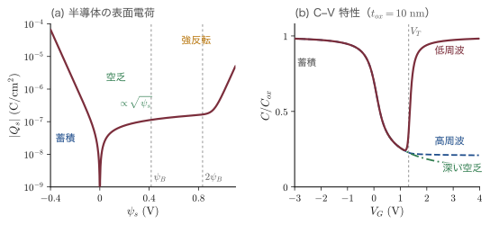
24.6.6 フラットバンド電圧 — 仕事関数差と酸化膜中の電荷
実際の MOS 構造では，$V_G=0$ でバンドは平らでない．バンドを平らにするのに必要なゲート電圧をフラットバンド電圧 $V_{FB}$ という．原因は2つある．
- 仕事関数差 $\phi_{ms}=\phi_m-\phi_s$：ゲートと半導体の Fermi 準位をそろえるだけで，内部電位差 $\phi_{ms}$ が生じる．これを打ち消すには $V_G=\phi_{ms}$ が要る．
- 酸化膜中・界面の電荷：Si/SiO₂ 界面近くの固定電荷 $Q_f$（正，$10^{10}$〜$10^{11}\,\mathrm{cm^{-2}}$ 程度），可動イオン $Q_m$（Na⁺ などの汚染．1960年代の MOS の不安定性の主な原因だった），酸化膜中に捕獲された電荷 $Q_{ot}$ がある．
導出：酸化膜中の電荷によるフラットバンド電圧の移動
ゲートから距離 $x$ の位置（$0\le x\le t_{ox}$）に面電荷 $Q$ があるとする．半導体のバンドが平らなら半導体側には電荷も電場もないので，$Q$ から出る電気力線はすべてゲートで終わる．面電荷とゲートのあいだの電場の大きさは $Q/(\epsilon_{ox}\epsilon_0)$ で，その間の電位差 $Qx/(\epsilon_{ox}\epsilon_0)$ を打ち消すようにゲートに $-Qx/(\epsilon_{ox}\epsilon_0)$ をかけなければならない．$\epsilon_{ox}\epsilon_0=C_{ox}t_{ox}$ を使い，電荷が分布しているとき（密度 $\rho_{ox}(x)$）は重ね合わせて
∎ 同じ量の電荷でも，半導体との界面（$x=t_{ox}$）にあるものは最大の効果 $-Q/C_{ox}$ を持ち，ゲートのすぐそば（$x\simeq0$）にあるものは効かない．しきい電圧は式 \eqref{eq:24-VT} の $V_{FB}$ にこの値を入れたものになる．
24.6.7 界面準位
Si と SiO₂ の界面には，酸化で結合し損ねた Si のダングリングボンドなどによる界面準位（interface trap）が，エネルギーあたりの密度 $D_{it}$（$\mathrm{cm^{-2}\,eV^{-1}}$）で分布する．界面準位は $\psi_s$ とともに $E_F$ を横切って電子を出し入れするので，(i) 同じ $\psi_s$ を作るのに余分なゲート電荷が要り，C–V 曲線が電圧の方向に引き伸ばされる（stretch-out），(ii) 低周波では半導体の容量に並列に $C_{it}=e^2D_{it}$ が加わる，(iii) 後で見るサブしきい値の傾きが悪化する．$D_{it}$ は，低周波と高周波の C–V 曲線の差（high–low 法）や，交流のコンダクタンスの周波数依存性（コンダクタンス法）から求める．水素処理した (100) 面の Si/SiO₂ 界面ではギャップ中央付近で $D_{it}\sim10^{10}\,\mathrm{cm^{-2}\,eV^{-1}}$ と非常に小さく（24.4.5項），MOSFET に (100) 面のウェハが使われる理由になっている．
24.6.8 MOSFET — 漸近チャネル近似
MOS 構造の反転層の両端に高濃度 n 型（$\mathrm{n^+}$）の電極（ソースとドレイン）をつけると，反転層の電子をチャネルとする n チャネル MOSFET（MOS field-effect transistor）になる（図24.22）．ゲート電圧が $V_T$ より低ければ，ソースとドレインは逆向きの2つの p-n 接合で隔てられて電流は流れない（オフ）．$V_G\gt V_T$ にすると表面に電子の通り道ができて電流が流れる（オン）．チャネルの長さを $L$，幅を $W$，ソースからの距離を $y$ とする．
導出：漸近チャネル近似のドレイン電流
(1) 漸近チャネル近似．チャネルに沿った（$y$ 方向の）電場は，酸化膜に垂直な（$x$ 方向の）電場よりずっと弱いとする（漸近チャネル近似，gradual channel approximation．$L\gg t_{ox}$ ならよい）．すると各位置 $y$ では1次元の MOS 構造の結果がそのまま使える．
(2) チャネルの電荷．ドレイン電圧 $V_D$ をかけると，チャネルの電位（電子の準 Fermi 準位）は $y$ とともに $V(y)$ に上がる（$V(0)=0$，$V(L)=V_D$）．位置 $y$ でゲートとチャネルのあいだにかかる実効的な電圧は $V_G-V(y)$ なので，反転層の電荷は
$$ Q_n(y)=-C_{ox}\left[V_G-V_T-V(y)\right] $$（空乏層の電荷が $V(y)$ とともにわずかに増える効果は無視した．）
(3) 電流．チャネルを流れる電流はドリフト電流で，幅 $W$ のチャネルの単位長さあたりの電荷 $WQ_n$ が速さ $\mu_n\,\dd V/\dd y$ で動く．ドレインからソースへ向かう電流を正として
$$ I_D=-W\mu_nQ_n(y)\frac{\dd V}{\dd y}=W\mu_nC_{ox}\left[V_G-V_T-V(y)\right]\frac{\dd V}{\dd y} $$$I_D$ は $y$ によらない（電荷の保存）．両辺に $\dd y$ を掛けて $y=0$ から $L$ まで（$V$ は $0$ から $V_D$ まで）積分すると
$$ I_DL=W\mu_nC_{ox}\int_0^{V_D}\left(V_G-V_T-V\right)\dd V=W\mu_nC_{ox}\left[(V_G-V_T)V_D-\frac{V_D^2}{2}\right] $$(4) 飽和．$V_D$ を上げてドレイン端で $V(L)=V_D=V_G-V_T$ になると，そこで $Q_n=0$ となりチャネルが消える（ピンチオフ）．式 \eqref{eq:24-ID} はここで最大になり（$\partial I_D/\partial V_D=0$），それ以上 $V_D$ を上げても，余分な電圧はピンチオフ点とドレインの間の短い空乏層にかかるだけで電流は増えない：
∎ 小さな $V_D$ では $I_D\simeq(W/L)\mu_nC_{ox}(V_G-V_T)V_D$ で，MOSFET はゲート電圧で抵抗値を変えられる抵抗である（線形領域）．飽和領域では電流はゲート電圧だけで決まり，ゲート電圧の2乗に比例する（図24.23）．
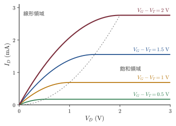
例題24.21 MOSFET のドレイン電流と相互コンダクタンス
例題24.20 の MOS 構造（$C_{ox}=0.345\,\mu\mathrm{F/cm^2}$）で，チャネル幅と長さの比 $W/L=10$，反転層の電子の移動度 $\mu_n=400\,\mathrm{cm^2/(V\,s)}$ の n チャネル MOSFET を作った．(1) $V_G-V_T=1.0\,\mathrm{V}$ の飽和電流と相互コンダクタンス $g_m=\partial I_D/\partial V_G$ を求めよ．(2) 同じ $V_G$ で $V_D=0.1\,\mathrm{V}$ のときの電流とオン抵抗を求めよ．(3) 反転層の移動度がバルクの Si（$1400\,\mathrm{cm^2/(V\,s)}$）より小さい理由を述べよ．
解答．(1) 係数をまとめて
$$ k\equiv\frac{W}{L}\mu_nC_{ox}=10\times(400\times10^{-4}\,\mathrm{m^2/(V\,s)})\times(3.45\times10^{-3}\,\mathrm{F/m^2})=1.38\times10^{-3}\,\mathrm{A/V^2} $$とおく．式 \eqref{eq:24-IDsat} より $I_{D,sat}=(k/2)(1.0\,\mathrm{V})^2=0.69\,\mathrm{mA}$．$g_m=k(V_G-V_T)=1.38\,\mathrm{mS}$．
(2) 式 \eqref{eq:24-ID} より電流を，$V_D\to0$ の極限の傾きの逆数からオン抵抗を求めると
$$ \begin{aligned} I_D&=k\left[(1.0)(0.1)-\frac{0.1^2}{2}\right]=1.38\times10^{-3}\times0.095\,\mathrm{A}=0.13\,\mathrm{mA},\\ R_{on}&=\frac{1}{k(V_G-V_T)}=\frac{1}{1.38\times10^{-3}}\,\Omega=7.2\times10^{2}\,\Omega \end{aligned} $$(3) 反転層の電子は厚さ数 nm の層に押しつけられているので，界面の凹凸による散乱（界面粗さ散乱），酸化膜中・界面の電荷による Coulomb 散乱，表面のフォノン散乱を強く受ける（第22章22.3節）．さらに電子の運動は界面に垂直な方向に量子化されている（24.7節）．その結果，室温の反転層の移動度はバルクの3分の1程度になる．
∎ 相互コンダクタンスを大きくする（速いトランジスタにする）には，$L$ を短く，$C_{ox}$ を大きく（酸化膜を薄く），移動度を大きくすればよい．微細化の歴史はまさにこの3つの追求であった．
24.6.9 サブしきい値領域と60 mV/dec の壁
$V_G\lt V_T$ でも電流は完全にはゼロにならず，弱反転の表面のわずかな電子が流れる．このサブしきい値電流（subthreshold current）が，オフのトランジスタの漏れ電流を決める．
導出：サブしきい値電流とサブしきい値勾配 $\mathrm{SS}=n_{\mathrm{SS}}\,(k_BT/e)\ln10$
(1) 電流は拡散で流れる．弱反転では反転層の電荷が小さく，チャネルに沿った電場はほとんどない．電子はソース側（電子が多い）からドレイン側（少ない）へ拡散で流れ，その量は表面の電子密度 $n(0)=n_{p0}\ee^{\beta\psi_s}$ に比例する（ドレイン側では $n_{p0}\ee^{\beta(\psi_s-V_D)}$ なので，電流は $\propto\ee^{\beta\psi_s}(1-\ee^{-\beta V_D})$）．
(2) ゲート電圧は表面ポテンシャルを「割り引いて」動かす．弱反転では半導体の電荷はほぼ空乏層の電荷なので，$V_G=V_{FB}+\psi_s+\sqrt{2\epsilon_s\epsilon_0eN_A\psi_s}/C_{ox}$．両辺を $\psi_s$ で微分すると
$$ \frac{\dd V_G}{\dd\psi_s}=1+\frac{1}{C_{ox}}\sqrt{\frac{\epsilon_s\epsilon_0eN_A}{2\psi_s}}=1+\frac{C_{\mathrm{dep}}}{C_{ox}}\equiv n_{\mathrm{SS}} $$$C_{\mathrm{dep}}=\epsilon_s\epsilon_0/W_d$ は空乏層の容量（$W_d=\sqrt{2\epsilon_s\epsilon_0\psi_s/(eN_A)}$ はそのときの空乏層の幅）で，$n_{\mathrm{SS}}$ をサブしきい値係数と呼ぶ．ゲート電圧を $\Delta V_G$ 変えても，表面ポテンシャルは $\Delta V_G/n_{\mathrm{SS}}$ しか変わらない（酸化膜容量と空乏層容量の容量分割）．
(3) 傾き．(1)(2) より $I_D\propto\exp(\beta\psi_s)\propto\exp[eV_G/(n_{\mathrm{SS}}k_BT)]$．電流を10倍にするのに必要なゲート電圧の変化，すなわちサブしきい値勾配（subthreshold swing．$\mathrm{SS}$ と略す．単位の dec は「桁」）は
∎ 界面準位があると，その容量 $C_{it}=e^2D_{it}$ も $C_{\mathrm{dep}}$ と並列に加わって $n_{\mathrm{SS}}$ を大きくする．
図24.24 に，例題24.21・24.22 の MOSFET のサブしきい値特性を示す．しきい値より下では $\log I_D$ が $V_G$ について直線になり，その傾きの逆数が $\mathrm{SS}$ である．
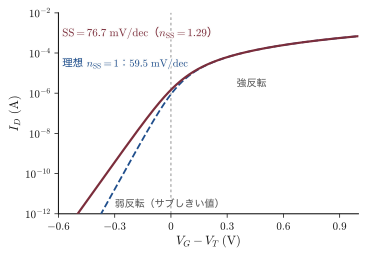
なぜ：60 mV/dec より急にはできないのか
サブしきい値領域の MOSFET は，ソースの電子がゲートで高さを制御された障壁を熱的に越える装置である．障壁を越えられる電子の数は Boltzmann 因子 $\ee^{-(\text{障壁})/k_BT}$ で決まるので，障壁を $k_BT\ln10=59.5\,\mathrm{meV}$ 下げてはじめて電流が10倍になる．ゲートが障壁を完全に支配できる理想の場合（$n_{\mathrm{SS}}=1$）でも，これより急にはならない．この下限 $(k_BT/e)\ln10$ は材料にも寸法にもよらず，温度だけで決まる「熱の壁」である．この壁を越えるには，Boltzmann 分布の高エネルギーの裾に頼らない別の機構，たとえばバンド間トンネル（第23章23.4節）でスイッチするトンネル FET などが必要になる．
例題24.22 サブしきい値勾配としきい電圧の下限
例題24.20 の MOSFET で，(1) $C_{\mathrm{dep}}=\epsilon_s\epsilon_0/W_m$ として $n_{\mathrm{SS}}$ と300 K の $\mathrm{SS}$ を求めよ．(2) 界面準位が $D_{it}=10^{11}\,\mathrm{cm^{-2}\,eV^{-1}}$ あると $\mathrm{SS}$ はいくらになるか．(3) $V_T=0.3\,\mathrm{V}$ のとき，$V_G=0$ のオフ電流は $V_G=V_T$ の電流の何分の1か（(1) の $\mathrm{SS}$ を使う）．(4) 100 °C では (1) の $\mathrm{SS}$ はいくらになるか．
解答．(1) 空乏層容量，係数，勾配の順に
$$ \begin{aligned} C_{\mathrm{dep}}&=\frac{1.036\times10^{-10}\,\mathrm{F/m}}{1.04\times10^{-7}\,\mathrm{m}}=9.98\times10^{-4}\,\mathrm{F/m^2},\\ n_{\mathrm{SS}}&=1+\frac{C_{\mathrm{dep}}}{C_{ox}}=1+\frac{0.998}{3.45}=1.29,\qquad \mathrm{SS}=1.29\times59.5\,\mathrm{mV/dec}=77\,\mathrm{mV/dec} \end{aligned} $$(2) $D_{it}=10^{11}\,\mathrm{cm^{-2}\,eV^{-1}}$ は，表面ポテンシャルが $1\,\mathrm{V}$ 変わるあいだに $10^{15}\,\mathrm{m^{-2}}$ 個の電子が界面準位に出入りすることを意味するので
$$ \begin{aligned} C_{it}&=e^2D_{it}=(1.602\times10^{-19}\,\mathrm{C})(10^{15}\,\mathrm{m^{-2}\,V^{-1}})=1.60\times10^{-4}\,\mathrm{F/m^2},\\ n_{\mathrm{SS}}&=1+\frac{(9.98+1.60)\times10^{-4}}{3.45\times10^{-3}}=1.34,\qquad\mathrm{SS}=80\,\mathrm{mV/dec} \end{aligned} $$(3) $10^{-0.30/0.077}=10^{-3.9}=1.2\times10^{-4}$．
(4) $\mathrm{SS}\propto T$ なので，$77\,\mathrm{mV/dec}$ の $373/300$ 倍の $95\,\mathrm{mV/dec}$ になる．
∎ オンとオフの電流比を $10^{4}$ 以上にするには，しきい電圧を $0.3\,\mathrm{V}$ 程度より下げられない．電源電圧を下げて消費電力を減らそうとしても，しきい電圧は $\mathrm{SS}$ のために下げられない——これが次項のスケーリングの行き詰まりの根本原因である．チップが熱くなると $\mathrm{SS}$ が悪化し漏れ電流がさらに増えるので，冷却も重要になる．
24.6.10 スケーリング則
1974年，R. H. Dennard（デナード）らは，MOSFET の寸法（$L$，$W$，$t_{ox}$）と電源電圧をすべて $1/\kappa$ に縮め（$\kappa$ はカッパ．1より大きい縮小率），基板の不純物濃度を $\kappa$ 倍にすれば，素子の中の電場は変わらずに同じように動作し，(i) 素子1個の電流と容量が $1/\kappa$，(ii) 遅延時間 $CV/I$ が $1/\kappa$，(iii) 1個あたりの消費電力 $VI$ が $1/\kappa^2$ になり，面積も $1/\kappa^2$ なので消費電力の密度は変わらないことを示した（比例縮小則，constant-field scaling）．確かめてみよう．$W/L$ は変わらず，$C_{ox}=\epsilon_{ox}\epsilon_0/t_{ox}$ は $\kappa$ 倍，電圧は $1/\kappa$ 倍なので，式 \eqref{eq:24-IDsat} の電流は $I\propto(W/L)C_{ox}V^2\propto1\cdot\kappa\cdot\kappa^{-2}=\kappa^{-1}$ となる．ゲートの容量は $C=C_{ox}WL\propto\kappa\cdot\kappa^{-2}=\kappa^{-1}$．したがって遅延時間は $CV/I\propto\kappa^{-1}\cdot\kappa^{-1}/\kappa^{-1}=\kappa^{-1}$，消費電力は $VI\propto\kappa^{-1}\cdot\kappa^{-1}=\kappa^{-2}$ である．集積度が2年ほどで2倍になる Moore（ムーア）の法則は，この処方箋に支えられて30年続いた．しかし2000年代半ばに，前項の $\mathrm{SS}$ の壁のためにしきい電圧と電源電圧（$\sim1\,\mathrm{V}$）が下げられなくなり，また酸化膜が原子数層まで薄くなってトンネル電流（第23章23.5節）が漏れるようになって，単純な比例縮小は終わった．その後は，酸化膜を誘電率の大きい $\mathrm{HfO_2}$ 系の膜に替え（2007年），チャネルを立体的にしてゲートで3方向から包む FinFET（2011年ごろ）や全周を包むゲート（GAA）にして $n_{\mathrm{SS}}$ を1に近づける，といった構造の工夫で微細化が続いている．
24.6.11 CCD — 電荷を運ぶ MOS キャパシタ
MOS キャパシタに強反転のしきい値より大きなパルス電圧を急にかけると，反転層ができる前の深い空乏の状態（24.6.5項）になり，表面に電子を蓄えられる深い「ポテンシャルの井戸」ができる．光が当たって生まれた電子はこの井戸に集まり，その数は光の量に比例する．W. S. Boyle（ボイル）と G. E. Smith（スミス）は1969年，MOS キャパシタを1列にびっしり並べ，隣のゲートの電圧を順に切り替えて（3相のクロック）井戸を横にずらすことで，電荷の塊をこぼさずに次々と出力端まで運べることを示した．これが CCD（charge-coupled device，電荷結合素子）で，1回の転送でこぼれる電荷は $10^{-5}$ 程度以下にできる．CCD はビデオカメラや天体観測（宇宙望遠鏡）の撮像素子として長く使われ，2人は2009年のノーベル物理学賞を受けた．現在のスマートフォンのカメラでは，画素ごとに増幅器を持つ CMOS イメージセンサーが主流になっているが，その画素も p-n 接合や MOS 構造に光で生まれた電荷をためるという点で原理は同じである．
24.7 表面量子化
24.7.1 界面に押しつけられた電子
MOSFET の反転層の電子（24.6節）も，HEMT のヘテロ界面の電子（24.3.4項）も，界面に垂直な方向には強い電場で数 nm の厚さに押しつけられている．一方，室温の電子の熱的な de Broglie（ド・ブロイ）波長は $\lambda=h/\sqrt{2\pi m^*k_BT}$ で，$m^*=0.26m$ なら $8\,\mathrm{nm}$ 程度である．閉じ込めの幅が波長と同程度以下になると，界面に垂直な運動は量子化される．電子は界面に平行な2方向にだけ自由に動ける2次元の粒子になる．1966年，A. B. Fowler（ファウラー）らは Si の MOSFET の反転層で，磁気抵抗の振動（Shubnikov（シュブニコフ）–de Haas（ド・ハース）振動）が磁場の界面に垂直な成分だけで決まることを観測し，この2次元電子系（two-dimensional electron system）の存在を示した．本節では，その量子化を最も簡単な三角形のポテンシャルで計算する．
24.7.2 三角ポテンシャルと Airy 関数
界面を $z=0$ とし，半導体を $z\gt0$ とする．絶縁体（または AlGaAs）の障壁は電子のエネルギーより十分高いので，$z=0$ に無限に高い壁があるとする．界面付近の電場 $\mathcal{E}_s$ を一定とみなすと，電子のポテンシャルエネルギーは $U(z)=e\mathcal{E}_sz$ の三角形になる（図24.25(a)．24.7.6項）．界面に平行な運動（エネルギー $\hbar^2k_\parallel^2/2m_\parallel$）は分離できるので，垂直方向の波動関数 $\varphi(z)$ について
$$ -\frac{\hbar^2}{2m_z}\frac{\dd^2\varphi}{\dd z^2}+e\mathcal{E}_sz\,\varphi=E\varphi,\qquad\varphi(0)=0,\quad\varphi(\infty)=0 $$を解けばよい（$m_z$ は界面に垂直な方向の有効質量）．
導出：三角ポテンシャルの準位 $E_n=-a_n\left(\dfrac{\hbar^2e^2\mathcal{E}_s^2}{2m_z}\right)^{1/3}$
(1) 変数変換．方程式を $\dfrac{\dd^2\varphi}{\dd z^2}=\dfrac{2m_z}{\hbar^2}\left(e\mathcal{E}_sz-E\right)\varphi$ と書き，新しい変数 $\zeta$（ゼータ）を $z=z_0\zeta+E/(e\mathcal{E}_s)$ で定義する．$e\mathcal{E}_sz-E=e\mathcal{E}_sz_0\zeta$，$\dd^2/\dd z^2=z_0^{-2}\dd^2/\dd\zeta^2$ なので
$$ \frac{1}{z_0^2}\frac{\dd^2\varphi}{\dd\zeta^2}=\frac{2m_ze\mathcal{E}_sz_0}{\hbar^2}\,\zeta\varphi \quad\Longrightarrow\quad \frac{\dd^2\varphi}{\dd\zeta^2}=\frac{2m_ze\mathcal{E}_sz_0^3}{\hbar^2}\,\zeta\varphi $$長さの単位を $z_0\equiv\left(\hbar^2/(2m_ze\mathcal{E}_s)\right)^{1/3}$ に選ぶと右辺の係数が1になり，Airy の微分方程式 $\varphi''=\zeta\varphi$ を得る．
(2) 解．Airy 方程式の2つの独立な解のうち，$\zeta\to+\infty$ で減衰するのは Airy 関数 $\mathrm{Ai}(\zeta)$ だけである（もう一つの $\mathrm{Bi}(\zeta)$ は増大する）．$\mathrm{Ai}(\zeta)$ は $\zeta\gt0$（古典的に禁止された領域）で単調に減衰し，$\zeta\lt0$ では振動して，負の実軸上に無限個の零点 $a_1\gt a_2\gt\cdots$ を持つ（表24.3）．したがって $\varphi(z)=\mathrm{Ai}\bigl((z-E/e\mathcal{E}_s)/z_0\bigr)$．
(3) 壁の条件．$\varphi(0)=0$ より $\mathrm{Ai}\bigl(-E/(e\mathcal{E}_sz_0)\bigr)=0$，すなわち $-E/(e\mathcal{E}_sz_0)$ が零点 $a_{n+1}$（$n=0,1,2,\ldots$）でなければならない：
∎ 準位は電場の $2/3$ 乗，質量の $-1/3$ 乗に比例する．基底状態の波動関数は節を持たず，$n$ 番目の励起状態は $n$ 個の節を持つ．
| $n$ | $-a_n$（厳密） | WKB の近似値 | 誤差 |
|---|---|---|---|
| 1 | 2.3381 | 2.3203 | $-0.8\,\%$ |
| 2 | 4.0879 | 4.0818 | $-0.15\,\%$ |
| 3 | 5.5206 | 5.5172 | $-0.06\,\%$ |
| 4 | 6.7867 | 6.7845 | $-0.03\,\%$ |
Airy 関数は，一様な電場の中の量子力学に必ず現れる関数で，WKB 近似の転回点の接続（量子力学 第12章12.5）や，電場中の光吸収の Franz（フランツ）–Keldysh（ケルディッシュ）効果（第25章25.8節）でも主役になる．積分表示は $\mathrm{Ai}(\zeta)=\dfrac1\pi\displaystyle\int_0^\infty\cos\!\left(\frac{t^3}{3}+\zeta t\right)\dd t$ である．
24.7.3 WKB による準位の近似式
導出：WKB の量子化条件から準位 $E_n$ を求める
ポテンシャルがゆるやかに変わるとき，束縛状態の量子化条件は $\int k(z)\dd z=(\text{整数}+\text{位相の補正})\pi$ と書ける（WKB 近似，Bohr（ボーア）–Sommerfeld（ゾンマーフェルト）の量子化条件）．$k(z)=\sqrt{2m_z(E-e\mathcal{E}_sz)}/\hbar$ は局所的な波数である．三角井戸では，片側（$z=0$）は無限に高い堅い壁で，波動関数は $\sin$ のようにゼロから始まる．もう片側の古典的な転回点 $z_t=E/(e\mathcal{E}_s)$ はゆるやかな壁で，Airy 関数との接続から波の位相が $\pi/4$ だけ手前で止まる．そのため量子化条件は
$$ \int_0^{z_t}k(z)\,\dd z=\left(n+\frac34\right)\pi\qquad(n=0,1,2,\ldots) $$となる（両側がゆるやかな壁なら $n+\tfrac12$，両側が堅い壁なら $n+1$）．積分は $u=z_t-z$ と置き換えて
$$ \int_0^{z_t}\frac{\sqrt{2m_ze\mathcal{E}_s(z_t-z)}}{\hbar}\dd z=\frac{\sqrt{2m_ze\mathcal{E}_s}}{\hbar}\int_0^{z_t}u^{1/2}\dd u=\frac{\sqrt{2m_ze\mathcal{E}_s}}{\hbar}\cdot\frac23z_t^{3/2} $$$z_t=E/(e\mathcal{E}_s)$ を入れて量子化条件と等置し，$E^{3/2}$ について解くと
$$ \frac23\,\frac{\sqrt{2m_ze\mathcal{E}_s}}{\hbar}\left(\frac{E}{e\mathcal{E}_s}\right)^{3/2}=\left(n+\frac34\right)\pi \quad\Longrightarrow\quad E^{3/2}=\frac{3\pi}{2}\left(n+\frac34\right)\frac{\hbar\,e\mathcal{E}_s}{\sqrt{2m_z}} $$両辺を $2/3$ 乗すると，$(\hbar/\sqrt{2m_z})^{2/3}=(\hbar^2/2m_z)^{1/3}$ なので
∎ 式 \eqref{eq:24-airy} と比べると，$-a_{n+1}$ が $[\tfrac{3\pi}{2}(n+\tfrac34)]^{2/3}$ に置き換わっている．表24.3 のとおり，基底状態でも誤差は1% 未満で，励起状態ほど正確になる．
例題24.23 Si 反転層の最低準位
Si(100) 面の MOSFET の反転層で，界面に垂直な有効質量が $m_z=0.916m$ の谷の電子を考える（24.7.6項で扱う）．界面の電場を $\mathcal{E}_s=1.0\times10^{5}\,\mathrm{V/cm}$ として，(1) 長さの単位 $z_0$ とエネルギーの単位 $e\mathcal{E}_sz_0$，(2) 最低の2準位 $E_0$，$E_1$ と WKB の値，(3) 基底状態の古典的転回点 $z_t$ と，電子の平均の深さ $\langle z\rangle=2E_0/(3e\mathcal{E}_s)$ を求めよ．
解答．(1) 準備として
$$ \begin{aligned} e\mathcal{E}_s&=(1.602\times10^{-19}\,\mathrm{C})(1.0\times10^{7}\,\mathrm{V/m})=1.602\times10^{-12}\,\mathrm{N},\\ 2m_z&=2\times0.916\times9.109\times10^{-31}\,\mathrm{kg}=1.669\times10^{-30}\,\mathrm{kg} \end{aligned} $$より
$$ z_0=\left(\frac{(1.055\times10^{-34})^2}{(1.669\times10^{-30})(1.602\times10^{-12})}\right)^{1/3}\mathrm{m}=(4.16\times10^{-27})^{1/3}\,\mathrm{m}=1.61\,\mathrm{nm} $$エネルギーの単位は
$$ e\mathcal{E}_sz_0=e\times(1.0\times10^{7}\,\mathrm{V/m})(1.61\times10^{-9}\,\mathrm{m})=16.1\,\mathrm{meV} $$(2) $E_0=2.338\times16.1\,\mathrm{meV}=37.6\,\mathrm{meV}$，$E_1=4.088\times16.1\,\mathrm{meV}=65.7\,\mathrm{meV}$．WKB では $2.320\times16.1=37.3\,\mathrm{meV}$，$4.082\times16.1=65.6\,\mathrm{meV}$．
(3) $z_t=E_0/(e\mathcal{E}_s)$ は $0.0376\,\mathrm{V}/(10^{7}\,\mathrm{V/m})=3.8\,\mathrm{nm}$，$\langle z\rangle=\tfrac23z_t=2.5\,\mathrm{nm}$．
∎ 準位の間隔 $E_1-E_0=28\,\mathrm{meV}$ は室温の $k_BT$ と同程度，電子の層の厚さは $2.5\,\mathrm{nm}$ と酸化膜（$10\,\mathrm{nm}$）より薄い．$\langle z\rangle=2E_0/(3e\mathcal{E}_s)$ となる理由は次のとおりである．エネルギー $E_n$ は式 \eqref{eq:24-airy} のとおり $\mathcal{E}_s^{2/3}$ に比例するので $\dd E_n/\dd\mathcal{E}_s=\tfrac23E_n/\mathcal{E}_s$．一方，電場を $\dd\mathcal{E}_s$ だけ変えたときのエネルギーの変化は，増えたポテンシャル $ez\,\dd\mathcal{E}_s$ の期待値 $e\langle z\rangle\dd\mathcal{E}_s$ に等しい（Hellmann（ヘルマン）–Feynman（ファインマン）の定理．波動関数の形の変化は，固有状態では1次のエネルギー変化を生まない．量子力学 第27章27.3）．両者を等しいとおいて $e\langle z\rangle=\tfrac23E_n/\mathcal{E}_s$ を得る．線形ポテンシャルのビリアル定理（量子力学 第17章17.4）$2\langle K\rangle=\langle z\,\dd U/\dd z\rangle=\langle U\rangle$ と $E=\langle K\rangle+\langle U\rangle$ から $\langle U\rangle=\tfrac23E$ としても同じ結果になる（壁が $z=0$ にあるので壁からの寄与はない）．
24.7.4 Fang–Howard の変分関数
実際の反転層では電場は一定ではなく，電子自身の電荷のために深くなるほど弱くなる．このような場合にも使える近似として，F. F. Fang（ファン）と W. E. Howard（ハワード）は1966年に，次の簡単な試行関数による変分法（量子力学 第30章30.1）を提案した：
$$ \varphi(z)=\sqrt{\frac{b^3}{2}}\;z\,\ee^{-bz/2} $$$z=0$ でゼロになり，遠くで減衰し，節がない．$b$ が変分のパラメーターである．
導出：Fang–Howard の変分関数の $\langle z\rangle=3/b$ と最適な $b$
積分 $\int_0^\infty z^n\ee^{-bz}\dd z=n!/b^{n+1}$（Gamma 関数，付録A A.5）を使う．
(1) 規格化と平均の深さ．
$$ \begin{aligned} \int_0^\infty\varphi^2\dd z&=\frac{b^3}{2}\int_0^\infty z^2\ee^{-bz}\dd z=\frac{b^3}{2}\cdot\frac{2}{b^3}=1,\\ \langle z\rangle&=\frac{b^3}{2}\int_0^\infty z^3\ee^{-bz}\dd z=\frac{b^3}{2}\cdot\frac{6}{b^4}=\frac3b \end{aligned} $$(2) 運動エネルギー．運動エネルギーの平均を $\langle K\rangle$ と書く．$\varphi'=\sqrt{b^3/2}\,\ee^{-bz/2}(1-bz/2)$ なので
$$ \begin{aligned} \langle K\rangle&=\frac{\hbar^2}{2m_z}\int_0^\infty\varphi'^2\dd z=\frac{\hbar^2}{2m_z}\cdot\frac{b^3}{2}\int_0^\infty\ee^{-bz}\left(1-bz+\frac{b^2z^2}{4}\right)\dd z\\ &=\frac{\hbar^2}{2m_z}\cdot\frac{b^3}{2}\left(\frac1b-\frac1b+\frac{1}{2b}\right)=\frac{\hbar^2b^2}{8m_z} \end{aligned} $$(3) 全エネルギーの最小化．一定の電場では $\langle U\rangle=e\mathcal{E}_s\langle z\rangle=3e\mathcal{E}_s/b$．全エネルギー $E(b)=\hbar^2b^2/(8m_z)+3e\mathcal{E}_s/b$ を $b$ で微分してゼロとおくと
$$ \frac{\hbar^2b}{4m_z}-\frac{3e\mathcal{E}_s}{b^2}=0\quad\Longrightarrow\quad b=\left(\frac{12m_ze\mathcal{E}_s}{\hbar^2}\right)^{1/3} $$このとき $3e\mathcal{E}_s/b=\hbar^2b^2/(4m_z)$ なので $E_{min}=3\hbar^2b^2/(8m_z)$．$b$ を入れて整理すると
∎ 係数 $2.476$ は厳密な $2.338$ より6% 大きい．変分原理によれば，試行関数で求めたエネルギーは必ず真の基底エネルギー以上になるので，これは当然である．
この関数の本当の価値は，電場が一定でない場合に発揮される．空乏層の電荷（面密度 $N_{depl}$）と電子自身の電荷（$n_s$）の作る電場を自己無撞着に入れると，同じ形の試行関数で $b=\left(12m_ze^2N^*/(\epsilon_s\epsilon_0\hbar^2)\right)^{1/3}$，$N^*=N_{depl}+\tfrac{11}{32}n_s$ となる．係数 $\tfrac{11}{32}$ は次のようにして出る．空乏層の電荷による一様な電場のポテンシャルの平均は $3e^2N_{depl}/(\epsilon_s\epsilon_0b)$ である．一方，電子どうしの反発のエネルギー（電子1個あたり．同じ組を二重に数えないよう半分にする）を Fang–Howard の分布で計算すると $3e^2(\tfrac{11}{32}n_s)/(\epsilon_s\epsilon_0b)$ となり，空乏層の電荷と同じ形にまとまる（結果は安藤恒也，Fowler，Stern（スターン）の1982年の総説にまとめられている）．空乏層の電荷が少ない GaAs/AlGaAs の2次元電子ガスでは $N^*\simeq\tfrac{11}{32}n_s$ である．
例題24.24 Fang–Howard の変分関数を使う
(1) 例題24.23 の Si 反転層（$m_z=0.916m$，$\mathcal{E}_s=10^{5}\,\mathrm{V/cm}$）で $b$，$\langle z\rangle$，$E_{min}$ を求め，厳密解と比べよ．(2) GaAs/AlGaAs の2次元電子ガス（$m_z=0.067m$，$\epsilon_s=12.9$，$n_s=5\times10^{11}\,\mathrm{cm^{-2}}$，$N_{depl}\simeq0$）で $b$ と $\langle z\rangle$ を求めよ．
解答．(1) 式 \eqref{eq:24-fh} に数値を入れて
$$ b^3=\frac{12m_ze\mathcal{E}_s}{\hbar^2}=\frac{12\times(8.344\times10^{-31})(1.602\times10^{-12})}{(1.055\times10^{-34})^2}\ \mathrm{m^{-3}}=1.44\times10^{27}\,\mathrm{m^{-3}} $$より $b=1.13\,\mathrm{nm^{-1}}$．$\langle z\rangle=3/b=2.66\,\mathrm{nm}$（厳密解は $2.51\,\mathrm{nm}$）．$E_{min}$ は $2.476\times16.1\,\mathrm{meV}=39.8\,\mathrm{meV}$（厳密解は $37.6\,\mathrm{meV}$）．
(2) $N^*=\tfrac{11}{32}n_s$ に $n_s=5\times10^{15}\,\mathrm{m^{-2}}$ を入れて $N^*=1.72\times10^{15}\,\mathrm{m^{-2}}$．
$$ b^3=\frac{12\times(0.067\times9.109\times10^{-31})(1.602\times10^{-19})^2(1.72\times10^{15})}{(12.9\times8.854\times10^{-12})(1.055\times10^{-34})^2}\ \mathrm{m^{-3}}=2.54\times10^{25}\,\mathrm{m^{-3}} $$$b=0.294\,\mathrm{nm^{-1}}$，$\langle z\rangle=3/b=10\,\mathrm{nm}$．
∎ GaAs の電子は，Si の反転層の電子より約4倍厚く広がる．質量が小さいこと（$b\propto m_z^{1/3}$ から $(0.916/0.067)^{1/3}=2.4$ 倍）と，電子を押しつける電場が弱いこと（$N^*$ に換算すると Si の例の約4分の1）の両方による．図24.25(b) に Si の場合の厳密解と Fang–Howard 関数の分布を比べた．形はやや違うが，平均の深さやエネルギーは数 % で一致する．
24.7.5 2次元の状態密度と量子容量
垂直方向の量子化で生まれた各準位 $E_n$ の上には，界面に平行な自由な運動のエネルギーが乗る：$E=E_n+\hbar^2k_\parallel^2/2m_\parallel$．これをサブバンド（subband）という．
導出：2次元の状態密度 $D_{2D}=m^*/(\pi\hbar^2)$
面積 $A$ の2次元系に周期境界条件を課すと，波数平面の面積 $(2\pi)^2/A$ ごとに1つの状態がある（第14章14.2節，付録A A.2）．スピンの2を掛けると，半径 $k$ と $k+\dd k$ の円環の状態数は単位面積あたり
$$ \dd N=2\cdot\frac{2\pi k\,\dd k}{(2\pi)^2}=\frac{k\,\dd k}{\pi} $$$E=E_n+\hbar^2k^2/(2m^*)$ を微分すると $\dd E=\hbar^2k\,\dd k/m^*$，すなわち $k\,\dd k=(m^*/\hbar^2)\dd E$．よって
∎ $g_v$ は谷の縮退度である．2次元の状態密度はエネルギーによらない一定値であり，サブバンドの底 $E_n$ ごとに階段状に増える（図24.26(b)）．
GaAs（$m^*=0.067m$，$g_v=1$）では $D_{2D}=2.8\times10^{13}\,\mathrm{cm^{-2}\,eV^{-1}}$（$1\,\mathrm{meV}$ あたり $2.8\times10^{10}\,\mathrm{cm^{-2}}$）である．最低のサブバンドだけに電子がいる絶対零度では $n_s=D_{2D}(E_F-E_0)$ なので，$n_s=5\times10^{11}\,\mathrm{cm^{-2}}$ なら $E_F-E_0=17.9\,\mathrm{meV}$ である．
状態密度が有限であることは，電気回路にも現れる．2次元電子系にさらに電子を入れるには，状態を上へ詰めていくぶん Fermi 準位を上げなければならない．面密度を $\dd n_s$ 増やすと Fermi 準位が $\dd E_F=\dd n_s/D_{2D}$ 上がるので，電荷 $e\,\dd n_s$ と電位の変化 $\dd E_F/e$ の比として量子容量（quantum capacitance）
$$ C_q=\frac{e\,\dd n_s}{\dd E_F/e}=e^2D_{2D} $$が，酸化膜の容量と直列に入る．GaAs では $C_q=4.5\,\mu\mathrm{F/cm^2}$，Si(100)（$g_v=2$，$m^*=0.19m$）では $25\,\mu\mathrm{F/cm^2}$ である．厚さ $10\,\mathrm{nm}$ の酸化膜（$0.35\,\mu\mathrm{F/cm^2}$）に比べれば大きいが，最先端の MOSFET のゲート絶縁膜は $\mathrm{SiO_2}$ に換算して $1\,\mathrm{nm}$ 程度（$3.5\,\mu\mathrm{F/cm^2}$）なので，量子容量と，電子の層が界面から $\langle z\rangle$ だけ離れていることによる容量（$\epsilon_s\epsilon_0/\langle z\rangle$）は無視できない．状態密度がゼロになる Dirac 点を持つグラフェンでは，量子容量が特に重要になる．
24.7.6 Si(100) 反転層のサブバンド構造
Si の伝導帯の底は $\langle100\rangle$ 方向の6つの楕円体の谷である（第17章17.3節）．(100) 面の反転層では，界面に垂直な $z$ 方向から見て谷は2種類に分かれる．
- 2つの谷（$\pm z$ 方向）：$z$ 方向の質量は重い $m_z=m_l=0.916m$（第17章では丸めて $0.92m$ と書き，例題24.17 もその値を使った），面内は等方的に軽い $m_t=0.19m$．式 \eqref{eq:24-airy} で $E\propto m_z^{-1/3}$ なので準位が低い．この系列を $E_0,E_1,E_2,\ldots$ と書く．状態密度は $g_v=2$，$m^*=m_t$．
- 4つの谷（$\pm x$，$\pm y$ 方向）：$m_z=m_t=0.19m$ と軽いので準位が高い．この系列を $E_0',E_1',\ldots$ と書く．面内の質量は $m_l$ と $m_t$ で異方的で，状態密度の質量は $\sqrt{m_lm_t}=0.42m$，$g_v=4$．
$\mathcal{E}_s=10^{5}\,\mathrm{V/cm}$ では $E_0=38\,\mathrm{meV}$，$E_1=66\,\mathrm{meV}$，$E_0'=64\,\mathrm{meV}$ である（図24.25(a)．$E_0'$ は $E_0$ の $(0.916/0.19)^{1/3}=1.69$ 倍）．同じ物質でも，谷の向きによって量子化の効き方が違うのである．
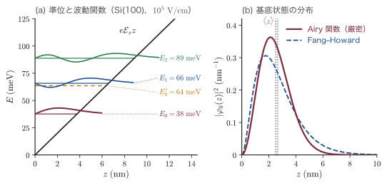
24.7.7 占有サブバンドが1つだけになる条件
電子が最低のサブバンド $E_0$ だけを占めるとき，系は本当の意味で2次元になる（電気的量子極限）．そのための条件は2つある．
- 密度の条件（絶対零度）：Fermi 準位が次のサブバンドの底より下にあること．次のサブバンドを $E_{next}$ とすると，$n_s=D_{2D}^{(0)}(E_F-E_0)$ より
- 温度の条件：$k_BT\ll E_{next}-E_0$．熱的な励起で上のサブバンドに電子が上がらないこと．
Si(100) で $\mathcal{E}_s=10^{5}\,\mathrm{V/cm}$ なら $E_{next}=E_0'$，$E_0'-E_0=26\,\mathrm{meV}$，$D_{2D}^{(0)}=2m_t/(\pi\hbar^2)$ は $1.59\times10^{14}\,\mathrm{cm^{-2}\,eV^{-1}}$ なので，条件1は $n_s\lt4\times10^{12}\,\mathrm{cm^{-2}}$ となる（電場を一定とした粗い見積もり）．条件2は室温（$k_BT=26\,\mathrm{meV}$）では満たされず，いくつものサブバンドに電子がいるが，液体ヘリウム温度（$4.2\,\mathrm{K}$ で $k_BT=0.36\,\mathrm{meV}$）では十分に満たされる．
例題24.25 GaAs の2次元電子ガスは本当に2次元か
GaAs/AlGaAs の2次元電子ガス（$m^*=0.067m$，$n_s=5\times10^{11}\,\mathrm{cm^{-2}}$）について，(1) $E_F-E_0$ を求めよ．(2) 電子の層が感じる平均の電場を $\mathcal{E}=en_s/(2\epsilon_s\epsilon_0)$（$\epsilon_s=12.9$）として三角ポテンシャルで $E_1-E_0$ を見積もり，低温で1つのサブバンドだけが占められるか判定せよ．(3) この2次元電子系で，占有率 $\nu=n_sh/(eB)$ が2になる磁場を求めよ．
解答．(1) $D_{2D}=2.8\times10^{13}\,\mathrm{cm^{-2}\,eV^{-1}}$ より $E_F-E_0=n_s/D_{2D}=17.9\,\mathrm{meV}$．
(2) 平均の電場は
$$ \mathcal{E}=\frac{en_s}{2\epsilon_s\epsilon_0}=\frac{(1.602\times10^{-19})(5\times10^{15})}{2\times12.9\times8.854\times10^{-12}}\ \mathrm{V/m}=3.5\times10^{6}\,\mathrm{V/m} $$である．例題24.23 と同じ計算で，エネルギーの単位は $(\hbar^2e^2\mathcal{E}^2/2m_z)^{1/3}=19.1\,\mathrm{meV}$（$m_z=0.067m$ が Si の $0.916m$ より軽いぶん大きい）．式 \eqref{eq:24-airy} より，$E_1-E_0$ は $(4.088-2.338)=1.750$ に $19.1\,\mathrm{meV}$ を掛けて $33\,\mathrm{meV}$．これは $E_F-E_0=18\,\mathrm{meV}$ より大きいので，低温（$k_BT\ll33\,\mathrm{meV}$）では最低のサブバンドだけが占められる．
(3) $\nu=n_sh/(eB)=2$ より
$$ B=\frac{n_sh}{2e}=\frac{(5\times10^{15}\,\mathrm{m^{-2}})(6.626\times10^{-34}\,\mathrm{J\,s})}{2\times1.602\times10^{-19}\,\mathrm{C}}=10.3\,\mathrm{T} $$∎ 低温の GaAs の2次元電子ガスは理想的な2次元系であり，$10\,\mathrm{T}$ 程度の磁場で量子 Hall 効果の $\nu=2$ のプラトーが観測される（24.7.9項）．ただし実際には三角近似は上のサブバンドの間隔を大きめに見積もるので，$n_s$ が $10^{12}\,\mathrm{cm^{-2}}$ に近づくと第2サブバンドに電子が入り始める．
24.7.8 移動度への影響
2次元系の電子は界面のすぐそばを走るので，バルクにはない散乱を受ける（第22章22.3節）．Si の MOSFET の反転層では，(i) 酸化膜中・界面の電荷やイオン化アクセプターによる Coulomb 散乱（低い電子密度で効く），(ii) フォノン散乱，(iii) 界面の原子レベルの凹凸による界面粗さ散乱（電子を界面に押しつける電場が強いほど，すなわち高い電子密度ほど効く）が移動度を決める．移動度を電子が感じる実効的な電場 $\mathcal{E}_{eff}=e(N_{depl}+n_s/2)/(\epsilon_s\epsilon_0)$ に対して描くと，基板の濃度によらずほぼ1本の曲線（ユニバーサル移動度）に乗ることが知られており，素子設計の基準になっている．一方，変調ドープした GaAs の2次元電子ガスでは，不純物から離れ（24.3.4項），界面も原子レベルで平らなので，低温で $10^{7}\,\mathrm{cm^2/(V\,s)}$ を超える移動度（平均自由行程は $0.1\,\mathrm{mm}$ 程度）が実現している．
24.7.9 量子 Hall 効果への接続
2次元電子系に界面に垂直な強い磁場 $B$ をかけると，面内の運動も量子化され，一定だった状態密度は間隔 $\hbar\omega_c$ の Landau（ランダウ）準位（1準位あたり単位面積に $eB/h$ 個，スピンを含めない）に分かれる（第21章21.6節）．2次元では準位の間に状態がまったくないので，Fermi 準位が準位の間にあるとき伝導は劇的に変わり，Hall 抵抗が $h/(\nu e^2)$（$\nu$ は整数）に驚くべき精度で量子化される．K. von Klitzing（フォン・クリッツィング）は1980年にこの整数量子 Hall 効果を Si の MOSFET の反転層で発見し（1985年ノーベル物理学賞），1982年には D. C. Tsui（ツイ）・H. L. Störmer（シュテルマー）・A. C. Gossard（ゴサード）が，変調ドープした GaAs/AlGaAs の2次元電子ガスで分数量子 Hall 効果を発見した（Tsui と Störmer は R. B. Laughlin（ラフリン）とともに1998年ノーベル物理学賞）．本節の表面量子化の技術が，固体物理の基礎の大発見の舞台を用意したのである．
24.7.10 量子細線と量子ドット
閉じ込めを2方向にすると電子は1方向にしか動けない量子細線（quantum wire）に，3方向すべてにすると量子ドット（quantum dot）になる．状態密度は次元によって図24.26 のように形を変える（1次元と3次元の導出は 付録A A.2）．
- 3次元：$D\propto\sqrt{E}$．
- 2次元：サブバンドごとに一定値 $m^*/\pi\hbar^2$ の階段．無限井戸では階段の角がちょうど3次元の曲線に接する．
- 1次元：各サブバンドの底で $D=\dfrac{\sqrt{2m^*}}{\pi\hbar}(E-E_n)^{-1/2}$ と発散する（単位長さあたり，スピンを含む）．
- 0次元：連続的な部分がなくなり，原子のような離散準位 $\sum2\delta(E-E_n)$ だけになる．
量子細線の例は，2次元電子ガスの上に置いた2本のゲートで電子の通り道を細く絞った量子ポイントコンタクト（コンダクタンスの量子化，第23章23.7節）や，半導体のナノワイヤである．量子ドットは，GaAs の上に格子定数の大きい InAs を成長させたとき，ひずみ（24.3.5項）を緩和するために自発的にできる数十 nm の島（自己形成量子ドット）や，溶液中で合成した CdSe などのコロイド量子ドットとして作られる．準位が離散的なので発光のスペクトルが鋭く，大きさで色を変えられる（量子力学 第10章10.8）．量子ドットの発見と合成は2023年のノーベル化学賞の対象となり，量子ドットレーザーやディスプレイ，単一光子源（第26章）に使われている．
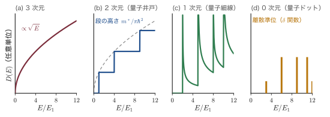
24.8 まとめと演習
24.8.1 まとめ
- 少数キャリアの拡散と再結合が，デバイスの動作の土台である．少数キャリアは注入によって何桁も変わり，デバイスの動作を支配する．電流はドリフトと拡散の和 $J_n=en\mu_n\mathcal{E}+eD_n\,\dd n/\dd x$，$J_p=ep\mu_p\mathcal{E}-eD_p\,\dd p/\dd x$ で，両者は Einstein の関係 $D/\mu=k_BT/e$ で結ばれる．粒子数の収支（連続の式）から少数キャリアの拡散方程式が出て，定常注入の解は $\Delta p=\Delta p(0)\ee^{-x/L_p}$，拡散長 $L_p=\sqrt{D_p\tau_p}$（Si で数十〜数百 $\mu\mathrm{m}$）．
- 注入した正孔の雲を走らせると，移動度・拡散係数・寿命が測れる．Haynes–Shockley 実験では注入パルスが Gauss 型を保ったまま速さ $\mu\mathcal{E}$ でドリフトし，$\sqrt{Dt}$ で広がり，$\ee^{-t/\tau}$ で減る．到着時刻と幅から $\mu$ と $D$ を，波形の面積がコレクタの距離とともに減る割合から $\tau$ を決め，Einstein の関係が確かめられる．表面は表面再結合速度 $S_r$ の境界条件 $D\,\dd\Delta p/\dd x=S_r\Delta p(0)$ で表される．非平衡では準 Fermi 準位を使い，$np=n_i^2\ee^{(E_{Fn}-E_{Fp})/k_BT}$，$J_n=\mu_nn\,\dd E_{Fn}/\dd x$．
- p-n 接合の性質は，空乏層の電荷が作る電位の段差で決まる．p-n 接合：拡散電位 $V_{bi}=(k_BT/e)\ln(N_AN_D/n_i^2)$．空乏近似の Poisson 方程式から，電場は三角形，電位は放物線をつないだ形，$N_Ax_p=N_Dx_n$，空乏層の幅 $W\propto\sqrt{V_{bi}-V}$（式 \eqref{eq:24-W}），$\mathcal{E}_{max}=2(V_{bi}-V)/W$．接合容量 $C=\epsilon_s\epsilon_0A/W$ で，$1/C^2$–$V$ の傾きと切片から $N$ と $V_{bi}$ がわかる．
- 電流は，障壁を越えて注入された少数キャリアの拡散で決まり，電圧とともに指数関数的に増える．Shockley の理想ダイオード式：空乏層の端の境界条件 $p_n(x_n)=p_{n0}\ee^{eV/k_BT}$（準 Fermi 準位が空乏層で平ら）と中性領域の少数キャリアの拡散から，$J=J_s(\ee^{eV/k_BT}-1)$，$J_s=en_i^2[D_n/(L_nN_A)+D_p/(L_pN_D)]$．$J_s\propto n_i^2\propto\ee^{-E_g/k_BT}$ が順方向電圧（Si で $0.6$〜$0.7\,\mathrm{V}$）を決める．空乏層の生成・再結合電流は $n_i$ に比例し，理想因子2を与え，室温の Si の逆方向電流を支配する（10 °C で約2倍）．
- 順方向の p-n 接合は少数キャリアをため込むので，切り替えに時間がかかる．順方向の p-n 接合には少数キャリアが蓄えられ（$Q=I\tau$），拡散容量 $C_{\mathrm{diff}}=g_d\tau/2$ と蓄積時間（$t_s\sim\tau$）がスイッチングを遅くする．短いダイオードでは $L$ が中性領域の幅に置き換わる．傾斜接合では $W\propto(V_{bi}-V)^{1/3}$．
- 2種類の半導体をつなぐと，バンドの段差を設計の道具にできる．ヘテロ接合：バンドの並びは type I・II・III．Anderson の電子親和力則 $\Delta E_c=e(\chi_1-\chi_2)$ は見当をつけるには使えるが定量的でない（GaAs/AlGaAs の実測は $\Delta E_c:\Delta E_v\approx60:40$）．界面にはスパイクとノッチができる．変調ドープでドナーと電子を分けた2次元電子ガスは極めて高い移動度を持ち，HEMT になる．ひずみ層には臨界膜厚（ミスフィット $1\,\%$ で $10\,\mathrm{nm}$ 程度）がある．HBT では注入比が，スパイクを消した傾斜接合で $\ee^{\Delta E_g/k_BT}$ 倍，急峻な接合でもおよそ $\ee^{\Delta E_v/k_BT}$ 倍になり，ダブルヘテロ構造はキャリアと光を閉じ込めてレーザーを可能にした．
- 表面には周期性の切断によるギャップ内の準位があり，表面の Fermi 準位を固定してしまう．表面準位は周期性の切断から生じ，半無限の強束縛鎖では $\abs{\delta}\gt t$ のときにだけ $E_s=\varepsilon_a+\delta+t^2/\delta$ の局在状態ができる．清浄な Si 表面では $10^{15}\,\mathrm{cm^{-2}}$ 程度の準位が，酸化と水素処理で $10^{10}\,\mathrm{cm^{-2}\,eV^{-1}}$ 程度まで減る．表面電荷はバンドを曲げ（$V_s=Q_{ss}^2/(2e\epsilon_s\epsilon_0N_D)$），準位が $10^{13}\,\mathrm{cm^{-2}\,eV^{-1}}$ を超えると Fermi 準位はピンニングされる．
- 金属と半導体の接触は，障壁の高さと厚さしだいで整流にもオーム接触にもなる．金属・半導体界面：Schottky–Mott 則 $e\phi_B=e\phi_m-e\chi$ は Si や GaAs では成り立たず，界面準位と金属誘起ギャップ状態によるピンニングで $S_p=\dd\phi_B/\dd\phi_m\ll1$（Si で0.3程度，GaAs で0.1以下）となる．電流は熱電子放出 $J=A^*T^2\ee^{-e\phi_B/k_BT}(\ee^{eV/k_BT}-1)$，$A^*=120(m^*/m)\,\mathrm{A\,cm^{-2}\,K^{-2}}$ で，多数キャリアだけが流れるので速く，順方向電圧が低い．鏡像力は障壁を $\Delta\phi=\sqrt{e\mathcal{E}/(4\pi\epsilon_s\epsilon_0)}$ 下げる．オーム接触は高濃度ドープで障壁を薄くしてトンネルさせ，$\rho_c\propto\exp[(2\sqrt{\epsilon_s\epsilon_0m^*}/\hbar)\phi_B/\sqrt{N_D}]$．
- MIS 構造では，ゲート電圧で表面のキャリアの種類と数を自由に変えられる．MIS 構造：表面ポテンシャル $\psi_s$ によって蓄積・空乏・反転の状態をとり，Poisson 方程式を1回積分して $Q_s=\mp(\sqrt2\epsilon_s\epsilon_0k_BT/eL_D)F$ が厳密に求まる．強反転の条件は $\psi_s=2\psi_B$，しきい電圧は $V_T=V_{FB}+2\psi_B+\abs{Q_d}/C_{ox}$（$\abs{Q_d}=\sqrt{2\epsilon_s\epsilon_0eN_A(2\psi_B)}$ は最大空乏層の電荷）．C–V 特性は低周波・高周波・深い空乏で異なり，$V_{FB}$ は仕事関数差と酸化膜中の電荷で決まる．
- MOSFET の電流はゲート電圧で制御されるが，オフにする鋭さには熱で決まる下限がある．MOSFET：漸近チャネル近似で $I_D=k[(V_G-V_T)V_D-V_D^2/2]$（$k=(W/L)\mu C_{ox}$），飽和電流 $(k/2)(V_G-V_T)^2$．サブしきい値勾配 $\mathrm{SS}=n_{\mathrm{SS}}(k_BT/e)\ln10$ が $60\,\mathrm{mV/dec}$ より小さくならないことは Boltzmann 分布による「熱の壁」で，しきい電圧と電源電圧の下限を決め，比例縮小則の終わりをもたらした．CCD は深い空乏の MOS キャパシタで電荷を運ぶ．
- 界面に押しつけられた電子は，垂直方向の運動が量子化された2次元系になる．表面量子化：三角ポテンシャルの準位は Airy 関数の零点で $E_n=-a_{n+1}(\hbar^2e^2\mathcal{E}_s^2/2m_z)^{1/3}$，WKB では $n+3/4$ の量子化条件で1% 以内の精度．Fang–Howard の変分関数 $z\ee^{-bz/2}$ は $\langle z\rangle=3/b$．2次元の状態密度は一定値 $g_vm^*/\pi\hbar^2$ で，量子容量 $e^2D_{2D}$ を与える．Si(100) では谷が2つと4つに分かれ，サブバンドの系列が2つできる．2次元電子系は量子 Hall 効果の舞台であり，閉じ込めの次元を下げると量子細線・量子ドットになる．
24.8.2 演習問題
演習24.1 短いダイオードの飽和電流
Si（300 K，$n_i=1.0\times10^{10}\,\mathrm{cm^{-3}}$）の $\mathrm{p^+n}$ 接合の n 側の中性領域（$N_D=10^{16}\,\mathrm{cm^{-3}}$，$D_p=12\,\mathrm{cm^2/s}$，$\tau_p=1\,\mu\mathrm{s}$）の幅が $W_n=5\,\mu\mathrm{m}$ で，その先にオーム接触があるとする．(1) 中性領域の過剰正孔分布が
$$ p_n-p_{n0}=p_{n0}\left(\ee^{eV/k_BT}-1\right)\frac{\sinh[(W_n-x')/L_p]}{\sinh(W_n/L_p)} $$（$x'$ は空乏層の端からの距離）であることを確かめ，正孔の飽和電流密度 $J_s=(eD_pp_{n0}/L_p)\coth(W_n/L_p)$ を導け．(2) $J_s$ を数値で求め，十分長いダイオードの場合と比べよ．(3) 蓄えられる過剰正孔の量と，正孔が中性領域を通り抜ける時間を見積もり，寿命と比べよ．
ヒント：(1) $\sinh$ が拡散方程式 $\Delta p''=\Delta p/L_p^2$ を満たし，$x'=0$ で1，$x'=W_n$ で0になることを確かめる．$-\dd/\dd x'$ を $x'=0$ で評価すると $\coth(W_n/L_p)/L_p$ が出る．(2) $L_p=34.6\,\mu\mathrm{m}$，長いダイオードの $J_s=5.6\times10^{-12}\,\mathrm{A/cm^2}$，$\coth(0.144)=6.98$ より短いダイオードでは $3.9\times10^{-11}\,\mathrm{A/cm^2}$（$\simeq eD_pp_{n0}/W_n$）．(3) 分布はほぼ直線なので蓄積量は $\Delta p(0)W_n/2$（長いダイオードの $\Delta p(0)L_p$ の約14分の1），走行時間は $W_n^2/(2D_p)=10\,\mathrm{ns}$ で寿命の100分の1．
演習24.2 傾斜接合の空乏層と容量
Si（300 K，$n_i=1.0\times10^{10}\,\mathrm{cm^{-3}}$，$\epsilon_s=11.7$）の傾斜接合で濃度勾配が $a=10^{20}\,\mathrm{cm^{-4}}$ のとき，(1) $V_{bi}\simeq(2k_BT/e)\ln[aW/(2n_i)]$ と式 \eqref{eq:24-graded} を繰り返し代入で連立させ，$V=0$ の $V_{bi}$ と $W$ を求めよ．(2) 最大電場と単位面積あたりの容量を求めよ．(3) $V=-5\,\mathrm{V}$ での $W$ と容量を求め，$1/C^3$ が $V$ の1次式になることを確かめよ．
ヒント：(1) $V_{bi}=0.6\,\mathrm{V}$ から始めると数回で収束して $V_{bi}=0.67\,\mathrm{V}$，$W=0.80\,\mu\mathrm{m}$．(2) $\mathcal{E}_{max}=eaW^2/(8\epsilon_s\epsilon_0)$ で $1.3\times10^{4}\,\mathrm{V/cm}$，$C/A=12.9\,\mathrm{nF/cm^2}$．(3) $W\propto(V_{bi}-V)^{1/3}$ より $W=0.80\times(5.67/0.67)^{1/3}=1.64\,\mu\mathrm{m}$，$C/A=6.3\,\mathrm{nF/cm^2}$．$(A/C)^3=W^3/(\epsilon_s\epsilon_0)^3$ は $12(V_{bi}-V)/(ea\epsilon_s^2\epsilon_0^2)$ に等しい．
演習24.3 p-N ヘテロ接合の電位の配分
p-GaAs（$N_A=10^{16}\,\mathrm{cm^{-3}}$，$\epsilon_s=12.9$）と N-$\mathrm{Al_{0.3}Ga_{0.7}As}$（$N_D=10^{17}\,\mathrm{cm^{-3}}$，$\epsilon_s=12.05$）のヘテロ接合について，$\Delta E_c=0.225\,\mathrm{eV}$，GaAs の $E_g=1.43\,\mathrm{eV}$，p 側の $E_F-E_v=0.178\,\mathrm{eV}$，N 側の $E_c-E_F=0.050\,\mathrm{eV}$ とする．(1) 両側の仕事関数の差から $V_{bi}$ を求めよ．(2) 式 \eqref{eq:24-hetW} で熱平衡の $x_1$，$x_2$，$V_1$，$V_2$ を求めよ．(3) 界面の伝導帯のスパイクとノッチの高さの関係を述べよ．
ヒント：(1) $eV_{bi}$ は両側の仕事関数の差 $e\phi_{s1}-e\phi_{s2}$ である．$e\phi_{s1}=e\chi_1+E_{g1}-0.178\,\mathrm{eV}$，$e\phi_{s2}=e\chi_2+0.050\,\mathrm{eV}$ と $e\chi_1-e\chi_2=\Delta E_c$ より，$eV_{bi}=\Delta E_c+E_{g1}-0.228\,\mathrm{eV}$，すなわち $1.43\,\mathrm{eV}$．(2) $x_1=0.43\,\mu\mathrm{m}$（GaAs 側），$x_2=0.043\,\mu\mathrm{m}$，$V_1=1.29\,\mathrm{V}$，$V_2=0.14\,\mathrm{V}$，$V_1/V_2=\epsilon_2N_2/(\epsilon_1N_1)=9.3$．(3) N 側の内部から見たスパイクの高さは N 側の曲がり $eV_2=0.14\,\mathrm{eV}$ で，界面で伝導帯は $\Delta E_c=0.225\,\mathrm{eV}$ だけ GaAs 側（ノッチ）へ下がる．電位の大部分は低濃度の GaAs 側で落ちる．
演習24.4 Schottky ダイオードの障壁の高さを2通りに測る
面積 $1.0\,\mathrm{mm^2}$ の金属/n 型 Si（$\epsilon_s=11.7$，300 K）の Schottky ダイオードで，(i) $1/C^2$–$V$ プロットの傾きが $1.205\times10^{19}\,\mathrm{F^{-2}\,V^{-1}}$，横軸との交点が $V_i=0.569\,\mathrm{V}$，(ii) 300 K の I–V 特性を外挿した飽和電流が $I_s=1.6\times10^{-8}\,\mathrm{A}$ であった．(1) $N_D$ を求めよ．(2) C–V から $e\phi_B$ を求めよ（$N_c=2.8\times10^{19}\,\mathrm{cm^{-3}}$）．(3) I–V から $e\phi_B$ を求めよ（$A^*=247\,\mathrm{A\,cm^{-2}\,K^{-2}}$）．(4) 両者の差の原因を論ぜよ．
ヒント：(1) 傾き $=2/(e\epsilon_s\epsilon_0A^2N_D)$ より $N_D=1.0\times10^{16}\,\mathrm{cm^{-3}}$．(2) $E_c-E_F=0.205\,\mathrm{eV}$，$e\phi_B=eV_i+(E_c-E_F)+k_BT$ で $0.80\,\mathrm{eV}$．(3) $J_s=1.6\times10^{-6}\,\mathrm{A/cm^2}$，$e\phi_B=k_BT\ln(A^*T^2/J_s)=0.78\,\mathrm{eV}$．(4) 差 $18\,\mathrm{meV}$ は，$V=0$ の鏡像力による障壁の低下 $\Delta\phi=23\,\mathrm{mV}$（$\mathcal{E}_{max}=4.2\times10^{4}\,\mathrm{V/cm}$）と同程度．電流は鏡像力で下がった障壁を越えるが，容量は空乏層の電荷だけを見る．
演習24.5 MOS 構造：基板バイアス効果と C–V からの濃度の決定
例題24.20 の MOS 構造（$N_A=10^{17}\,\mathrm{cm^{-3}}$，$t_{ox}=10\,\mathrm{nm}$）で，(1) ソースに対して基板に逆バイアス $V_{SB}$ をかけると，強反転の条件が $\psi_s=2\psi_B+V_{SB}$ に変わる理由を説明し，$V_T=V_{FB}+2\psi_B+\gamma\sqrt{2\psi_B+V_{SB}}$，$\gamma=\sqrt{2\epsilon_s\epsilon_0eN_A}/C_{ox}$ を導け．(2) $\gamma$ と，$V_{SB}=1\,\mathrm{V}$ でのしきい電圧の増加を求めよ．(3) 逆に，濃度のわからない試料の高周波 C–V で $C_{ox}=0.345\,\mu\mathrm{F/cm^2}$，$C_{min}=0.0773\,\mu\mathrm{F/cm^2}$ が得られた．$W_m$ と $N_A$ を求めよ．
ヒント：(1) 反転層の電子の準 Fermi 準位はソースの電位で決まり，基板の $E_F$ より $eV_{SB}$ 下にあるので，表面の電子密度を $N_A$ にするには表面をさらに $V_{SB}$ 曲げる必要がある．最大空乏層の電荷が $\sqrt{2\epsilon_s\epsilon_0eN_A(2\psi_B+V_{SB})}$ になる．(2) $\gamma=0.53\,\mathrm{V^{1/2}}$，$\Delta V_T=\gamma(\sqrt{1.833}-\sqrt{0.833})$ で $0.23\,\mathrm{V}$．(3) $W_m=\epsilon_s\epsilon_0(1/C_{min}-1/C_{ox})$ で $104\,\mathrm{nm}$．$N_A=4\epsilon_s\epsilon_0\psi_B/(eW_m^2)$ と $\psi_B=(k_BT/e)\ln(N_A/n_i)$ を繰り返し代入で解いて $N_A=1.0\times10^{17}\,\mathrm{cm^{-3}}$．
演習24.6 量子井戸のサブバンドと2次元状態密度
幅 $d=10\,\mathrm{nm}$ の GaAs 量子井戸（$m^*=0.067m$）を，障壁を無限に高いとみなして考える．(1) サブバンドの底 $E_n=n^2\hbar^2\pi^2/(2m^*d^2)$ を $n=1,2,3$ について求めよ．(2) 2次元の状態密度を求め，$E_F-E_1=10\,\mathrm{meV}$ の電子の面密度と，第2サブバンドに電子が入り始める面密度を求めよ．(3) 2次元の状態密度を井戸の幅 $d$ で割ったもの（単位体積あたり）の階段が，$E=E_n$ で3次元の状態密度 $D_{3D}(E)=\frac{1}{2\pi^2}\left(\frac{2m^*}{\hbar^2}\right)^{3/2}\sqrt E$ にちょうど接することを示せ（図24.26(b)）．
ヒント：(1) $E_1=56\,\mathrm{meV}$，$E_2=224\,\mathrm{meV}$，$E_3=505\,\mathrm{meV}$．(2) $D_{2D}=m^*/(\pi\hbar^2)$ は $2.8\times10^{13}\,\mathrm{cm^{-2}\,eV^{-1}}$，$n_s=2.8\times10^{11}\,\mathrm{cm^{-2}}$，第2サブバンドは $n_s=D_{2D}(E_2-E_1)$，すなわち $4.7\times10^{12}\,\mathrm{cm^{-2}}$ から．(3) $E=E_n$ では階段の高さは $nm^*/(\pi\hbar^2d)$．$D_{3D}(E_n)$ に $\sqrt{E_n}=n\hbar\pi/(\sqrt{2m^*}d)$ を入れると同じ値になる．
演習24.7 2次元電子ガスの量子化と量子 Hall 効果
GaAs/AlGaAs の2次元電子ガス（$n_s=3\times10^{11}\,\mathrm{cm^{-2}}$，$m^*=0.067m$，$\epsilon_s=12.9$，空乏層の電荷は無視）について，(1) Fang–Howard の $b$ と電子の層の平均の厚さ $\langle z\rangle$，(2) $E_F-E_0$ と Fermi 波長 $\lambda_F=2\pi/k_F$（$k_F=\sqrt{2\pi n_s}$），(3) 占有率 $\nu=n_sh/(eB)$ が1，2になる磁場と，そのときの Hall 抵抗 $h/(\nu e^2)$，(4) $\nu=2$ のとき Landau 準位の間隔 $\hbar\omega_c$ が $E_F-E_0$ に等しいことを示せ．
ヒント：(1) $N^*=\tfrac{11}{32}n_s$ で $b=0.248\,\mathrm{nm^{-1}}$，$\langle z\rangle=12\,\mathrm{nm}$．(2) $E_F-E_0=10.7\,\mathrm{meV}$，$\lambda_F=46\,\mathrm{nm}$（層の厚さより長い）．(3) $\nu=1$ で $12.4\,\mathrm{T}$・$25.8\,\mathrm{k\Omega}$，$\nu=2$ で $6.2\,\mathrm{T}$・$12.9\,\mathrm{k\Omega}$．(4) $\nu=2$ は $n_s=2eB/h$ なので，$E_F-E_0=n_s\pi\hbar^2/m^*$ に入れると $(2eB/h)\pi\hbar^2/m^*=\hbar eB/m^*=\hbar\omega_c$（$6.2\,\mathrm{T}$ で $10.7\,\mathrm{meV}$）．
参考文献
- S. M. Sze, K. K. Ng, Physics of Semiconductor Devices, 3rd ed., Wiley (2007), Chapters 1, 2, 3, 4, 6. —— 本章全体の標準的な典拠．p-n 接合（第2章：生成・再結合電流，拡散容量，蓄積時間，傾斜接合，ヘテロ接合），金属・半導体接触（第3章：熱電子放出，鏡像力，$E_{00}$ と接触抵抗），MIS（第4章：$F$ 関数と C–V），MOSFET（第6章）．
- W. Shockley, "The Theory of p-n Junctions in Semiconductors and p-n Junction Transistors", Bell Syst. Tech. J. 28, 435 (1949). —— 24.2.6項の理想ダイオード式と準 Fermi 準位の原論文．
- J. R. Haynes, W. Shockley, "The Mobility and Life of Injected Holes and Electrons in Germanium", Phys. Rev. 81, 835 (1951). —— 24.1.6項の Haynes–Shockley 実験．
- R. H. Kingston, "Switching Time in Junction Diodes and Junction Transistors", Proc. IRE 42, 829 (1954). —— 24.2.10項の蓄積時間の厳密解．
- R. L. Anderson, "Experiments on Ge-GaAs Heterojunctions", Solid-State Electron. 5, 341 (1962). —— 24.3.2項の電子親和力則．
- H. Kroemer, "Theory of a Wide-Gap Emitter for Transistors", Proc. IRE 45, 1535 (1957)；H. Kroemer, "Heterostructure Bipolar Transistors and Integrated Circuits", Proc. IEEE 70, 13 (1982). —— 24.3.6項の HBT の原理と，急峻な接合と傾斜接合での注入比の違い．
- R. Dingle, H. L. Störmer, A. C. Gossard, W. Wiegmann, "Electron Mobilities in Modulation-Doped Semiconductor Heterojunction Superlattices", Appl. Phys. Lett. 33, 665 (1978)；T. Mimura, S. Hiyamizu, T. Fujii, K. Nanbu, Jpn. J. Appl. Phys. 19, L225 (1980). —— 24.3.4項の変調ドープと HEMT．
- J. W. Matthews, A. E. Blakeslee, "Defects in Epitaxial Multilayers: I. Misfit Dislocations", J. Cryst. Growth 27, 118 (1974). —— 24.3.5項の臨界膜厚．
- I. Tamm, Phys. Z. Sowjetunion 1, 733 (1932)；W. Shockley, "On the Surface States Associated with a Periodic Potential", Phys. Rev. 56, 317 (1939). —— 24.4.2〜24.4.3項の表面状態．
- K. Takayanagi, Y. Tanishiro, M. Takahashi, S. Takahashi, "Structural Analysis of Si(111)-7×7 by UHV-Transmission Electron Diffraction and Microscopy", J. Vac. Sci. Technol. A 3, 1502 (1985). —— 24.4.4項の DAS 模型．
- J. Bardeen, "Surface States and Rectification at a Metal Semi-Conductor Contact", Phys. Rev. 71, 717 (1947). —— 24.4.1項・24.5.3項の Fermi 準位のピンニング．
- A. M. Cowley, S. M. Sze, "Surface States and Barrier Height of Metal-Semiconductor Systems", J. Appl. Phys. 36, 3212 (1965)；S. Kurtin, T. C. McGill, C. A. Mead, "Fundamental Transition in the Electronic Nature of Solids", Phys. Rev. Lett. 22, 1433 (1969). —— 24.5.3項のピンニング因子 $S_p$（Cowley–Sze の Si・GaAs の値と，Kurtin–McGill–Mead の界面の指数）．
- V. Heine, "Theory of Surface States", Phys. Rev. 138, A1689 (1965)；J. Tersoff, "Schottky Barrier Heights and the Continuum of Gap States", Phys. Rev. Lett. 52, 465 (1984). —— 24.5.4項の金属誘起ギャップ状態．
- H. A. Bethe, "Theory of the Boundary Layer of Crystal Rectifiers", MIT Radiation Laboratory Report 43-12 (1942). —— 24.5.6項の熱電子放出理論．
- R. H. Dennard, F. H. Gaensslen, H.-N. Yu, V. L. Rideout, E. Bassous, A. R. LeBlanc, "Design of Ion-Implanted MOSFET's with Very Small Physical Dimensions", IEEE J. Solid-State Circuits SC-9, 256 (1974). —— 24.6.10項の比例縮小則．
- W. S. Boyle, G. E. Smith, "Charge Coupled Semiconductor Devices", Bell Syst. Tech. J. 49, 587 (1970). —— 24.6.11項の CCD．
- T. Ando, A. B. Fowler, F. Stern, "Electronic Properties of Two-Dimensional Systems", Rev. Mod. Phys. 54, 437 (1982)；F. F. Fang, W. E. Howard, Phys. Rev. Lett. 16, 797 (1966). —— 24.7節の表面量子化（三角ポテンシャル，Fang–Howard の変分関数，Si(100) のサブバンド，移動度）．
- K. von Klitzing, G. Dorda, M. Pepper, "New Method for High-Accuracy Determination of the Fine-Structure Constant Based on Quantized Hall Resistance", Phys. Rev. Lett. 45, 494 (1980). —— 24.7.9項の量子 Hall 効果．
- C. Kittel『キッテル 固体物理学入門』第8版，宇野良清ほか訳，丸善出版，「表面と界面の物理」の章．—— 表面の再構成，表面準位，ヘテロ構造，2次元電子系の概観．
- 浜口 智尋『半導体物理』朝倉書店．—— 少数キャリアの輸送，p-n 接合，MOS 構造と表面量子化の日本語による標準的な解説．